Duración total de la ejecución en Playwright: 94.4 s. Fuente de las HUs: docs/source-of-truth/ERS_Portal_Proveedores_ULTRASIST_MVP.docx (v1.4, 30/09/2026) · INDICE_HUs.md · DEPENDENCIAS_HUs.md · EP-01 · EP-02. No existen HU-09 ni HU-11 en el índice de HUs.
Ambiente, estado inicial y método
Ambiente
Portal: http://127.0.0.1:8000 (FastAPI + uvicorn, Python 3.12 del .venv del proyecto), APP_ENV=development.
PostgreSQL 18.6 (contenedor portal-facturas-db-1) y Keycloak 26.7.4 (contenedor portal-facturas-keycloak-1, realm ultrasist-portal, http://127.0.0.1:58080), definidos en compose.yaml.
Docker Desktop estaba detenido; los contenedores se levantaron en el Docker Engine del sistema (contexto «default») con volúmenes nuevos. No se tocó el entorno de Docker Desktop.
Correo: el .env del proyecto apunta a un SMTP real (Gmail). Para no enviar correos reales a recepcionfacturas@ultrasist.com.mx ni a terceros, el portal se arrancó con MAIL_BACKEND=file y MAIL_OUTBOX_DIR=./evidencias/_correos como variables de entorno (sin modificar .env). Cada correo queda como .eml y la bitácora del portal registra el envío como «Enviado».
Cuentas: admin@poc.local (Administrador), pmo@poc.local (PMO), proveedor1@poc.local (proveedor nacional) y proveedor3@poc.local (proveedor internacional) con DEMO_PASSWORD; los proveedores nuevos de HU-01/02/03/10 los crea la propia suite.
Disponibilidad comprobada antes de ejecutar: http://127.0.0.1:8000/health → HTTP 200 · http://127.0.0.1:58080/realms/ultrasist-portal/.well-known/openid-configuration → HTTP 200.
Estado inicial
Base migrada a 0015_keycloak_identity y sembrada con la demo (scripts/init_db.py: 5 usuarios, 3 proveedores, 3 contratos, 12 facturas).
La base conserva además los datos de las ejecuciones previas de esta misma suite (depuración RMUQ6OD6H y RMUQ6QF4W; corridas completas previas RMUQ7G82D y RMUQ7MM3B). Cada ejecución usa identificadores propios (RFC, correos, números de factura, UUID, claves de catálogo), así que no interfieren entre sí; algunas capturas (bitácora de envíos, bandeja del PMO) muestran esos registros previos, que son el estado real de la base.
Datos de prueba de la ejecución en evidencias/_datos-prueba/<id>/: CFDI XML con UUID nuevos (uno con C.P. del receptor 06600 y otro con UUID repetido), PDF del CFDI, Invoices PDF, acuse de cancelación, orden de compra y Vo.Bo. Las plantillas de Excel se descargan del propio portal y se llenan durante la prueba.
Método
Una prueba Playwright por HU (tests/hu/specs), ejecutadas en un solo worker en el orden de dependencias de DEPENDENCIAS_HUs.md: HU-01, HU-02, HU-03, HU-10, HU-04, HU-05, HU-06, HU-07, HU-08, HU-12, HU-13, HU-15, HU-16, HU-14, HU-18, HU-19, HU-20, HU-17. Las HUs se reportan en orden de ID.
Inicio de sesión real por OIDC contra Keycloak para cada rol; todas las acciones se hacen en la interfaz (clics, formularios, cargas de archivo, descargas).
Cada paso registra el resultado esperado y el obtenido, leído de la pantalla (avisos, estatus, tablas, matriz de reglas). Un paso que no cumple lo esperado se marca FAIL y se captura la pantalla en ese momento.
Las capturas son page.screenshot de Playwright en el momento del paso. Las capturas de «página completa» amplían la ventana a la altura del documento. Los correos se muestran en Chromium a partir del .eml que generó el portal; su cabecera indica el archivo de origen.
Dos comprobaciones complementarias no usan la interfaz: la lectura de los .eml del outbox y una consulta de solo lectura a la base del portal para RN-HU03-01 (password_hash vacío).
Clasificación: PASS si todos los escenarios pasaron; FAIL si algún paso no cumplió lo esperado; BLOCKED si no se pudo ejecutar por ambiente, autenticación o una dependencia de otra HU.
Modificaciones realizadas
No se modificó código funcional de la aplicación ni su .env.
Se agregó la suite tests/hu/ (paquete Node aislado con @playwright/test 1.63.0; el portal sigue sin requerir Node para operar) y los artefactos evidencias/, test-results/, playwright-report/ y este PDF.
La configuración de correo se cambió sólo en el proceso de uvicorn con variables de entorno (ver Ambiente).
Hallazgos y problemas encontrados
Observaciones registradas automáticamente por las pruebas
HU-10: Observación de usabilidad (no bloquea el criterio): la contraseña "12345678#" (sin letra) se rechaza con el mensaje genérico de Keycloak "Contraseña incorrecta: no cumple la expresión regular.", que no le indica al proveedor que falta una letra.
HU-16: Defecto visual menor (no afecta los criterios): en la matriz de evidencia la etiqueta "NOT_APPLICABLE" mide 105 px y excede su columna de 95 px y se superpone 1 px con el código de la regla (FIN-004). Ver evidencia "reglas-int".
HU-17: Defecto observado (no afecta los criterios de la HU): en el listado del proveedor, la columna "Fecha" de QA-RMUQ7SGCJ-N4 muestra 02/10/2026, mientras su seguimiento registra el envío el 01/10/2026 (hora de negocio). La factura se creó y envió minutos antes, después de las 18:00 de Ciudad de México: el listado muestra la fecha en UTC (components/invoice_table.html usa created_at.strftime sin convertir a la zona de negocio). Ver evidencias "listado-estatus" y "seguimiento-rechazo".
Observaciones del ejecutor (revisión de evidencias)
Las páginas de error se muestran como si el usuario no tuviera sesión. Con sesión iniciada, las respuestas 404 y 409 del portal muestran la variante para usuario anónimo: sin menú lateral y con el botón «Ir al acceso» (lleva a /login) en lugar de «Volver al inicio». Causa: render_error (app/main.py) no pasa el usuario al contexto de error.html, y base.html usa entonces el bloque anónimo. No afecta los criterios de las HUs. Evidencias: evidencias/HU-04/06-envio-bloqueado-por-obligatorio.png, evidencias/HU-17/09-factura-ajena-404.png.
Ninguna de estas observaciones incumple un criterio de aceptación de las HUs, por eso no cambian su resultado; se documentan para su corrección.
Problemas durante la ejecución
scripts/reset_demo.py deja la base vacía cuando las cuentas demo ya existen en Keycloak. Al intentar restablecer la demo para la corrida final, el script respaldó y recreó el esquema, y luego el seed falló: Keycloak respondió HTTP 400 «invalidPasswordHistoryMessage» al reasignar la misma DEMO_PASSWORD a las cuentas demo (política passwordHistory(1) del realm). El script informó «Keycloak no respondio (reset_password: http_400)… la base no se modifico», pero la base quedó migrada y vacía (0 usuarios). Se reprodujo la respuesta 400 directamente contra la API de administración de Keycloak. Acción: Se restauró el respaldo automático que el propio script generó (scripts/restore_backup.py backups/20261002-000701 --yes). No se borraron volúmenes ni cuentas de Keycloak. Es un defecto de las herramientas de operación, no de una HU.
Ajustes de la propia suite durante la depuración. En las corridas de depuración se corrigieron errores de la suite, no del portal: el nombre accesible del enlace «Facturas» incluye el glifo del ícono; las capturas tras desplazamientos se tomaban a mitad de la animación (scroll-behavior: smooth de Bootstrap); y algunas capturas no mostraban la fila o el estatus verificado. Las evidencias de este documento son de la corrida final completa, ejecutada con la suite ya corregida.
Yo como administrador requiero una opción para cargar de forma masiva los registros de los proveedores a través de un formato de Excel predefinido para tener cargado en el sistema el catálogo de los proveedores.
Criterios de aceptación
El sistema deberá aceptar un archivo de Excel con un formato/plantilla predefinido.
El sistema deberá mapear los datos requeridos del archivo hacia los campos del catálogo de proveedores (RN-HU01-01).
Ante filas con errores, se pregunta si se agregan las filas válidas; 'No, corregir primero' no cambia el catálogo y lista los errores por fila (HU-01 §7).
Los proveedores cargados quedan en estatus 'Registrado', sin acceso al portal (HU-01 §7).
Escenarios probados
#
Escenario / paso
Resultado esperado
Resultado obtenido
Estado
1
Acceso al módulo y descarga de la plantilla predefinida
PASS
1.1
Abrir Proveedores › Carga masiva
Se muestra la página "Carga masiva de proveedores" con el formulario de carga (.xlsx) y "Descargar plantilla".
Página "Carga masiva de proveedores" con el campo de archivo (accept=.xlsx) y el botón "Cargar proveedores".
PASS
1.2
Descargar la plantilla de Excel
Se descarga plantilla_carga_proveedores_v1.xlsx con la hoja "Proveedores" (10 columnas del catálogo) e "Instrucciones".
Descargado "plantilla_carga_proveedores_v1.xlsx": hojas Proveedores, Instrucciones; encabezados: Origen | Tipo de persona | Razón social | RFC | Identificador fiscal extranjero | País | Correo electrónico | Teléfono | Convenio de confidencialidad | Notas; sin filas de datos.
PASS
2
Archivo con filas con errores: "No, corregir primero"
PASS
2.1
Cargar la plantilla llena con 1 fila válida y 3 filas con errores (RFC inválido, sin identificador fiscal, correo inválido)
Se abre la ventana "Algunas filas contienen errores o no se han podido leer correctamente. ¿Desea agregar las filas válidas?".
Ventana mostrada: "Algunas filas contienen errores o no se han podido leer correctamente. ¿Desea agregar las filas válidas?"; botón con foco: "No, corregir primero (Recomendado)".
PASS
2.2
Elegir "No, corregir primero (Recomendado)"
Se cierra la ventana, se listan los errores por fila y columna, y el catálogo no cambia.
Errores listados (3): Fila 3 · RFC: tiene un formato inválido / Fila 4 · Identificador fiscal extranjero: es obligatorio para proveedores internacionales / Fila 5 · Correo electrónico: no es un correo válido. La búsqueda del RFC QAD260101GCJ no devuelve proveedores.
PASS
3
Archivo con filas con errores: "Agrega las filas válidas y omite el resto"
PASS
3.1
Volver a cargar el mismo archivo y elegir "Agrega las filas válidas y omite el resto"
Se registra sólo la fila válida y el resumen lista las filas no registradas con sus errores.
Resumen: "4 filas leídas · 1 proveedor registrado · 0 omitidos · 3 con errores"; sección "Filas no registradas por errores" con 3 errores.
PASS
4
Archivo válido: registro y mapeo de los datos al catálogo (RN-HU01-01)
PASS
4.1
Cargar la plantilla con 3 proveedores válidos (2 nacionales y 1 internacional)
Se registran los 3 proveedores y se muestra el resumen "3 proveedores registrados".
Consultar el catálogo filtrado por estatus "Registrado"
Los 3 proveedores aparecen con estatus "Registrado" (sin acceso al portal), con su RFC o identificador fiscal y tipo de persona.
Encontrados 3 proveedores en "Registrado": QA Alfa Servicios RMUQ7SGCJ SA de CV (QAA260101GCJ); QA Bravo Persona RMUQ7SGCJ (QABR260101GCJ); QA Charlie Consulting RMUQ7SGCJ LLC (QA-RMUQ7SGCJ).
PASS
4.3
Abrir el expediente del proveedor internacional
El expediente muestra el origen Internacional, el identificador fiscal extranjero, el correo y el estatus "Registrado" (mapeo de columnas).
Expediente: "US QA-RMUQ7SGCJ · Internacional · Persona Moral", estatus "Registrado", correo charlie.rmuq7sgcj@proveedores-qa.example.
PASS
Resultado esperado
Acceso al módulo y descarga de la plantilla predefinida: Se descarga plantilla_carga_proveedores_v1.xlsx con la hoja "Proveedores" (10 columnas del catálogo) e "Instrucciones".
Archivo con filas con errores: "No, corregir primero": Se cierra la ventana, se listan los errores por fila y columna, y el catálogo no cambia.
Archivo con filas con errores: "Agrega las filas válidas y omite el resto": Se registra sólo la fila válida y el resumen lista las filas no registradas con sus errores.
Archivo válido: registro y mapeo de los datos al catálogo (RN-HU01-01): El expediente muestra el origen Internacional, el identificador fiscal extranjero, el correo y el estatus "Registrado" (mapeo de columnas).
Resultado obtenido
PASSAcceso al módulo y descarga de la plantilla predefinida: Descargado "plantilla_carga_proveedores_v1.xlsx": hojas Proveedores, Instrucciones; encabezados: Origen | Tipo de persona | Razón social | RFC | Identificador fiscal extranjero | País | Correo electrónico | Teléfono | Convenio de confidencialidad | Notas; sin filas de datos.
PASSArchivo con filas con errores: "No, corregir primero": Errores listados (3): Fila 3 · RFC: tiene un formato inválido / Fila 4 · Identificador fiscal extranjero: es obligatorio para proveedores internacionales / Fila 5 · Correo electrónico: no es un correo válido. La búsqueda del RFC QAD260101GCJ no devuelve proveedores.
PASSArchivo con filas con errores: "Agrega las filas válidas y omite el resto": Resumen: "4 filas leídas · 1 proveedor registrado · 0 omitidos · 3 con errores"; sección "Filas no registradas por errores" con 3 errores.
PASSArchivo válido: registro y mapeo de los datos al catálogo (RN-HU01-01): Expediente: "US QA-RMUQ7SGCJ · Internacional · Persona Moral", estatus "Registrado", correo charlie.rmuq7sgcj@proveedores-qa.example.
Evidencia visual (9 capturas)
Evidencia 1 — Listado de proveedores antes de la carga, con el botón "Carga masiva".
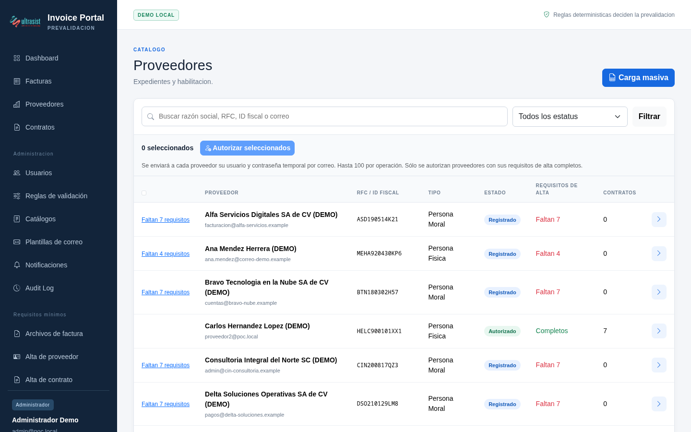
HU-01 · Escenario: Acceso al módulo y descarga de la plantilla predefinida · Paso: Abrir Proveedores › Carga masiva Resultado esperado: Se muestra la página "Carga masiva de proveedores" con el formulario de carga (.xlsx) y "Descargar plantilla". Resultado obtenido: Página "Carga masiva de proveedores" con el campo de archivo (accept=.xlsx) y el botón "Cargar proveedores". · Resultado del paso: PASS Archivo: evidencias/HU-01/01-listado-proveedores-inicial.png
Evidencia 2 — Página de carga masiva: instrucciones, campo de archivo .xlsx y "Descargar plantilla".
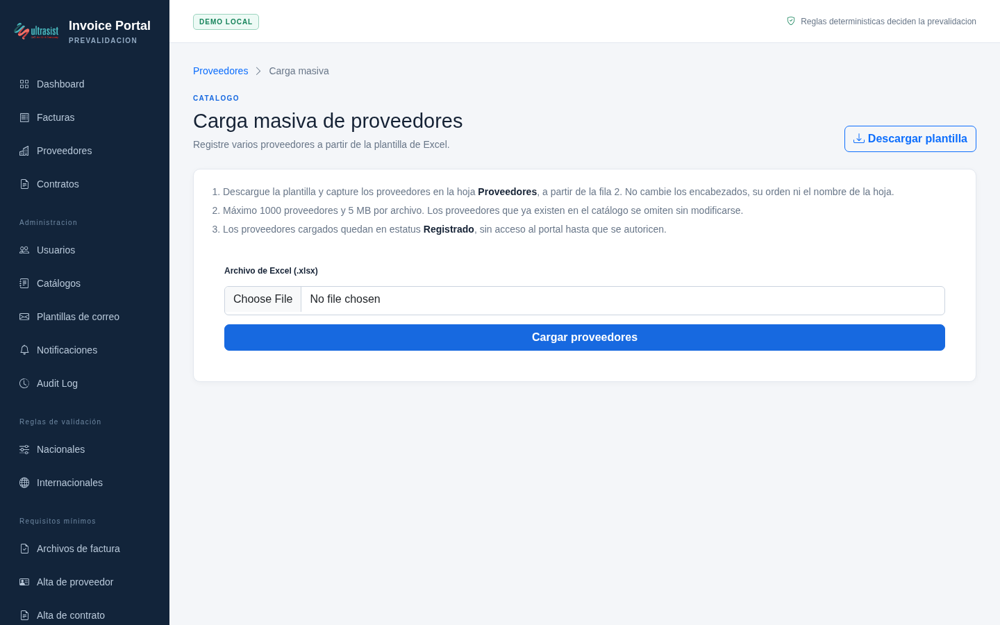
HU-01 · Escenario: Acceso al módulo y descarga de la plantilla predefinida · Paso: Abrir Proveedores › Carga masiva Resultado esperado: Se muestra la página "Carga masiva de proveedores" con el formulario de carga (.xlsx) y "Descargar plantilla". Resultado obtenido: Página "Carga masiva de proveedores" con el campo de archivo (accept=.xlsx) y el botón "Cargar proveedores". · Resultado del paso: PASS Archivo: evidencias/HU-01/02-pagina-carga-masiva.png
Evidencia 3 — Ventana de confirmación con "No, corregir primero (Recomendado)" preseleccionado.
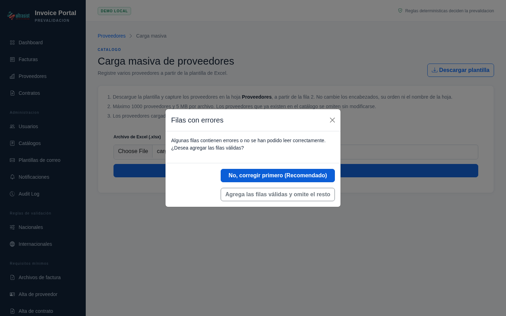
HU-01 · Escenario: Archivo con filas con errores: "No, corregir primero" · Paso: Cargar la plantilla llena con 1 fila válida y 3 filas con errores (RFC inválido, sin identificador fiscal, correo inválido) Resultado esperado: Se abre la ventana "Algunas filas contienen errores o no se han podido leer correctamente. ¿Desea agregar las filas válidas?". Resultado obtenido: Ventana mostrada: "Algunas filas contienen errores o no se han podido leer correctamente. ¿Desea agregar las filas válidas?"; botón con foco: "No, corregir primero (Recomendado)". · Resultado del paso: PASS Archivo: evidencias/HU-01/03-modal-filas-con-errores.png
Evidencia 4 — Lista de errores "Fila N · Columna: mensaje" tras elegir corregir primero.
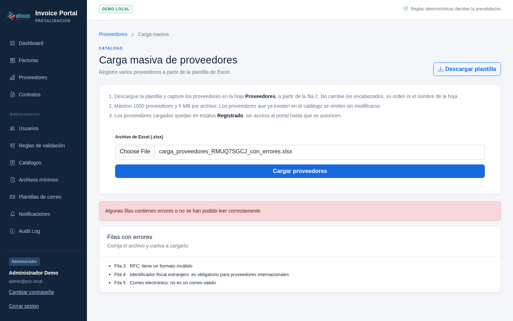
HU-01 · Escenario: Archivo con filas con errores: "No, corregir primero" · Paso: Elegir "No, corregir primero (Recomendado)" Resultado esperado: Se cierra la ventana, se listan los errores por fila y columna, y el catálogo no cambia. Resultado obtenido: Errores listados (3): Fila 3 · RFC: tiene un formato inválido / Fila 4 · Identificador fiscal extranjero: es obligatorio para proveedores internacionales / Fila 5 · Correo electrónico: no es un correo válido. La búsqueda del RFC QAD260101GCJ no devuelve proveedores. · Resultado del paso: PASS Archivo: evidencias/HU-01/04-errores-por-fila.png
Evidencia 5 — Búsqueda del RFC de la fila válida (QAD260101GCJ): sin resultados, el catálogo no cambió.
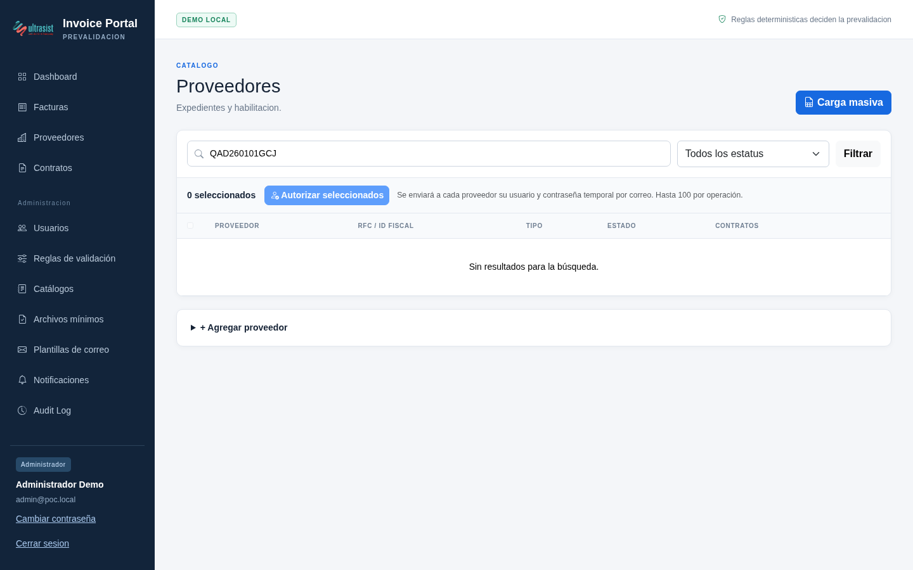
HU-01 · Escenario: Archivo con filas con errores: "No, corregir primero" · Paso: Elegir "No, corregir primero (Recomendado)" Resultado esperado: Se cierra la ventana, se listan los errores por fila y columna, y el catálogo no cambia. Resultado obtenido: Errores listados (3): Fila 3 · RFC: tiene un formato inválido / Fila 4 · Identificador fiscal extranjero: es obligatorio para proveedores internacionales / Fila 5 · Correo electrónico: no es un correo válido. La búsqueda del RFC QAD260101GCJ no devuelve proveedores. · Resultado del paso: PASS Archivo: evidencias/HU-01/05-catalogo-sin-cambios.png
Evidencia 6 — Resumen de la carga parcial: 1 proveedor registrado y las filas no registradas por errores.
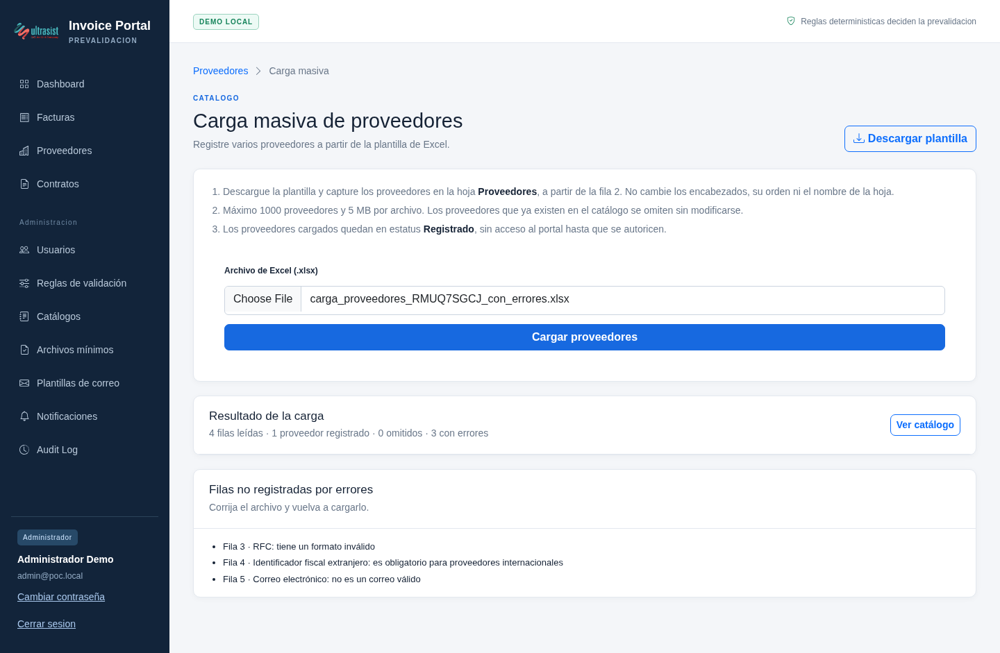
HU-01 · Escenario: Archivo con filas con errores: "Agrega las filas válidas y omite el resto" · Paso: Volver a cargar el mismo archivo y elegir "Agrega las filas válidas y omite el resto" Resultado esperado: Se registra sólo la fila válida y el resumen lista las filas no registradas con sus errores. Resultado obtenido: Resumen: "4 filas leídas · 1 proveedor registrado · 0 omitidos · 3 con errores"; sección "Filas no registradas por errores" con 3 errores. · Resultado del paso: PASS Archivo: evidencias/HU-01/06-resumen-carga-parcial.png
Evidencia 7 — Resultado de la carga del archivo válido: 3 proveedores registrados, sin errores.
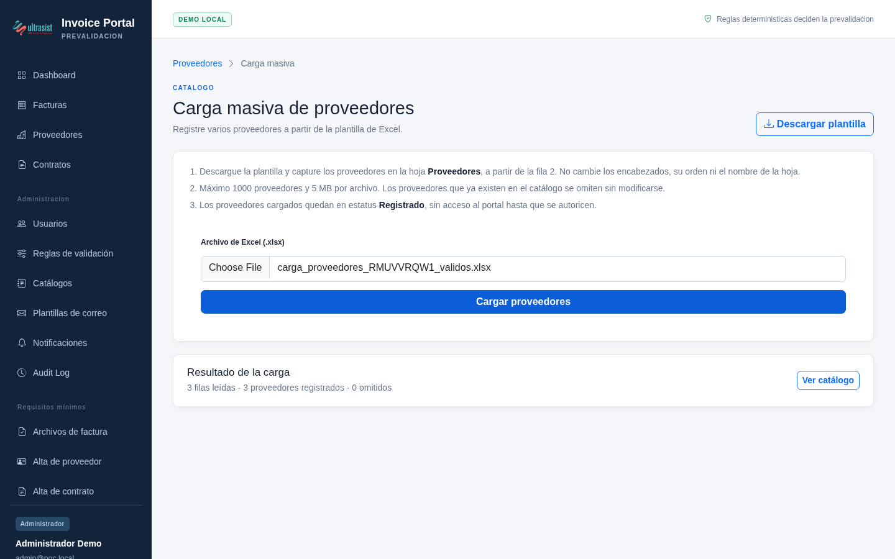
HU-01 · Escenario: Archivo válido: registro y mapeo de los datos al catálogo (RN-HU01-01) · Paso: Cargar la plantilla con 3 proveedores válidos (2 nacionales y 1 internacional) Resultado esperado: Se registran los 3 proveedores y se muestra el resumen "3 proveedores registrados". Resultado obtenido: Resumen: "3 filas leídas · 3 proveedores registrados · 0 omitidos". · Resultado del paso: PASS Archivo: evidencias/HU-01/07-resumen-carga-exitosa.png
Evidencia 8 — Catálogo filtrado (búsqueda "RMUQ7SGCJ", estatus Registrado) con los proveedores cargados.
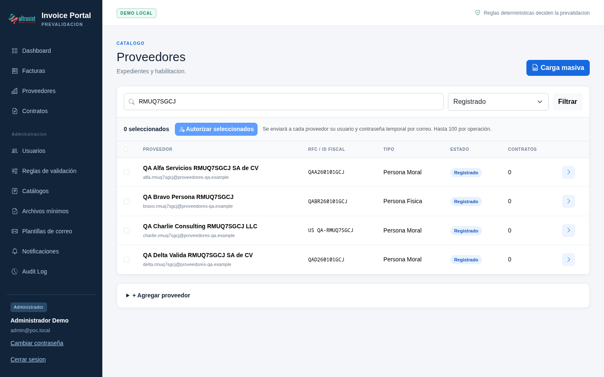
HU-01 · Escenario: Archivo válido: registro y mapeo de los datos al catálogo (RN-HU01-01) · Paso: Consultar el catálogo filtrado por estatus "Registrado" Resultado esperado: Los 3 proveedores aparecen con estatus "Registrado" (sin acceso al portal), con su RFC o identificador fiscal y tipo de persona. Resultado obtenido: Encontrados 3 proveedores en "Registrado": QA Alfa Servicios RMUQ7SGCJ SA de CV (QAA260101GCJ); QA Bravo Persona RMUQ7SGCJ (QABR260101GCJ); QA Charlie Consulting RMUQ7SGCJ LLC (QA-RMUQ7SGCJ). · Resultado del paso: PASS Archivo: evidencias/HU-01/08-catalogo-registrados.png
Evidencia 9 — Expediente del proveedor internacional cargado: identificador, origen, tipo, correo y estatus.
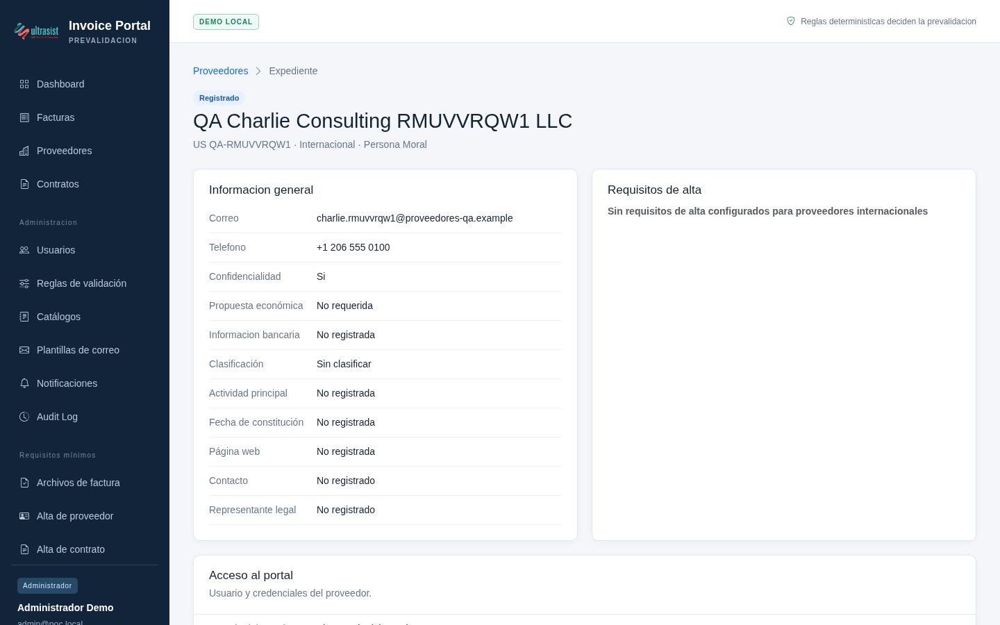
HU-01 · Escenario: Archivo válido: registro y mapeo de los datos al catálogo (RN-HU01-01) · Paso: Abrir el expediente del proveedor internacional Resultado esperado: El expediente muestra el origen Internacional, el identificador fiscal extranjero, el correo y el estatus "Registrado" (mapeo de columnas). Resultado obtenido: Expediente: "US QA-RMUQ7SGCJ · Internacional · Persona Moral", estatus "Registrado", correo charlie.rmuq7sgcj@proveedores-qa.example. · Resultado del paso: PASS Archivo: evidencias/HU-01/09-expediente-internacional.png
Yo como administrador requiere una opción para actualizar el estatus del proveedor a “Autorizado” de forma masiva para que el proveedor esté listo para operar.
Criterios de aceptación
El sistema deberá permitir seleccionar múltiples proveedores y cambiar su estatus en una sola operación.
Al quedar “Autorizado”, el proveedor queda habilitado para acceder al portal y se dispara el envío de sus credenciales (RF-03).
Escenarios probados
#
Escenario / paso
Resultado esperado
Resultado obtenido
Estado
1
Selección múltiple y autorización en una sola operación
PASS
1.1
Filtrar el catálogo por estatus "Registrado" y seleccionar los proveedores cargados en HU-01
Sólo los proveedores "Registrado" tienen casilla; al marcar 3, el contador indica "3 seleccionados".
Un modal pide confirmación porque se enviarán las credenciales a cada proveedor.
Modal: "Se autorizarán 3 proveedores y se enviará a cada uno su usuario y contraseña temporal por correo.".
PASS
1.3
Confirmar con "Autorizar y enviar credenciales"
Los 3 proveedores quedan "Autorizado" en una sola operación y el resumen indica "Autorizado · Credenciales enviadas" para cada uno.
Resumen: "3 autorizados · 0 omitidos · 0 no autorizados"; cada fila: "Autorizado · Credenciales enviadas".
PASS
1.4
Consultar el catálogo filtrado por estatus "Autorizado"
Los 3 proveedores aparecen con estatus "Autorizado" y ya no tienen casilla de selección.
3 proveedores con estatus "Autorizado" y sin casilla de selección.
PASS
2
El proveedor sin autorizar sigue "Registrado"
PASS
2.1
Consultar el proveedor de la carga parcial de HU-01 (no seleccionado)
Conserva el estatus "Registrado": la autorización sólo afecta a los seleccionados.
"QA Delta Valida RMUQ7SGCJ SA de CV" sigue con estatus "Registrado".
PASS
Resultado esperado
Selección múltiple y autorización en una sola operación: Los 3 proveedores aparecen con estatus "Autorizado" y ya no tienen casilla de selección.
El proveedor sin autorizar sigue "Registrado": Conserva el estatus "Registrado": la autorización sólo afecta a los seleccionados.
Resultado obtenido
PASSSelección múltiple y autorización en una sola operación: 3 proveedores con estatus "Autorizado" y sin casilla de selección.
PASSEl proveedor sin autorizar sigue "Registrado": "QA Delta Valida RMUQ7SGCJ SA de CV" sigue con estatus "Registrado".
Evidencia visual (5 capturas)
Evidencia 1 — Proveedores en "Registrado" con 3 casillas marcadas y el contador "3 seleccionados".
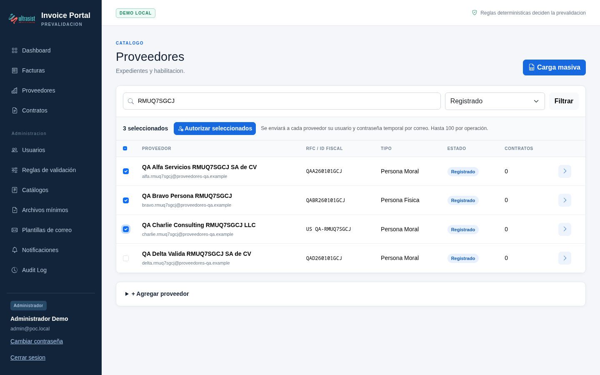
HU-02 · Escenario: Selección múltiple y autorización en una sola operación · Paso: Filtrar el catálogo por estatus "Registrado" y seleccionar los proveedores cargados en HU-01 Resultado esperado: Sólo los proveedores "Registrado" tienen casilla; al marcar 3, el contador indica "3 seleccionados". Resultado obtenido: Contador: "3 seleccionados"; botón "Autorizar seleccionados" habilitado. · Resultado del paso: PASS Archivo: evidencias/HU-02/01-seleccion-registrados.png
Evidencia 2 — Modal "Autorizar proveedores" con el texto de confirmación.
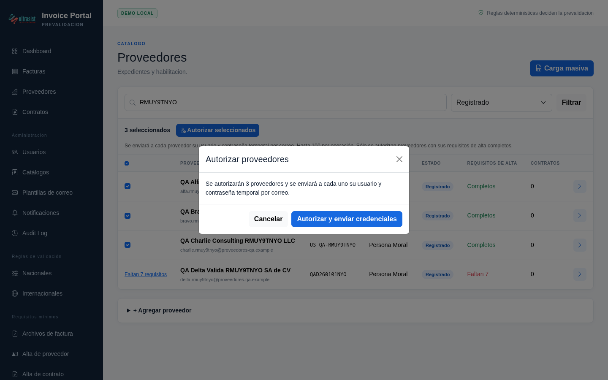
HU-02 · Escenario: Selección múltiple y autorización en una sola operación · Paso: Pulsar "Autorizar seleccionados" Resultado esperado: Un modal pide confirmación porque se enviarán las credenciales a cada proveedor. Resultado obtenido: Modal: "Se autorizarán 3 proveedores y se enviará a cada uno su usuario y contraseña temporal por correo.". · Resultado del paso: PASS Archivo: evidencias/HU-02/02-modal-confirmacion.png
Evidencia 3 — Resultado de la autorización: 3 autorizados, credenciales enviadas a cada proveedor.
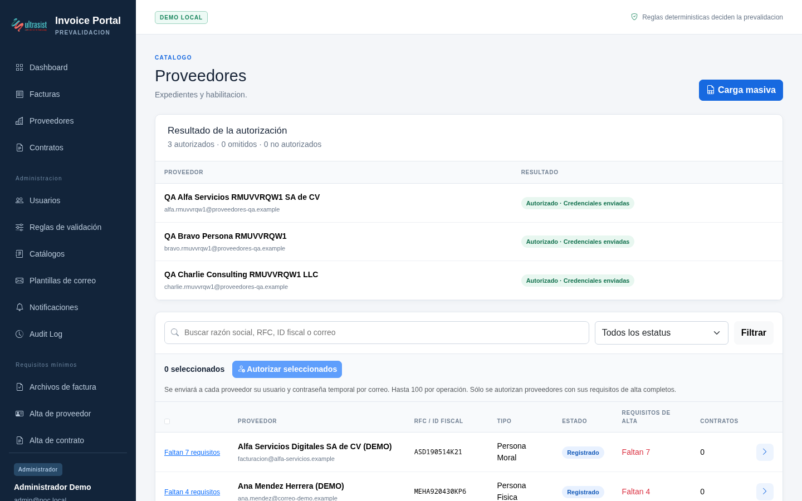
HU-02 · Escenario: Selección múltiple y autorización en una sola operación · Paso: Confirmar con "Autorizar y enviar credenciales" Resultado esperado: Los 3 proveedores quedan "Autorizado" en una sola operación y el resumen indica "Autorizado · Credenciales enviadas" para cada uno. Resultado obtenido: Resumen: "3 autorizados · 0 omitidos · 0 no autorizados"; cada fila: "Autorizado · Credenciales enviadas". · Resultado del paso: PASS Archivo: evidencias/HU-02/03-resultado-autorizacion.png
Evidencia 4 — Catálogo filtrado por "Autorizado": los 3 proveedores con su nuevo estatus.
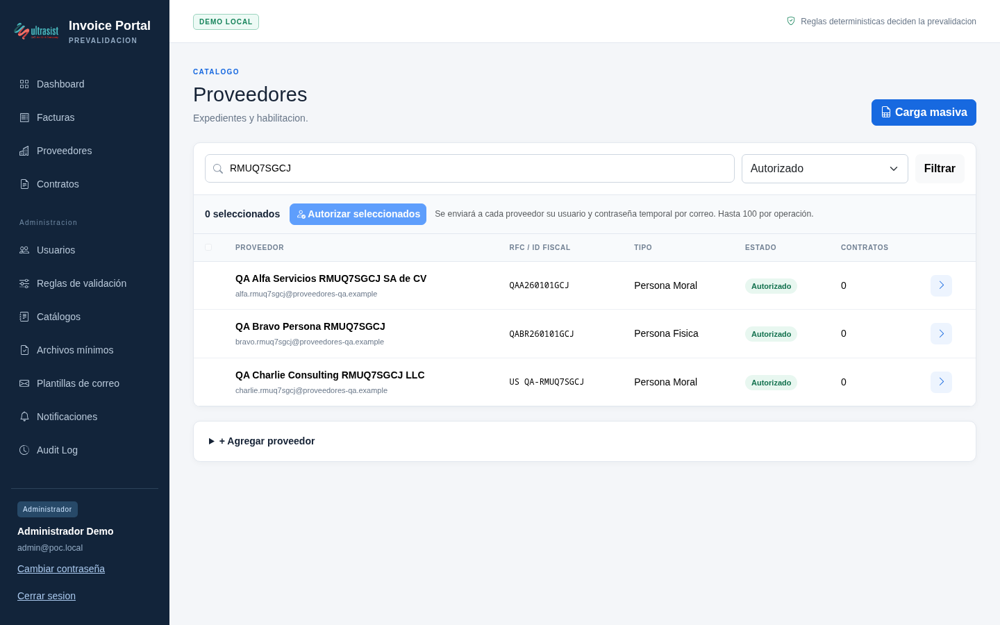
HU-02 · Escenario: Selección múltiple y autorización en una sola operación · Paso: Consultar el catálogo filtrado por estatus "Autorizado" Resultado esperado: Los 3 proveedores aparecen con estatus "Autorizado" y ya no tienen casilla de selección. Resultado obtenido: 3 proveedores con estatus "Autorizado" y sin casilla de selección. · Resultado del paso: PASS Archivo: evidencias/HU-02/04-catalogo-autorizados.png
Evidencia 5 — El proveedor que no se seleccionó sigue en "Registrado".
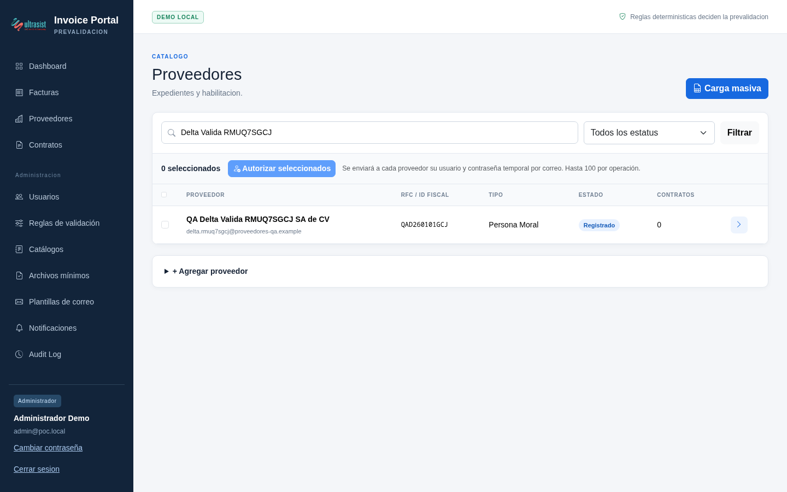
HU-02 · Escenario: El proveedor sin autorizar sigue "Registrado" · Paso: Consultar el proveedor de la carga parcial de HU-01 (no seleccionado) Resultado esperado: Conserva el estatus "Registrado": la autorización sólo afecta a los seleccionados. Resultado obtenido: "QA Delta Valida RMUQ7SGCJ SA de CV" sigue con estatus "Registrado". · Resultado del paso: PASS Archivo: evidencias/HU-02/05-no-seleccionado-registrado.png
HU-03 — Envío de credenciales al proveedor
Resultado: PASSRol: Administrador / Sistema · RF-03 · RN-HU03-01 · Depende de: HU-02 · Prueba: tests/hu/specs/03-HU-03-envio-credenciales.spec.ts · Playwright: passed
Objetivo
Yo como administrador requiero que se mande al correo del Proveedor que haya sido “Autorizado”, tanto el usuario y password temporal, para que el proveedor pueda logearse por primera vez al portal de proveedores de forma segura.
Criterios de aceptación
El envío del correo con usuario y contraseña temporal deberá dispararse automáticamente al quedar el proveedor “Autorizado”.
La contraseña temporal deberá gestionarse en el proveedor de identidad (Keycloak) y no almacenarse, ni en claro ni como hash, dentro del sistema de proveedores (RN-HU03-01).
Escenarios probados
#
Escenario / paso
Resultado esperado
Resultado obtenido
Estado
1
Envío automático del correo con usuario y contraseña temporal al autorizar
PASS
1.1
Abrir Administración › Notificaciones y revisar la bitácora de envíos
La bitácora registra un envío "Credenciales de acceso" con resultado "Enviado" para cada proveedor autorizado en HU-02.
Bitácora con 3 envíos "Credenciales de acceso" en estado "Enviado" para: alfa.rmuq7sgcj@proveedores-qa.example, bravo.rmuq7sgcj@proveedores-qa.example, charlie.rmuq7sgcj@proveedores-qa.example.
PASS
1.2
Abrir el correo generado para alfa.rmuq7sgcj@proveedores-qa.example
El correo va al correo del proveedor e incluye el usuario, la contraseña temporal y la dirección de inicio de sesión del portal.
Correo "Acceso al Portal de Proveedores ULTRASIST" para alfa.rmuq7sgcj@proveedores-qa.example: incluye "Usuario: alfa.rmuq7sgcj@proveedores-qa.example", una contraseña temporal de 20 caracteres y "Portal: http://127.0.0.1:8000/login".
PASS
2
Expediente del proveedor: acceso al portal con contraseña temporal
PASS
2.1
Abrir el expediente de QA Alfa Servicios RMUQ7SGCJ SA de CV
La sección "Acceso al portal" muestra el usuario, la contraseña "Temporal, pendiente de cambio" (leída de Keycloak) y "Credenciales enviadas el …".
Acceso al portal: Usuario del portal alfa.rmuq7sgcj@proveedores-qa.example Último acceso Nunca Contraseña Temporal, pendiente de cambio Credenciales Credenciales enviadas el 01/10/2026 18:18
PASS
3
RN-HU03-01: el portal no almacena la contraseña (sólo Keycloak)
PASS
3.1
Consultar en la base del portal el usuario alfa.rmuq7sgcj@proveedores-qa.example (sólo lectura)
El usuario existe con rol Proveedor, enlazado a Keycloak por su "sub", sin contraseña ni hash guardados (password_hash vacío).
Envío automático del correo con usuario y contraseña temporal al autorizar: El correo va al correo del proveedor e incluye el usuario, la contraseña temporal y la dirección de inicio de sesión del portal.
Expediente del proveedor: acceso al portal con contraseña temporal: La sección "Acceso al portal" muestra el usuario, la contraseña "Temporal, pendiente de cambio" (leída de Keycloak) y "Credenciales enviadas el …".
RN-HU03-01: el portal no almacena la contraseña (sólo Keycloak): El usuario existe con rol Proveedor, enlazado a Keycloak por su "sub", sin contraseña ni hash guardados (password_hash vacío).
Resultado obtenido
PASSEnvío automático del correo con usuario y contraseña temporal al autorizar: Correo "Acceso al Portal de Proveedores ULTRASIST" para alfa.rmuq7sgcj@proveedores-qa.example: incluye "Usuario: alfa.rmuq7sgcj@proveedores-qa.example", una contraseña temporal de 20 caracteres y "Portal: http://127.0.0.1:8000/login".
PASSExpediente del proveedor: acceso al portal con contraseña temporal: Acceso al portal: Usuario del portal alfa.rmuq7sgcj@proveedores-qa.example Último acceso Nunca Contraseña Temporal, pendiente de cambio Credenciales Credenciales enviadas el 01/10/2026 18:18
PASSRN-HU03-01: el portal no almacena la contraseña (sólo Keycloak): Usuario alfa.rmuq7sgcj@proveedores-qa.example: rol Proveedor, keycloak_sub registrado = true, password_hash vacío = true.
Evidencia visual (3 capturas)
Evidencia 1 — Bitácora de envíos: "Credenciales de acceso" enviado a cada proveedor autorizado.
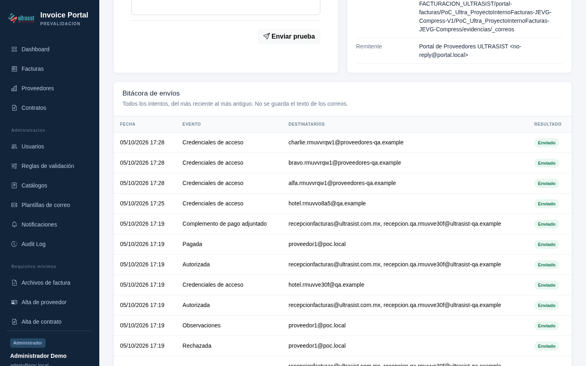
HU-03 · Escenario: Envío automático del correo con usuario y contraseña temporal al autorizar · Paso: Abrir Administración › Notificaciones y revisar la bitácora de envíos Resultado esperado: La bitácora registra un envío "Credenciales de acceso" con resultado "Enviado" para cada proveedor autorizado en HU-02. Resultado obtenido: Bitácora con 3 envíos "Credenciales de acceso" en estado "Enviado" para: alfa.rmuq7sgcj@proveedores-qa.example, bravo.rmuq7sgcj@proveedores-qa.example, charlie.rmuq7sgcj@proveedores-qa.example. · Resultado del paso: PASS Archivo: evidencias/HU-03/01-bitacora-credenciales.png
Evidencia 2 — Correo "Credenciales de acceso" generado por el portal para alfa.rmuq7sgcj@proveedores-qa.example.
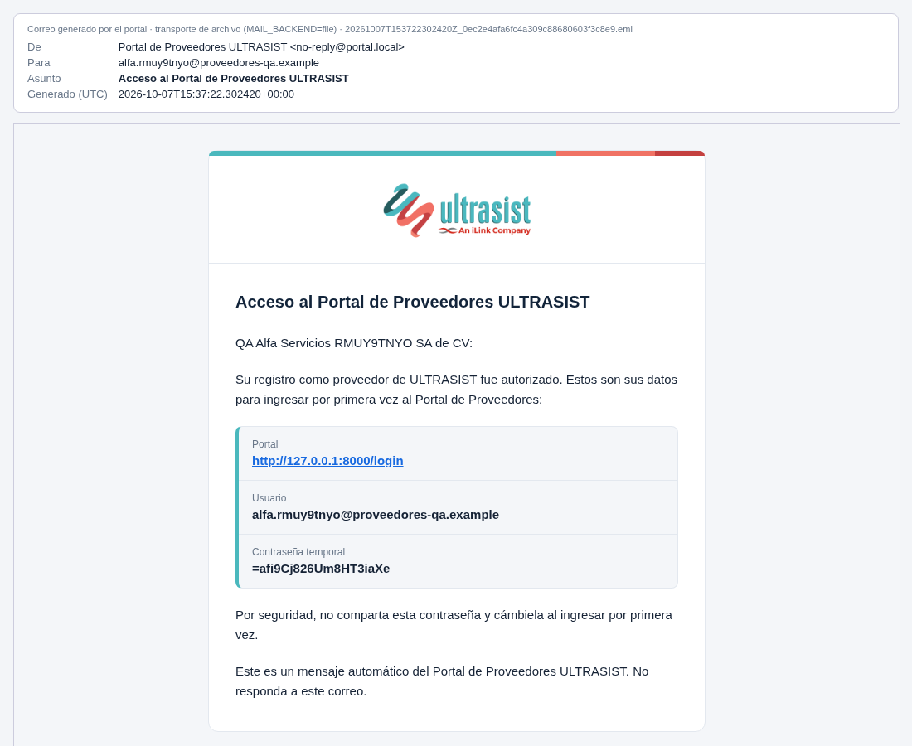
HU-03 · Escenario: Envío automático del correo con usuario y contraseña temporal al autorizar · Paso: Abrir el correo generado para alfa.rmuq7sgcj@proveedores-qa.example Resultado esperado: El correo va al correo del proveedor e incluye el usuario, la contraseña temporal y la dirección de inicio de sesión del portal. Resultado obtenido: Correo "Acceso al Portal de Proveedores ULTRASIST" para alfa.rmuq7sgcj@proveedores-qa.example: incluye "Usuario: alfa.rmuq7sgcj@proveedores-qa.example", una contraseña temporal de 20 caracteres y "Portal: http://127.0.0.1:8000/login". · Resultado del paso: PASS Archivo: evidencias/HU-03/02-correo-credenciales.png · Correo generado por el portal (.eml del transporte de archivo) mostrado en Chromium
Evidencia 3 — Expediente: "Acceso al portal" con usuario, contraseña temporal pendiente de cambio y envío de credenciales.
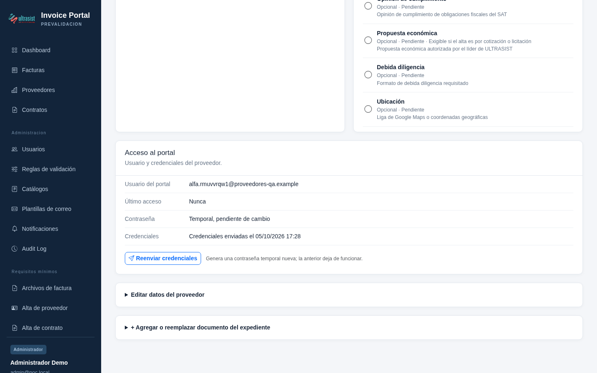
HU-03 · Escenario: Expediente del proveedor: acceso al portal con contraseña temporal · Paso: Abrir el expediente de QA Alfa Servicios RMUQ7SGCJ SA de CV Resultado esperado: La sección "Acceso al portal" muestra el usuario, la contraseña "Temporal, pendiente de cambio" (leída de Keycloak) y "Credenciales enviadas el …". Resultado obtenido: Acceso al portal: Usuario del portal alfa.rmuq7sgcj@proveedores-qa.example Último acceso Nunca Contraseña Temporal, pendiente de cambio Credenciales Credenciales enviadas el 01/10/2026 18:18 · Resultado del paso: PASS Archivo: evidencias/HU-03/03-expediente-acceso-portal.png
HU-04 — Definición de archivos requeridos por tipo de proveedor
Yo como administrador requiero definir los archivos mínimos que debe subir el proveedor cuando se trate un proveedor “Nacional” o “internacional” para poder enviar su factura.
Criterios de aceptación
La configuración deberá diferenciar el conjunto de archivos mínimos para proveedores “Nacional” y para proveedores “Internacional”.
Los archivos mínimos definidos aquí condicionan el registro/envío de la factura (véase RF-07 y RF-14).
Escenarios probados
#
Escenario / paso
Resultado esperado
Resultado obtenido
Estado
1
Configuración diferenciada para proveedores Nacional e Internacional
PASS
1.1
Abrir Administración › Archivos mínimos
La tabla muestra cada tipo de documento con un nivel (Obligatorio / Opcional / No aplica) para Nacional y otro para Internacional; los niveles fijos (CFDI e Invoice) aparecen con candado.
Columnas: TIPO DE DOCUMENTO | FORMATOS | NACIONAL | INTERNACIONAL. XML del CFDI: Nacional "Obligatorio" fijo / Internacional "No aplica"; Invoice (PDF): Nacional "No aplica" / Internacional "Obligatorio". 8 niveles fijos con candado.
PASS
1.2
Pulsar "Guardar configuración" sin cambiar nada
El sistema responde "Sin cambios".
Aviso: "Sin cambios".
PASS
2
Alta de un tipo de documento soporte obligatorio sólo para el proveedor Internacional
PASS
2.1
Crear el tipo soporte "Constancia QA RMUQ7SGCJ" (PDF; Nacional: No aplica; Internacional: Obligatorio)
Se crea el tipo ("Tipo de documento creado") y aparece en la configuración con esos niveles.
Aviso "Tipo de documento creado"; fila "Constancia QA RMUQ7SGCJ" con Nacional = No aplica e Internacional = Obligatorio.
PASS
3
La configuración condiciona la carga documental según el origen del proveedor
PASS
3.1
El proveedor internacional abre la carga documental de su factura INV-2026-0042
El checklist incluye "Constancia QA RMUQ7SGCJ" como Obligatorio y Pendiente, se ofrece Invoice (PDF) y no se ofrecen el XML ni el PDF del CFDI.
Checklist: "Falta 1 archivo obligatorio"; tipos ofrecidos: Invoice, Orden de compra, Vo.Bo. del líder de proyecto, Constancia QA RMUQ7SGCJ, Contrato, Anexo del contrato, Documentación adicional.
PASS
3.2
El proveedor internacional intenta "Enviar a validación" INV-2026-0042 sin cargar el nuevo archivo obligatorio
El envío no procede por el archivo obligatorio faltante y la factura no queda "Enviada".
Respuesta del portal: "409 No fue posible completar la operacion Faltan archivos obligatorios. Cárguelos antes de enviar Referencia: c8724aeb1ab84d2b8b0dd3d9ca9ef8d1 Ir al acceso"; estatus de INV-2026-0042: "Borrador".
PASS
3.3
El proveedor nacional abre la carga documental de su factura D-SIN-VOBO
Se ofrecen el XML y el PDF del CFDI; "Constancia QA RMUQ7SGCJ" no se ofrece porque no aplica al Nacional.
Checklist: "Falta 1 archivo obligatorio"; tipos ofrecidos: XML del CFDI, PDF del CFDI, Orden de compra, Vo.Bo. del líder de proyecto, Contrato, Anexo del contrato, Complemento de pago, Complemento de pago, Documentación adicional.
PASS
4
Desactivar el tipo soporte: deja de exigirse
PASS
4.1
Desactivar "Constancia QA RMUQ7SGCJ"
El tipo pasa a "Tipos inactivos" ("Estado del tipo de documento actualizado").
Aviso "Estado del tipo de documento actualizado"; "Constancia QA RMUQ7SGCJ" listado en Tipos inactivos.
PASS
4.2
El proveedor internacional vuelve a la carga documental de INV-2026-0042 y reemplaza su Orden de compra
El tipo desactivado ya no aparece, los obligatorios están completos y la factura vuelve a "Cargada" ("Factura cargada. Ya puede enviarla a validación.").
Checklist: "Archivos obligatorios completos Factura cargada. Ya puede enviarla a validación."; "Constancia QA RMUQ7SGCJ" ya no se lista.
PASS
Resultado esperado
Configuración diferenciada para proveedores Nacional e Internacional: El sistema responde "Sin cambios".
Alta de un tipo de documento soporte obligatorio sólo para el proveedor Internacional: Se crea el tipo ("Tipo de documento creado") y aparece en la configuración con esos niveles.
La configuración condiciona la carga documental según el origen del proveedor: Se ofrecen el XML y el PDF del CFDI; "Constancia QA RMUQ7SGCJ" no se ofrece porque no aplica al Nacional.
Desactivar el tipo soporte: deja de exigirse: El tipo desactivado ya no aparece, los obligatorios están completos y la factura vuelve a "Cargada" ("Factura cargada. Ya puede enviarla a validación.").
Resultado obtenido
PASSConfiguración diferenciada para proveedores Nacional e Internacional: Aviso: "Sin cambios".
PASSAlta de un tipo de documento soporte obligatorio sólo para el proveedor Internacional: Aviso "Tipo de documento creado"; fila "Constancia QA RMUQ7SGCJ" con Nacional = No aplica e Internacional = Obligatorio.
PASSLa configuración condiciona la carga documental según el origen del proveedor: Checklist: "Falta 1 archivo obligatorio"; tipos ofrecidos: XML del CFDI, PDF del CFDI, Orden de compra, Vo.Bo. del líder de proyecto, Contrato, Anexo del contrato, Complemento de pago, Complemento de pago, Documentación adicional.
PASSDesactivar el tipo soporte: deja de exigirse: Checklist: "Archivos obligatorios completos Factura cargada. Ya puede enviarla a validación."; "Constancia QA RMUQ7SGCJ" ya no se lista.
Evidencia visual (9 capturas)
Evidencia 1 — Archivos mínimos por origen: columnas Nacional e Internacional y niveles fijos con candado. (parte 1 de 3)
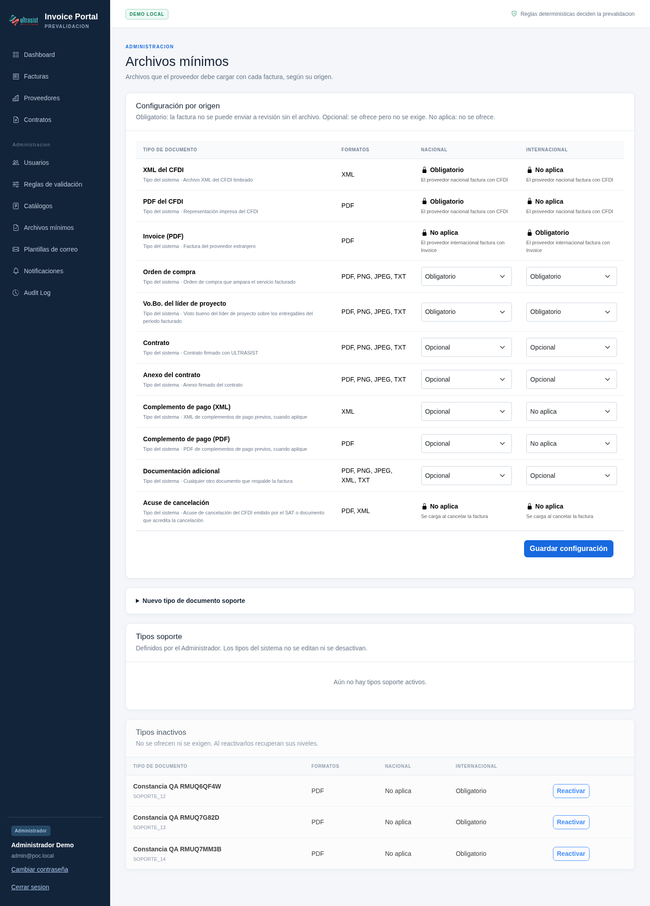
Evidencia 1 — Archivos mínimos por origen: columnas Nacional e Internacional y niveles fijos con candado. (parte 2 de 3)Evidencia 1 — Archivos mínimos por origen: columnas Nacional e Internacional y niveles fijos con candado. (parte 3 de 3)
HU-04 · Escenario: Configuración diferenciada para proveedores Nacional e Internacional · Paso: Abrir Administración › Archivos mínimos Resultado esperado: La tabla muestra cada tipo de documento con un nivel (Obligatorio / Opcional / No aplica) para Nacional y otro para Internacional; los niveles fijos (CFDI e Invoice) aparecen con candado. Resultado obtenido: Columnas: TIPO DE DOCUMENTO | FORMATOS | NACIONAL | INTERNACIONAL. XML del CFDI: Nacional "Obligatorio" fijo / Internacional "No aplica"; Invoice (PDF): Nacional "No aplica" / Internacional "Obligatorio". 8 niveles fijos con candado. · Resultado del paso: PASS Archivo: evidencias/HU-04/01-configuracion-por-origen.png
Evidencia 2 — Aviso "Sin cambios" al guardar la configuración sin modificaciones.
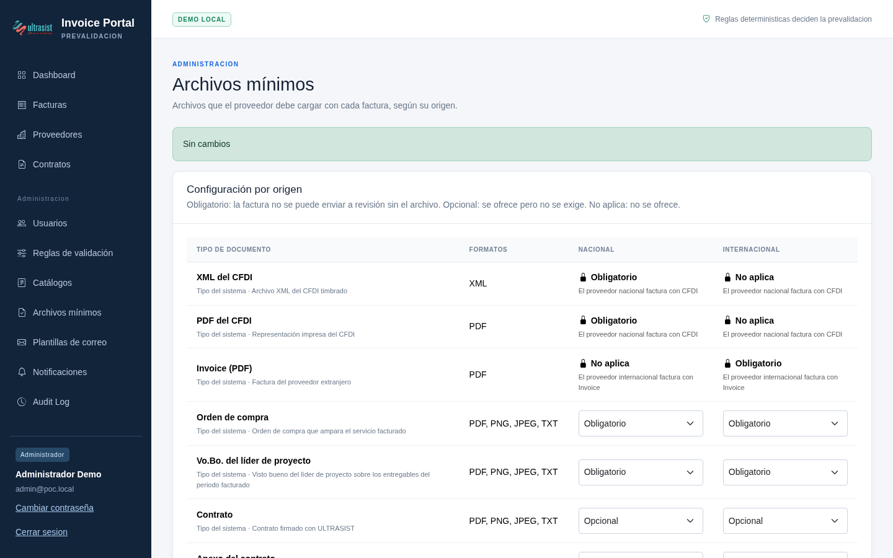
HU-04 · Escenario: Configuración diferenciada para proveedores Nacional e Internacional · Paso: Pulsar "Guardar configuración" sin cambiar nada Resultado esperado: El sistema responde "Sin cambios". Resultado obtenido: Aviso: "Sin cambios". · Resultado del paso: PASS Archivo: evidencias/HU-04/02-guardar-sin-cambios.png
Evidencia 3 — Formulario "Nuevo tipo de documento soporte" capturado.
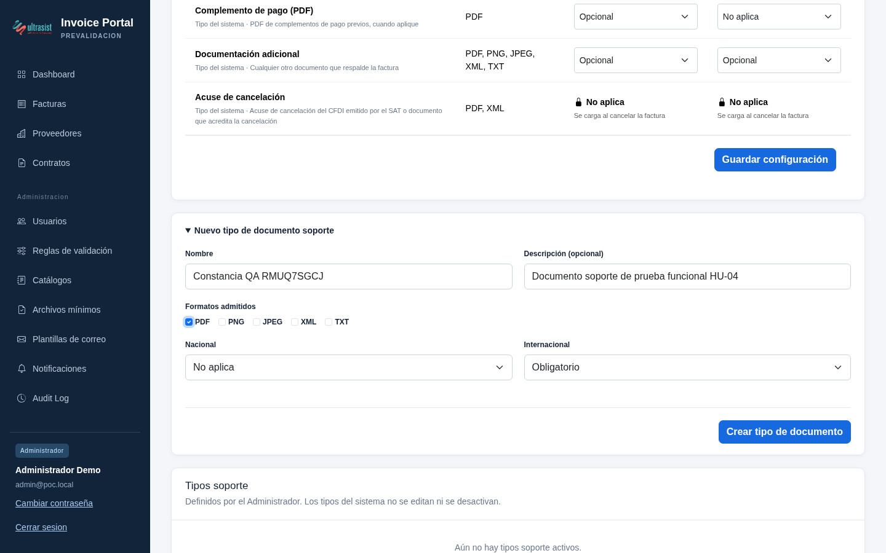
HU-04 · Escenario: Alta de un tipo de documento soporte obligatorio sólo para el proveedor Internacional · Paso: Crear el tipo soporte "Constancia QA RMUQ7SGCJ" (PDF; Nacional: No aplica; Internacional: Obligatorio) Resultado esperado: Se crea el tipo ("Tipo de documento creado") y aparece en la configuración con esos niveles. Resultado obtenido: Aviso "Tipo de documento creado"; fila "Constancia QA RMUQ7SGCJ" con Nacional = No aplica e Internacional = Obligatorio. · Resultado del paso: PASS Archivo: evidencias/HU-04/03-formulario-tipo-soporte.png
Evidencia 4 — Tipo "Constancia QA RMUQ7SGCJ" en la configuración: Nacional "No aplica", Internacional "Obligatorio".
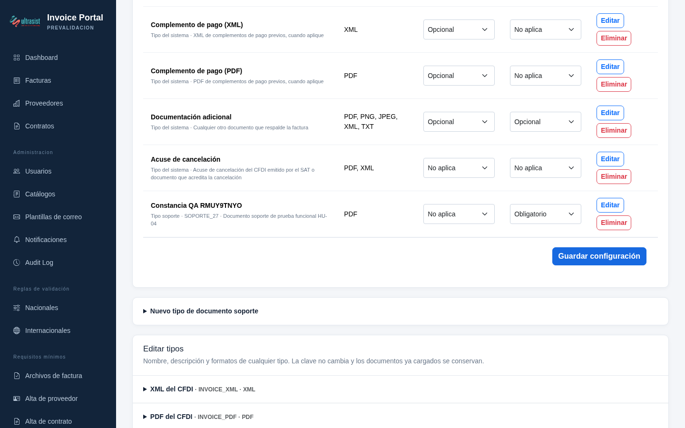
HU-04 · Escenario: Alta de un tipo de documento soporte obligatorio sólo para el proveedor Internacional · Paso: Crear el tipo soporte "Constancia QA RMUQ7SGCJ" (PDF; Nacional: No aplica; Internacional: Obligatorio) Resultado esperado: Se crea el tipo ("Tipo de documento creado") y aparece en la configuración con esos niveles. Resultado obtenido: Aviso "Tipo de documento creado"; fila "Constancia QA RMUQ7SGCJ" con Nacional = No aplica e Internacional = Obligatorio. · Resultado del paso: PASS Archivo: evidencias/HU-04/04-tipo-soporte-creado.png
Evidencia 5 — Carga documental del proveedor internacional: "Constancia QA RMUQ7SGCJ" obligatorio y pendiente.
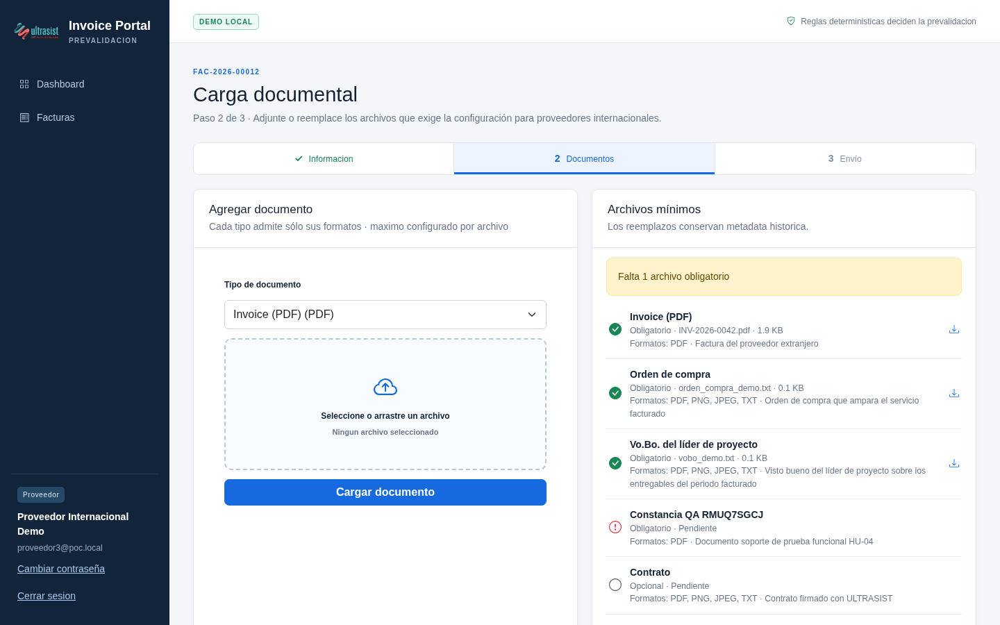
HU-04 · Escenario: La configuración condiciona la carga documental según el origen del proveedor · Paso: El proveedor internacional abre la carga documental de su factura INV-2026-0042 Resultado esperado: El checklist incluye "Constancia QA RMUQ7SGCJ" como Obligatorio y Pendiente, se ofrece Invoice (PDF) y no se ofrecen el XML ni el PDF del CFDI. Resultado obtenido: Checklist: "Falta 1 archivo obligatorio"; tipos ofrecidos: Invoice, Orden de compra, Vo.Bo. del líder de proyecto, Constancia QA RMUQ7SGCJ, Contrato, Anexo del contrato, Documentación adicional. · Resultado del paso: PASS Archivo: evidencias/HU-04/05-internacional-tipo-obligatorio.png
Evidencia 6 — Intento de envío sin el archivo obligatorio: el envío no procede.
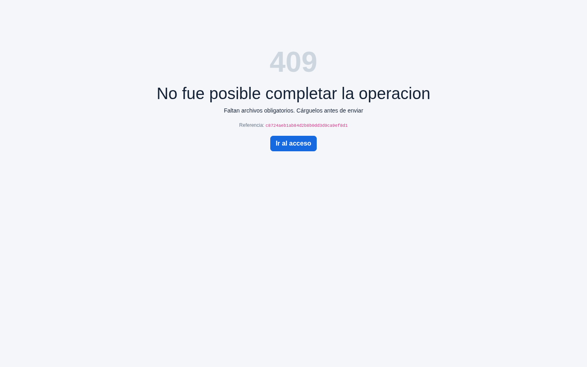
HU-04 · Escenario: La configuración condiciona la carga documental según el origen del proveedor · Paso: El proveedor internacional intenta "Enviar a validación" INV-2026-0042 sin cargar el nuevo archivo obligatorio Resultado esperado: El envío no procede por el archivo obligatorio faltante y la factura no queda "Enviada". Resultado obtenido: Respuesta del portal: "409 No fue posible completar la operacion Faltan archivos obligatorios. Cárguelos antes de enviar Referencia: c8724aeb1ab84d2b8b0dd3d9ca9ef8d1 Ir al acceso"; estatus de INV-2026-0042: "Borrador". · Resultado del paso: PASS Archivo: evidencias/HU-04/06-envio-bloqueado-por-obligatorio.png
Evidencia 7 — Carga documental del proveedor nacional: se ofrecen XML/PDF del CFDI y no "Constancia QA RMUQ7SGCJ".
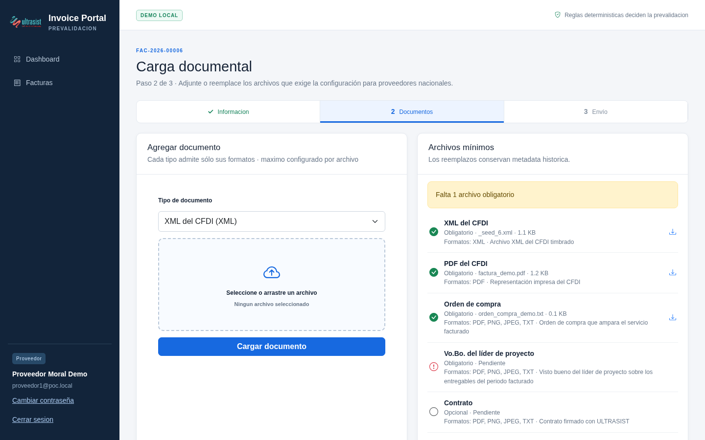
HU-04 · Escenario: La configuración condiciona la carga documental según el origen del proveedor · Paso: El proveedor nacional abre la carga documental de su factura D-SIN-VOBO Resultado esperado: Se ofrecen el XML y el PDF del CFDI; "Constancia QA RMUQ7SGCJ" no se ofrece porque no aplica al Nacional. Resultado obtenido: Checklist: "Falta 1 archivo obligatorio"; tipos ofrecidos: XML del CFDI, PDF del CFDI, Orden de compra, Vo.Bo. del líder de proyecto, Contrato, Anexo del contrato, Complemento de pago, Complemento de pago, Documentación adicional. · Resultado del paso: PASS Archivo: evidencias/HU-04/07-nacional-sin-tipo.png
Evidencia 8 — "Constancia QA RMUQ7SGCJ" en "Tipos inactivos".
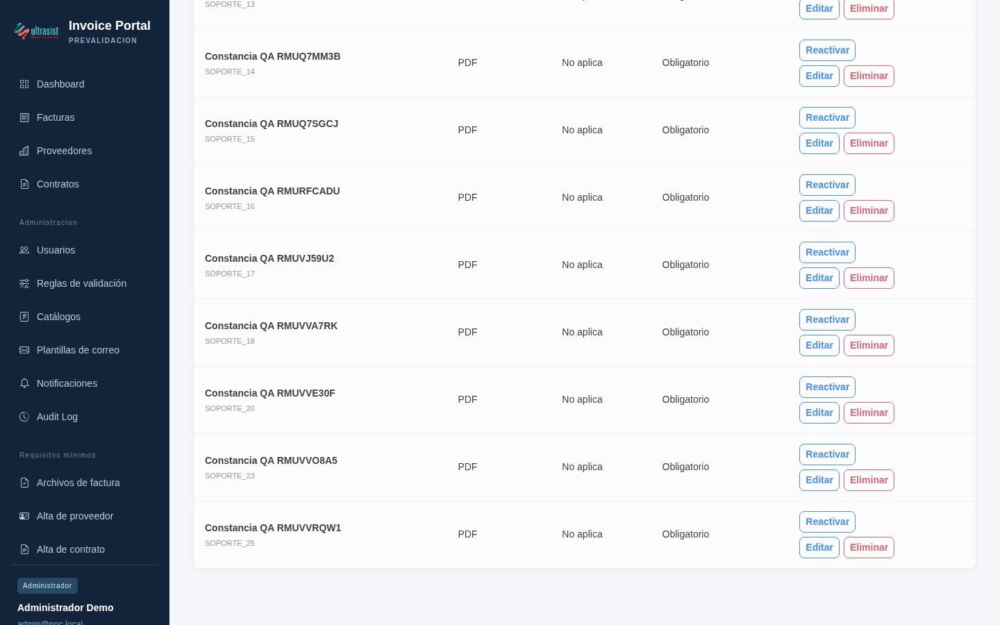
HU-04 · Escenario: Desactivar el tipo soporte: deja de exigirse · Paso: Desactivar "Constancia QA RMUQ7SGCJ" Resultado esperado: El tipo pasa a "Tipos inactivos" ("Estado del tipo de documento actualizado"). Resultado obtenido: Aviso "Estado del tipo de documento actualizado"; "Constancia QA RMUQ7SGCJ" listado en Tipos inactivos. · Resultado del paso: PASS Archivo: evidencias/HU-04/08-tipo-inactivo.png
Evidencia 9 — Tras desactivar el tipo, el checklist está completo y la factura vuelve a "Cargada".
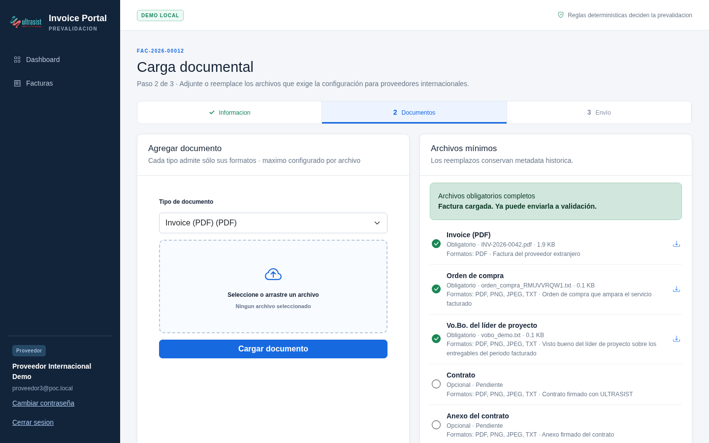
HU-04 · Escenario: Desactivar el tipo soporte: deja de exigirse · Paso: El proveedor internacional vuelve a la carga documental de INV-2026-0042 y reemplaza su Orden de compra Resultado esperado: El tipo desactivado ya no aparece, los obligatorios están completos y la factura vuelve a "Cargada" ("Factura cargada. Ya puede enviarla a validación."). Resultado obtenido: Checklist: "Archivos obligatorios completos Factura cargada. Ya puede enviarla a validación."; "Constancia QA RMUQ7SGCJ" ya no se lista. · Resultado del paso: PASS Archivo: evidencias/HU-04/09-internacional-sin-tipo.png
HU-05 — Configuración de plantillas de estatus de factura
Yo como administrador requiero definir en la sección de configuración del sistema, los diferentes tipos de plantillas que se enviaran a los usuarios en los diferentes tipos de cambios de estatus de la factura “Autorizada”, ”Rechazada”, ”Observaciones” y “Cancelada”.
Criterios de aceptación
Deberá existir una plantilla configurable por cada tipo de cambio de estatus indicado.
Las plantillas alimentan las notificaciones automáticas descritas en RF-09, RF-10 y RF-16.
Vista previa con datos de ejemplo sin guardar; validación de variables obligatorias; carga del texto predeterminado (HU-05 §7).
Escenarios probados
#
Escenario / paso
Resultado esperado
Resultado obtenido
Estado
1
Una plantilla configurable por cada cambio de estatus de la factura
PASS
1.1
Abrir Administración › Plantillas de correo
El listado muestra una plantilla para "Autorizada", "Rechazada", "Observaciones" y "Cancelada", con su destinatario, asunto y botón "Editar".
Plantillas: Autorizada → Recepción de Facturas; Rechazada → Proveedor (correo del catálogo); Observaciones → Proveedor (correo del catálogo); Cancelada → Recepción de Facturas.
PASS
2
Edición y vista previa con datos de ejemplo (sin guardar)
PASS
2.1
Editar la plantilla "Rechazada"
El formulario muestra asunto, cuerpo, el destinatario en solo lectura y la tabla de variables con las obligatorias marcadas.
Se muestra el correo compuesto con los datos de ejemplo; la plantilla no se guarda.
Vista previa con asunto "Factura A-1024 rechazada" y el aviso "La plantilla no se ha guardado".
PASS
3
Validación de la plantilla: variables obligatorias y desconocidas
PASS
3.1
Quitar {{observaciones}} del cuerpo, agregar {{variable_inexistente}} y pulsar "Guardar"
El guardado se rechaza y se listan juntos los errores (variable desconocida y variable obligatoria ausente).
Errores: Cuerpo: la variable {{variable_inexistente}} no existe en esta plantilla. Variables disponibles: {{numero_factura}}, {{folio_interno}}, {{proveedor}}, {{monto}}, {{estatus}}, {{fecha_estatus}}, {{observaciones}} / Cuerpo: debe incluir la variable obligatoria {{observaciones}}.
PASS
3.2
Volver a abrir la plantilla
La plantilla vigente no cambió (sigue con su asunto y cuerpo anteriores).
Asunto vigente sin cambios: "Factura {{numero_factura}} rechazada"; el cuerpo conserva {{observaciones}}.
PASS
4
Guardar una modificación y restaurar el texto predeterminado
PASS
4.1
Cambiar el asunto a "Factura {{numero_factura}} rechazada (QA RMUQ7SGCJ)" y guardar
Se guarda la plantilla ("Plantilla actualizada: Rechazada.") y el listado muestra el nuevo asunto y quién la modificó.
Editar otra vez, pulsar "Cargar texto predeterminado" y guardar
El formulario se llena con el texto predeterminado (aviso "Se cargó el texto predeterminado…") y al guardar el listado vuelve a mostrar el asunto original.
La plantilla guardada es la que usa la notificación (evento Cancelada)
PASS
5.1
Agregar "[QA RMUQ7SGCJ]" al asunto de la plantilla "Cancelada" y guardar
La plantilla "Cancelada" queda guardada con el asunto modificado.
Asunto guardado: "Cancelación de la factura {{numero_factura}} de {{proveedor}} [QA RMUQ7SGCJ]".
PASS
5.2
El proveedor registra QA-RMUQ7SGCJ-H05 y la cancela con su acuse (dispara el correo "Cancelada")
La factura queda "Cancelada" y se notifica a Recepción de Facturas.
"Factura cancelada. Se notificó a Recepción de Facturas.".
PASS
5.3
Abrir el correo "Cancelada" generado
El asunto del correo enviado incluye "[QA RMUQ7SGCJ]": se compuso con la plantilla guardada.
Asunto del correo: "Cancelación de la factura QA-RMUQ7SGCJ-H05 de Tecnologia Integral del Centro SA de CV [QA RMUQ7SGCJ]".
PASS
5.4
Restaurar el texto predeterminado de la plantilla "Cancelada"
La plantilla vuelve a su asunto predeterminado.
Asunto restaurado: "Cancelación de la factura {{numero_factura}} de {{proveedor}}".
PASS
Resultado esperado
Una plantilla configurable por cada cambio de estatus de la factura: El listado muestra una plantilla para "Autorizada", "Rechazada", "Observaciones" y "Cancelada", con su destinatario, asunto y botón "Editar".
Edición y vista previa con datos de ejemplo (sin guardar): Se muestra el correo compuesto con los datos de ejemplo; la plantilla no se guarda.
Validación de la plantilla: variables obligatorias y desconocidas: La plantilla vigente no cambió (sigue con su asunto y cuerpo anteriores).
Guardar una modificación y restaurar el texto predeterminado: El formulario se llena con el texto predeterminado (aviso "Se cargó el texto predeterminado…") y al guardar el listado vuelve a mostrar el asunto original.
La plantilla guardada es la que usa la notificación (evento Cancelada): La plantilla vuelve a su asunto predeterminado.
Resultado obtenido
PASSUna plantilla configurable por cada cambio de estatus de la factura: Plantillas: Autorizada → Recepción de Facturas; Rechazada → Proveedor (correo del catálogo); Observaciones → Proveedor (correo del catálogo); Cancelada → Recepción de Facturas.
PASSEdición y vista previa con datos de ejemplo (sin guardar): Vista previa con asunto "Factura A-1024 rechazada" y el aviso "La plantilla no se ha guardado".
PASSValidación de la plantilla: variables obligatorias y desconocidas: Asunto vigente sin cambios: "Factura {{numero_factura}} rechazada"; el cuerpo conserva {{observaciones}}.
PASSGuardar una modificación y restaurar el texto predeterminado: Aviso "Plantilla actualizada: Rechazada."; asunto restaurado: "Factura {{numero_factura}} rechazada".
PASSLa plantilla guardada es la que usa la notificación (evento Cancelada): Asunto restaurado: "Cancelación de la factura {{numero_factura}} de {{proveedor}}".
Evidencia visual (8 capturas)
Evidencia 1 — Listado de plantillas de correo por evento de estatus, con destinatario y asunto.
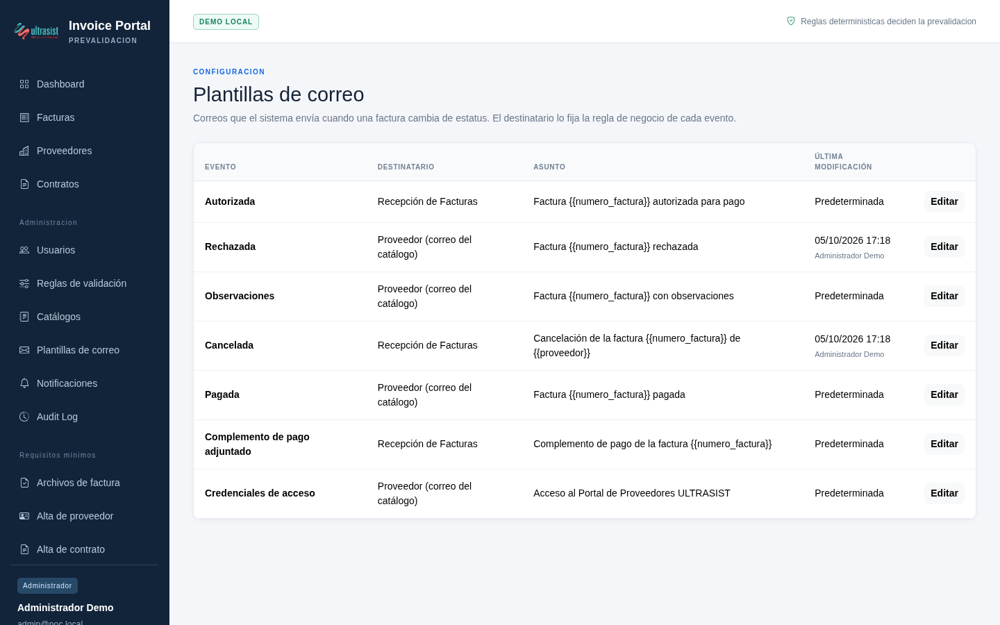
HU-05 · Escenario: Una plantilla configurable por cada cambio de estatus de la factura · Paso: Abrir Administración › Plantillas de correo Resultado esperado: El listado muestra una plantilla para "Autorizada", "Rechazada", "Observaciones" y "Cancelada", con su destinatario, asunto y botón "Editar". Resultado obtenido: Plantillas: Autorizada → Recepción de Facturas; Rechazada → Proveedor (correo del catálogo); Observaciones → Proveedor (correo del catálogo); Cancelada → Recepción de Facturas. · Resultado del paso: PASS Archivo: evidencias/HU-05/01-listado-plantillas.png
Evidencia 2 — Editor de la plantilla "Rechazada": asunto, cuerpo y variables (obligatorias marcadas).
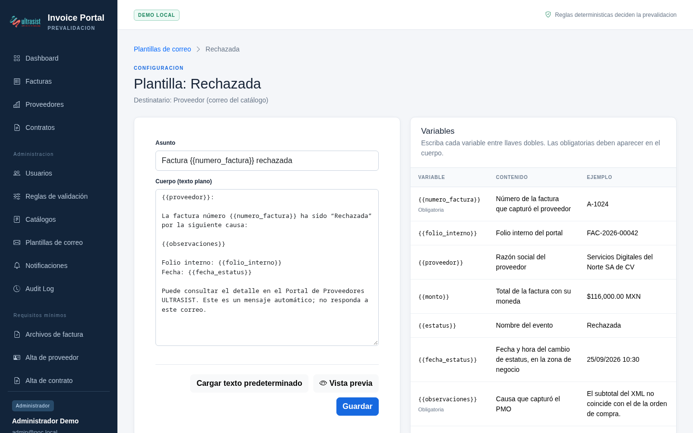
HU-05 · Escenario: Edición y vista previa con datos de ejemplo (sin guardar) · Paso: Editar la plantilla "Rechazada" Resultado esperado: El formulario muestra asunto, cuerpo, el destinatario en solo lectura y la tabla de variables con las obligatorias marcadas. Resultado obtenido: Destinatario: "Destinatario: Proveedor (correo del catálogo)"; asunto vigente "Factura {{numero_factura}} rechazada"; variables obligatorias: {{numero_factura}}, {{observaciones}}. · Resultado del paso: PASS Archivo: evidencias/HU-05/02-editor-rechazada.png
Evidencia 3 — Vista previa del correo "Rechazada" compuesta con datos de ejemplo.
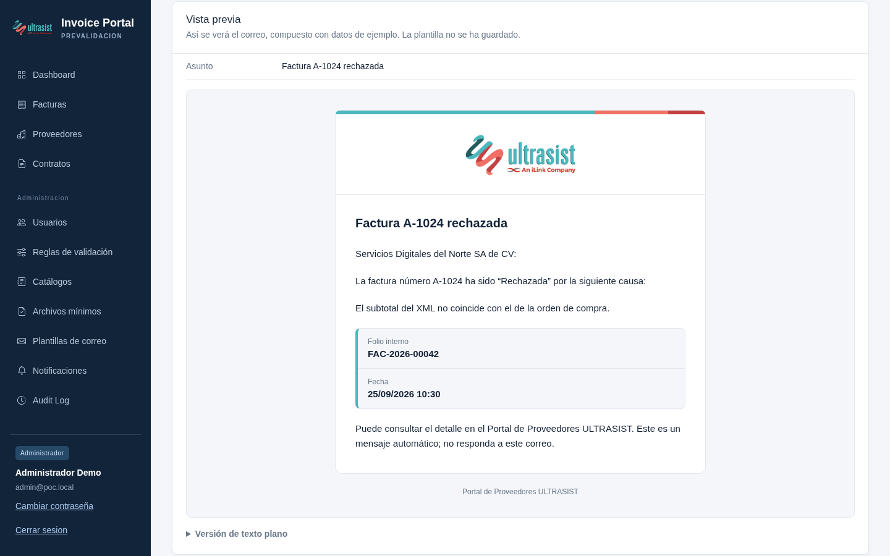
HU-05 · Escenario: Edición y vista previa con datos de ejemplo (sin guardar) · Paso: Pulsar "Vista previa" Resultado esperado: Se muestra el correo compuesto con los datos de ejemplo; la plantilla no se guarda. Resultado obtenido: Vista previa con asunto "Factura A-1024 rechazada" y el aviso "La plantilla no se ha guardado". · Resultado del paso: PASS Archivo: evidencias/HU-05/03-vista-previa.png
Evidencia 4 — Errores de validación de la plantilla mostrados juntos.
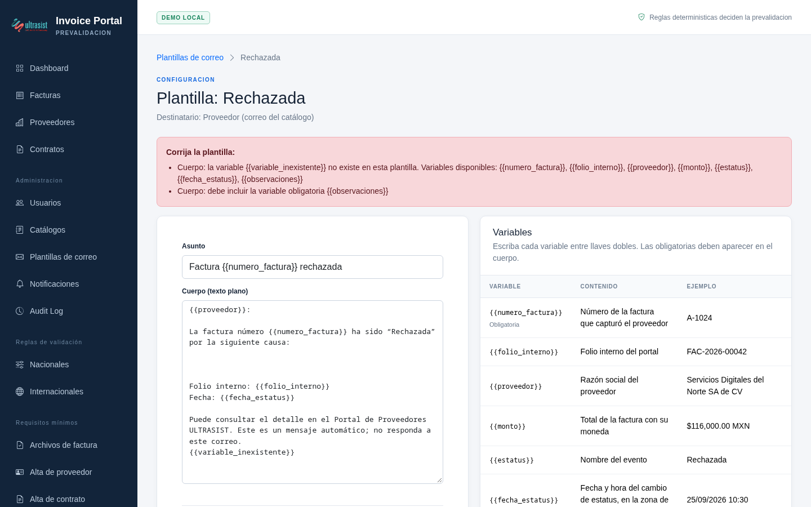
HU-05 · Escenario: Validación de la plantilla: variables obligatorias y desconocidas · Paso: Quitar {{observaciones}} del cuerpo, agregar {{variable_inexistente}} y pulsar "Guardar" Resultado esperado: El guardado se rechaza y se listan juntos los errores (variable desconocida y variable obligatoria ausente). Resultado obtenido: Errores: Cuerpo: la variable {{variable_inexistente}} no existe en esta plantilla. Variables disponibles: {{numero_factura}}, {{folio_interno}}, {{proveedor}}, {{monto}}, {{estatus}}, {{fecha_estatus}}, {{observaciones}} / Cuerpo: debe incluir la variable obligatoria {{observaciones}}. · Resultado del paso: PASS Archivo: evidencias/HU-05/04-errores-validacion.png
Evidencia 5 — Listado tras guardar: asunto modificado y última modificación del Administrador.
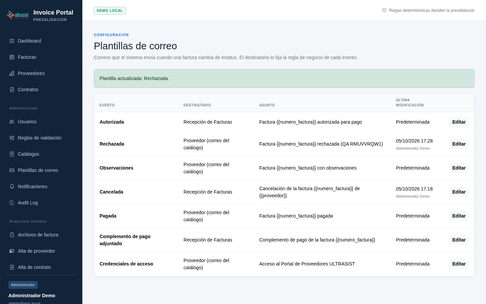
HU-05 · Escenario: Guardar una modificación y restaurar el texto predeterminado · Paso: Cambiar el asunto a "Factura {{numero_factura}} rechazada (QA RMUQ7SGCJ)" y guardar Resultado esperado: Se guarda la plantilla ("Plantilla actualizada: Rechazada.") y el listado muestra el nuevo asunto y quién la modificó. Resultado obtenido: Aviso "Plantilla actualizada: Rechazada."; fila Rechazada: Rechazada Proveedor (correo del catálogo) Factura {{numero_factura}} rechazada (QA RMUQ7SGCJ) 01/10/2026 18:18 Administrador Demo Editar. · Resultado del paso: PASS Archivo: evidencias/HU-05/05-plantilla-guardada.png
Evidencia 6 — Texto predeterminado cargado en el formulario (aún sin guardar).
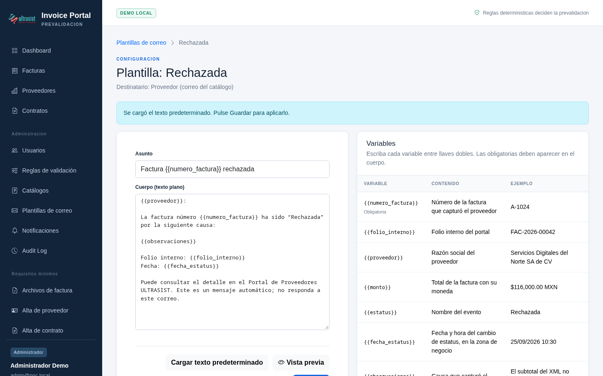
HU-05 · Escenario: Guardar una modificación y restaurar el texto predeterminado · Paso: Editar otra vez, pulsar "Cargar texto predeterminado" y guardar Resultado esperado: El formulario se llena con el texto predeterminado (aviso "Se cargó el texto predeterminado…") y al guardar el listado vuelve a mostrar el asunto original. Resultado obtenido: Aviso "Plantilla actualizada: Rechazada."; asunto restaurado: "Factura {{numero_factura}} rechazada". · Resultado del paso: PASS Archivo: evidencias/HU-05/06-texto-predeterminado-cargado.png
Evidencia 7 — Listado con la plantilla "Rechazada" de nuevo con su asunto predeterminado.
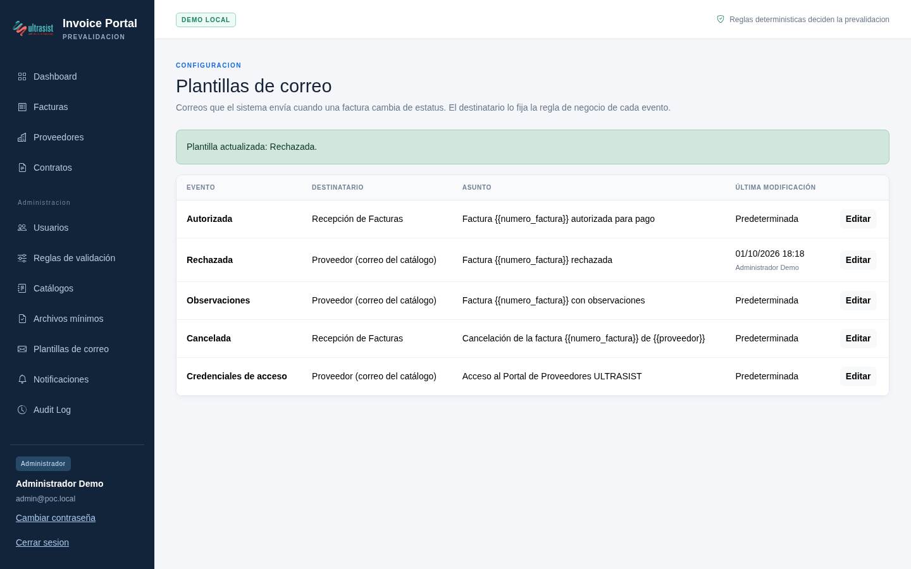
HU-05 · Escenario: Guardar una modificación y restaurar el texto predeterminado · Paso: Editar otra vez, pulsar "Cargar texto predeterminado" y guardar Resultado esperado: El formulario se llena con el texto predeterminado (aviso "Se cargó el texto predeterminado…") y al guardar el listado vuelve a mostrar el asunto original. Resultado obtenido: Aviso "Plantilla actualizada: Rechazada."; asunto restaurado: "Factura {{numero_factura}} rechazada". · Resultado del paso: PASS Archivo: evidencias/HU-05/07-plantilla-restaurada.png
Evidencia 8 — Correo "Cancelada" compuesto con la plantilla recién guardada (asunto con la marca QA).
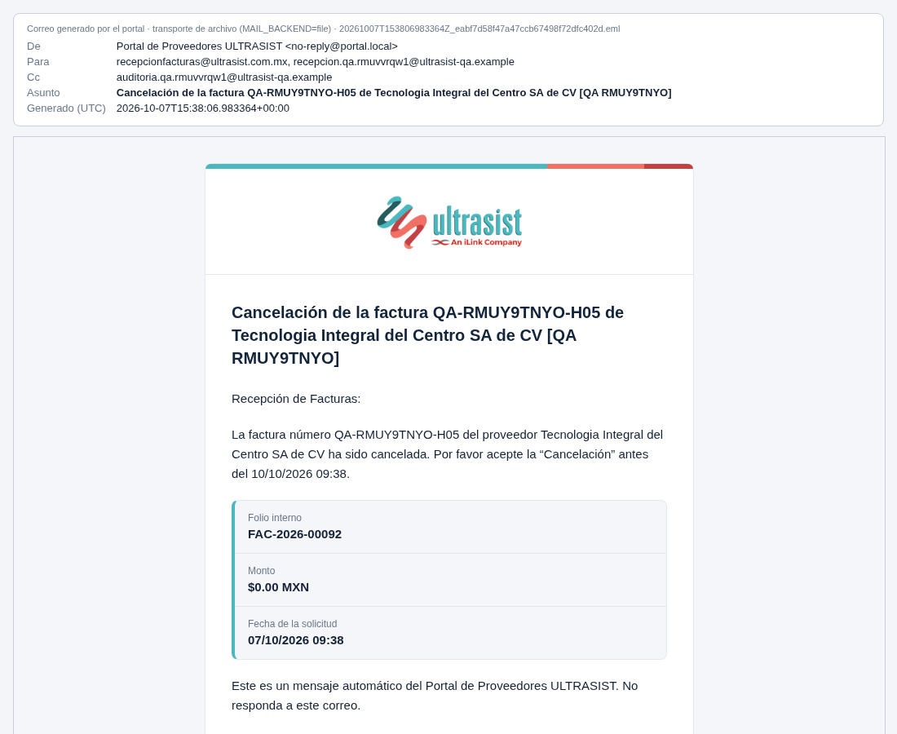
HU-05 · Escenario: La plantilla guardada es la que usa la notificación (evento Cancelada) · Paso: Abrir el correo "Cancelada" generado Resultado esperado: El asunto del correo enviado incluye "[QA RMUQ7SGCJ]": se compuso con la plantilla guardada. Resultado obtenido: Asunto del correo: "Cancelación de la factura QA-RMUQ7SGCJ-H05 de Tecnologia Integral del Centro SA de CV [QA RMUQ7SGCJ]". · Resultado del paso: PASS Archivo: evidencias/HU-05/08-correo-con-plantilla-guardada.png · Correo generado por el portal (.eml del transporte de archivo) mostrado en Chromium
Yo como administrador requiero configurar las Reglas de Validación, definiendo los datos de ULTRASIST (RFC, Razón Social, Dirección y Código Postal) contra los que se comparan las facturas, para que el sistema valide automáticamente la información de las facturas que envían los proveedores.
Criterios de aceptación
El Administrador deberá poder dar de alta, modificar y baja los campos y los valores de referencia de ULTRASIST usados en la validación.
Las reglas configuradas deberán ser las que consume la validación de facturas nacionales (RF-08) y, en la medida de lo posible, la validación de facturas extranjeras (RF-15).
Escenarios probados
#
Escenario / paso
Resultado esperado
Resultado obtenido
Estado
1
Consulta de los datos de ULTRASIST contra los que se comparan las facturas
PASS
1.1
Abrir Administración › Reglas de validación
Se muestran RFC, Razón social, Código postal y Dirección de ULTRASIST con su interruptor "Comparar", y la tabla de reglas XML.
RFC "ULT940623AG0", Razón social "ULTRASIST", C.P. "03930"; comparaciones activas.
PASS
2
Validación de los valores de referencia
PASS
2.1
Capturar un RFC con formato inválido ("XYZ123") y un código postal inválido ("ABC12") y guardar
El guardado se rechaza, se muestran juntos los errores y los valores vigentes no cambian.
Errores: RFC: no es un RFC de persona moral válido / Código postal: debe tener 5 dígitos. Al recargar, RFC y C.P. siguen en ULT940623AG0 y 03930.
PASS
3
Alta y modificación de un valor de referencia (Dirección)
PASS
3.1
Capturar la Dirección de ULTRASIST y guardar
Se guardan las reglas ("Reglas de validación guardadas") y la dirección queda registrada con la nueva versión.
Aviso "Reglas de validación guardadas"; dirección "Av. Insurgentes Sur 1000, Col. Del Valle, Benito Juárez, CDMX (QA RMUQ7SGCJ)". Antes: "Última modificación: 01/10/2026 18:14 · Administrador Demo · versión 16"; ahora: "Última modificación: 01/10/2026 18:18 · Administrador Demo · versión 17".
PASS
4
La validación de facturas internacionales usa los datos configurados (INT-004 / Dirección)
PASS
4.1
El proveedor internacional pulsa "Verificar" en su factura INV-2026-0042
INT-004 compara el texto del Invoice con la Dirección recién configurada (valor esperado = dirección guardada).
INT-004: WARNING — "No se encontró la dirección de ULTRASIST en el Invoice" (esperado "Av. Insurgentes Sur 1000, Col. Del Valle, Benito Juárez, CDMX (QA RMUQ7SGCJ)").
PASS
5
La validación de facturas consume la configuración vigente (XML-010 / Código postal)
PASS
5.1
Cambiar el Código postal de ULTRASIST a 06600 y guardar
Las reglas se guardan con el C.P. 06600.
Aviso "Reglas de validación guardadas"; C.P. configurado 06600.
PASS
5.2
El proveedor pulsa "Verificar" en su factura A-CORRECTA (XML con C.P. del receptor 03930)
XML-010 resulta FAIL con esperado 06600 y detectado 03930: el motor usa el valor recién configurado.
XML-010: FAIL — "Código postal del receptor incorrecto" (esperado 06600, detectado 03930).
PASS
5.3
Restaurar el Código postal 03930 y guardar
Las reglas se guardan de nuevo con el C.P. 03930.
Aviso "Reglas de validación guardadas"; C.P. 03930 restaurado.
PASS
5.4
El proveedor vuelve a pulsar "Verificar"
XML-010 resulta PASS (03930 = 03930).
XML-010: PASS — "Código postal del receptor correcto".
PASS
6
Baja de una comparación: desactivar "Comparar" en el Código postal
PASS
6.1
Desmarcar "Comparar" del Código postal y guardar
Las reglas se guardan y XML-010 aparece "Desactivada".
Aviso "Reglas de validación guardadas"; XML-010 en estado "Desactivada".
PASS
6.2
El proveedor pulsa "Verificar" en A-CORRECTA
XML-010 resulta NOT_APPLICABLE con el mensaje "Comparación desactivada en Reglas de Validación".
XML-010: NOT_APPLICABLE — "Comparación desactivada en Reglas de Validación".
PASS
6.3
Volver a activar "Comparar" en el Código postal
XML-010 vuelve a "Activa".
Aviso "Reglas de validación guardadas"; XML-010 activa de nuevo.
PASS
6.4
El proveedor verifica de nuevo A-CORRECTA
XML-010 vuelve a PASS.
XML-010: PASS.
PASS
Resultado esperado
Consulta de los datos de ULTRASIST contra los que se comparan las facturas: Se muestran RFC, Razón social, Código postal y Dirección de ULTRASIST con su interruptor "Comparar", y la tabla de reglas XML.
Validación de los valores de referencia: El guardado se rechaza, se muestran juntos los errores y los valores vigentes no cambian.
Alta y modificación de un valor de referencia (Dirección): Se guardan las reglas ("Reglas de validación guardadas") y la dirección queda registrada con la nueva versión.
La validación de facturas internacionales usa los datos configurados (INT-004 / Dirección): INT-004 compara el texto del Invoice con la Dirección recién configurada (valor esperado = dirección guardada).
La validación de facturas consume la configuración vigente (XML-010 / Código postal): XML-010 resulta PASS (03930 = 03930).
Baja de una comparación: desactivar "Comparar" en el Código postal: XML-010 vuelve a PASS.
Resultado obtenido
PASSConsulta de los datos de ULTRASIST contra los que se comparan las facturas: RFC "ULT940623AG0", Razón social "ULTRASIST", C.P. "03930"; comparaciones activas.
PASSValidación de los valores de referencia: Errores: RFC: no es un RFC de persona moral válido / Código postal: debe tener 5 dígitos. Al recargar, RFC y C.P. siguen en ULT940623AG0 y 03930.
PASSAlta y modificación de un valor de referencia (Dirección): Aviso "Reglas de validación guardadas"; dirección "Av. Insurgentes Sur 1000, Col. Del Valle, Benito Juárez, CDMX (QA RMUQ7SGCJ)". Antes: "Última modificación: 01/10/2026 18:14 · Administrador Demo · versión 16"; ahora: "Última modificación: 01/10/2026 18:18 · Administrador Demo · versión 17".
PASSLa validación de facturas internacionales usa los datos configurados (INT-004 / Dirección): INT-004: WARNING — "No se encontró la dirección de ULTRASIST en el Invoice" (esperado "Av. Insurgentes Sur 1000, Col. Del Valle, Benito Juárez, CDMX (QA RMUQ7SGCJ)").
PASSLa validación de facturas consume la configuración vigente (XML-010 / Código postal): XML-010: PASS — "Código postal del receptor correcto".
PASSBaja de una comparación: desactivar "Comparar" en el Código postal: XML-010: PASS.
Evidencia visual (8 capturas)
Evidencia 1 — Datos de ULTRASIST (RFC, razón social, código postal, dirección) con sus interruptores "Comparar".
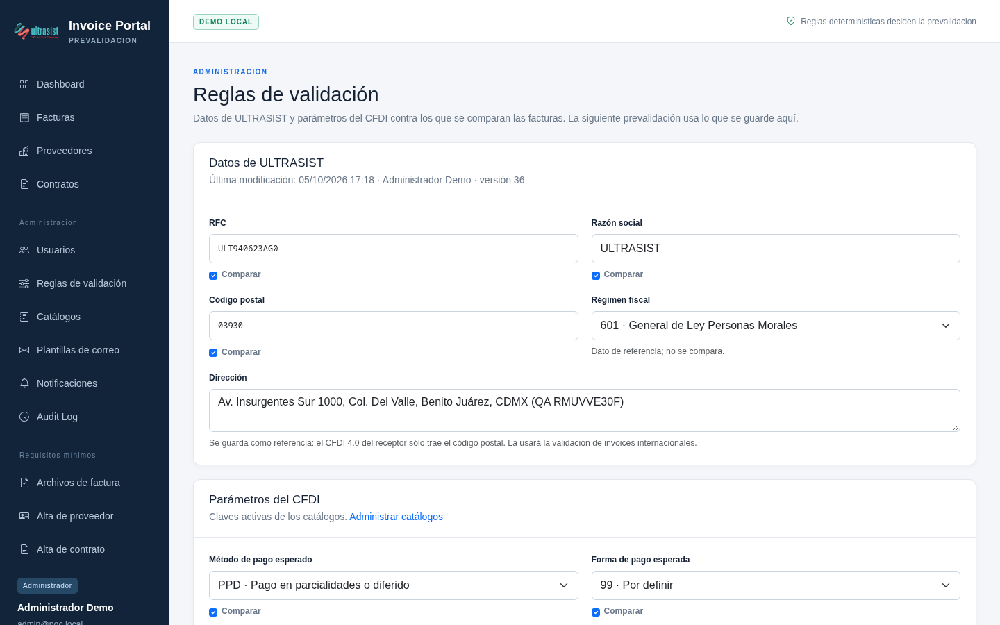
HU-06 · Escenario: Consulta de los datos de ULTRASIST contra los que se comparan las facturas · Paso: Abrir Administración › Reglas de validación Resultado esperado: Se muestran RFC, Razón social, Código postal y Dirección de ULTRASIST con su interruptor "Comparar", y la tabla de reglas XML. Resultado obtenido: RFC "ULT940623AG0", Razón social "ULTRASIST", C.P. "03930"; comparaciones activas. · Resultado del paso: PASS Archivo: evidencias/HU-06/01-reglas-validacion.png
Evidencia 2 — Errores de validación de las reglas (RFC y código postal).
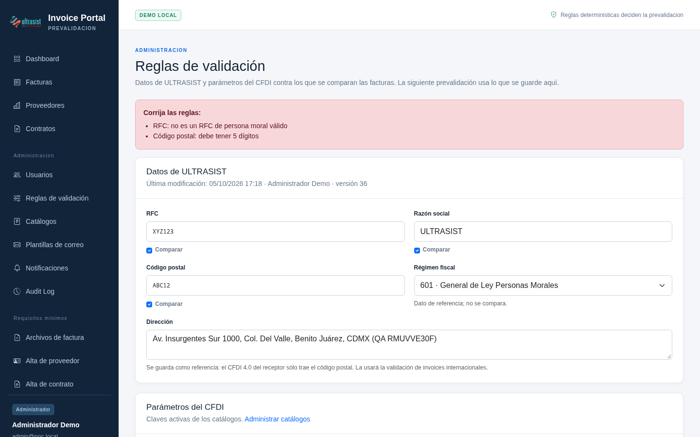
HU-06 · Escenario: Validación de los valores de referencia · Paso: Capturar un RFC con formato inválido ("XYZ123") y un código postal inválido ("ABC12") y guardar Resultado esperado: El guardado se rechaza, se muestran juntos los errores y los valores vigentes no cambian. Resultado obtenido: Errores: RFC: no es un RFC de persona moral válido / Código postal: debe tener 5 dígitos. Al recargar, RFC y C.P. siguen en ULT940623AG0 y 03930. · Resultado del paso: PASS Archivo: evidencias/HU-06/02-errores-reglas.png
Evidencia 3 — Reglas guardadas con la Dirección de ULTRASIST capturada.
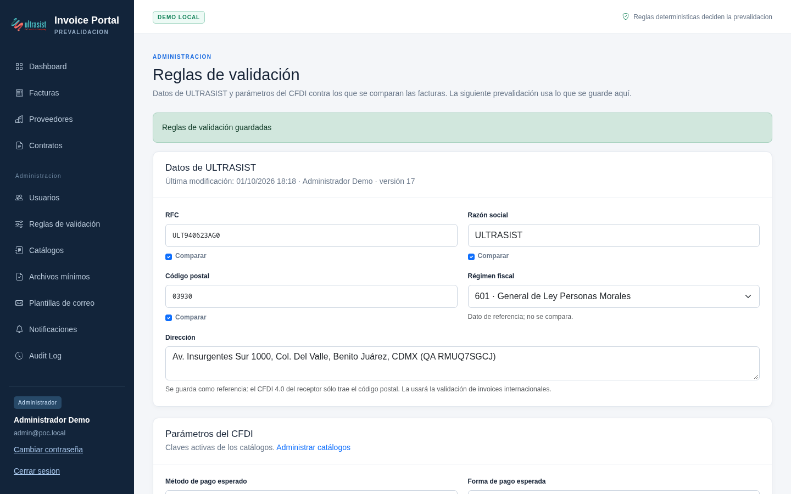
HU-06 · Escenario: Alta y modificación de un valor de referencia (Dirección) · Paso: Capturar la Dirección de ULTRASIST y guardar Resultado esperado: Se guardan las reglas ("Reglas de validación guardadas") y la dirección queda registrada con la nueva versión. Resultado obtenido: Aviso "Reglas de validación guardadas"; dirección "Av. Insurgentes Sur 1000, Col. Del Valle, Benito Juárez, CDMX (QA RMUQ7SGCJ)". Antes: "Última modificación: 01/10/2026 18:14 · Administrador Demo · versión 16"; ahora: "Última modificación: 01/10/2026 18:18 · Administrador Demo · versión 17". · Resultado del paso: PASS Archivo: evidencias/HU-06/03-direccion-guardada.png
Evidencia 4 — INT-004 en el Invoice internacional con la Dirección configurada como valor esperado.
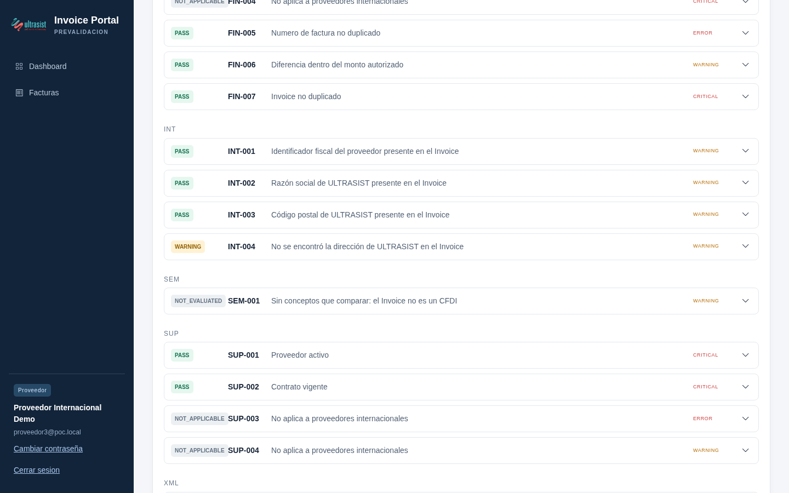
HU-06 · Escenario: La validación de facturas internacionales usa los datos configurados (INT-004 / Dirección) · Paso: El proveedor internacional pulsa "Verificar" en su factura INV-2026-0042 Resultado esperado: INT-004 compara el texto del Invoice con la Dirección recién configurada (valor esperado = dirección guardada). Resultado obtenido: INT-004: WARNING — "No se encontró la dirección de ULTRASIST en el Invoice" (esperado "Av. Insurgentes Sur 1000, Col. Del Valle, Benito Juárez, CDMX (QA RMUQ7SGCJ)"). · Resultado del paso: PASS Archivo: evidencias/HU-06/04-int-004-direccion.png
Evidencia 5 — Tras cambiar el C.P. a 06600, "Verificar" marca XML-010 en FAIL (esperado 06600, detectado 03930).
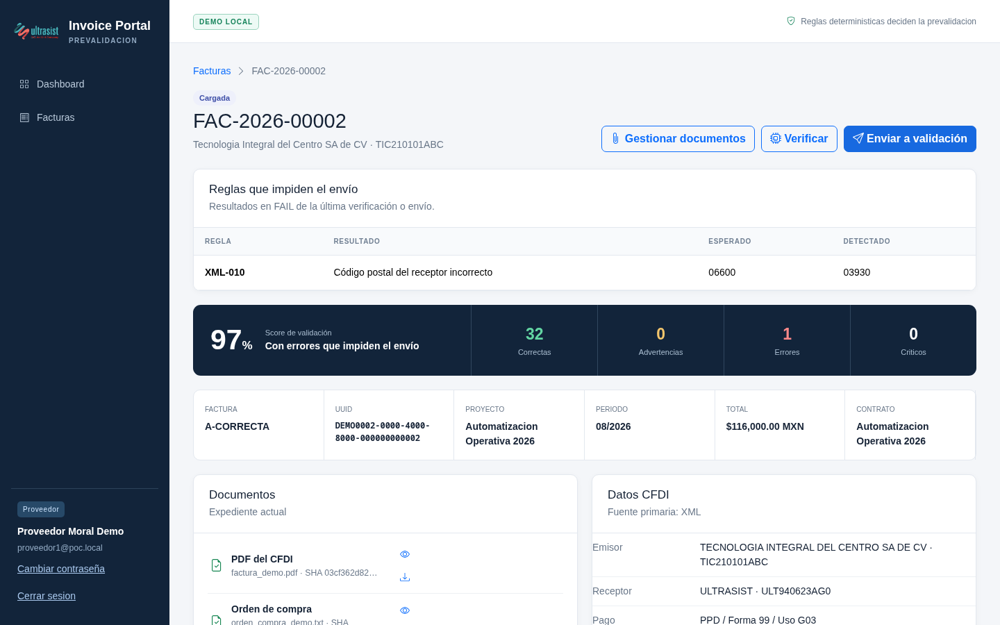
HU-06 · Escenario: La validación de facturas consume la configuración vigente (XML-010 / Código postal) · Paso: El proveedor pulsa "Verificar" en su factura A-CORRECTA (XML con C.P. del receptor 03930) Resultado esperado: XML-010 resulta FAIL con esperado 06600 y detectado 03930: el motor usa el valor recién configurado. Resultado obtenido: XML-010: FAIL — "Código postal del receptor incorrecto" (esperado 06600, detectado 03930). · Resultado del paso: PASS Archivo: evidencias/HU-06/05-xml-010-fail.png
Evidencia 6 — Con el C.P. restaurado, XML-010 vuelve a PASS.
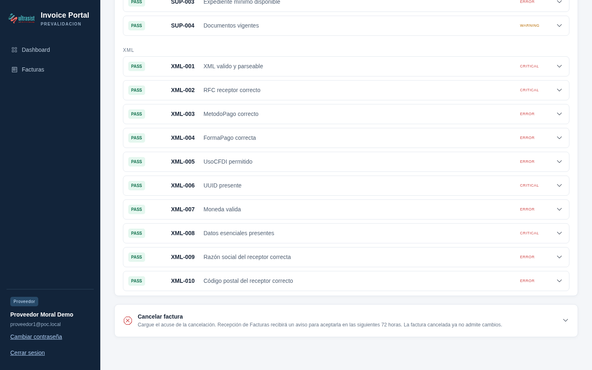
HU-06 · Escenario: La validación de facturas consume la configuración vigente (XML-010 / Código postal) · Paso: El proveedor vuelve a pulsar "Verificar" Resultado esperado: XML-010 resulta PASS (03930 = 03930). Resultado obtenido: XML-010: PASS — "Código postal del receptor correcto". · Resultado del paso: PASS Archivo: evidencias/HU-06/06-xml-010-pass.png
Evidencia 7 — Tabla de reglas XML con XML-010 "Desactivada".
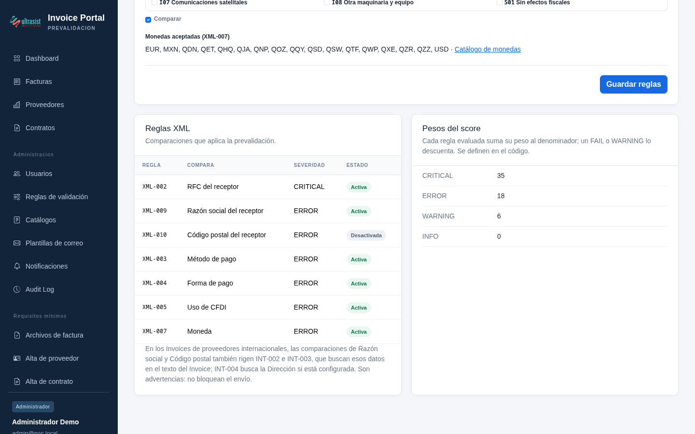
HU-06 · Escenario: Baja de una comparación: desactivar "Comparar" en el Código postal · Paso: Desmarcar "Comparar" del Código postal y guardar Resultado esperado: Las reglas se guardan y XML-010 aparece "Desactivada". Resultado obtenido: Aviso "Reglas de validación guardadas"; XML-010 en estado "Desactivada". · Resultado del paso: PASS Archivo: evidencias/HU-06/07-comparacion-desactivada.png
Evidencia 8 — XML-010 "NOT_APPLICABLE": comparación desactivada en las Reglas de Validación.
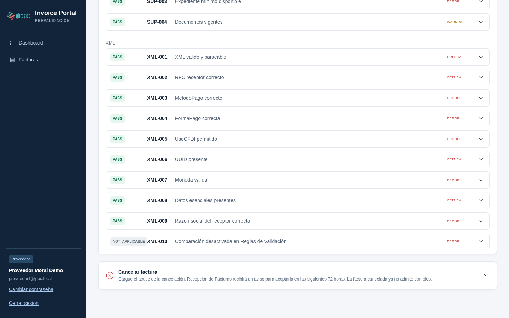
HU-06 · Escenario: Baja de una comparación: desactivar "Comparar" en el Código postal · Paso: El proveedor pulsa "Verificar" en A-CORRECTA Resultado esperado: XML-010 resulta NOT_APPLICABLE con el mensaje "Comparación desactivada en Reglas de Validación". Resultado obtenido: XML-010: NOT_APPLICABLE — "Comparación desactivada en Reglas de Validación". · Resultado del paso: PASS Archivo: evidencias/HU-06/08-xml-010-no-aplica.png
Yo como administrador requiero administrar y cargar los catálogos que utiliza el portal para mantener actualizada la información de referencia de la operación.
Criterios de aceptación
El sistema deberá permitir crear, consultar, actualizar y cargar los catálogos definidos para la operación.
El catálogo de proveedores se gestiona en RF-01; este requisito cubre los demás catálogos.
Escenarios probados
#
Escenario / paso
Resultado esperado
Resultado obtenido
Estado
1
Consulta de los catálogos de referencia
PASS
1.1
Abrir Administración › Catálogos
Se listan los catálogos administrables (monedas, usos de CFDI, formas y métodos de pago, regímenes fiscales y actividades económicas) con sus claves activas y totales.
Catálogos: Monedas (CURRENCY): 9 activas de 9; Usos (de (CFDI (CFDI_USE): 24 activas de 24; Formas (de (pago (PAYMENT_FORM): 22 activas de 22; Métodos (de (pago (PAYMENT_METHOD): 2 activas de 2; Regímenes (fiscales (TAX_REGIME): 19 activas de 19; Actividades (económicas (INDUSTRY): 20 activas de 20.
PASS
1.2
Abrir el catálogo de Monedas
Se muestran las claves vigentes (MXN, USD, EUR) con su estado.
Catálogo "Monedas": 9 activas de 9.
PASS
2
Crear una clave nueva
PASS
2.1
Agregar la clave "QWP" con la descripción "Moneda de prueba QA RMUQ7SGCJ"
Se agrega la clave ("Clave agregada") y aparece activa en el listado.
La carga se aplica ("Carga aplicada: …") y la clave nueva aparece activa en el catálogo.
Aviso "Carga aplicada: 1 agregada, 0 actualizadas, 10 sin cambios."; QTF activa con la descripción "Moneda por Excel QA RMUQ7SGCJ".
PASS
Resultado esperado
Consulta de los catálogos de referencia: Se muestran las claves vigentes (MXN, USD, EUR) con su estado.
Crear una clave nueva: Se rechaza porque la clave ya existe.
Actualizar la descripción y desactivar / reactivar la clave: La clave vuelve a "Activa".
Clave en uso por las Reglas de Validación: no se puede desactivar: La clave PPD (método esperado en las Reglas de Validación) aparece "En uso" y su botón "Desactivar" está deshabilitado.
Carga del catálogo desde Excel: La carga se aplica ("Carga aplicada: …") y la clave nueva aparece activa en el catálogo.
Resultado obtenido
PASSConsulta de los catálogos de referencia: Catálogo "Monedas": 9 activas de 9.
PASSCrear una clave nueva: Rechazado: "La clave QWP ya existe en este catálogo".
PASSActualizar la descripción y desactivar / reactivar la clave: Estado "Activa".
PASSClave en uso por las Reglas de Validación: no se puede desactivar: PPD marcada "En uso" con "Desactivar" deshabilitado.
PASSCarga del catálogo desde Excel: Aviso "Carga aplicada: 1 agregada, 0 actualizadas, 10 sin cambios."; QTF activa con la descripción "Moneda por Excel QA RMUQ7SGCJ".
Evidencia visual (9 capturas)
Evidencia 1 — Índice de catálogos con claves activas y totales.
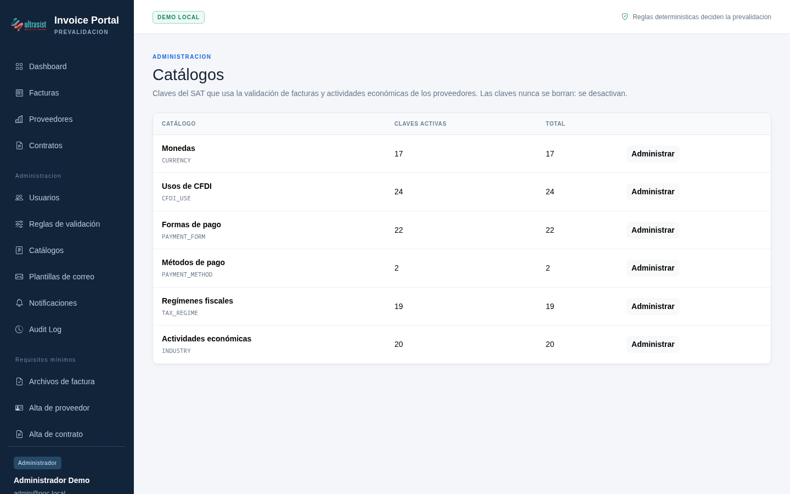
HU-07 · Escenario: Consulta de los catálogos de referencia · Paso: Abrir Administración › Catálogos Resultado esperado: Se listan los catálogos administrables (monedas, usos de CFDI, formas y métodos de pago, regímenes fiscales y actividades económicas) con sus claves activas y totales. Resultado obtenido: Catálogos: Monedas (CURRENCY): 9 activas de 9; Usos (de (CFDI (CFDI_USE): 24 activas de 24; Formas (de (pago (PAYMENT_FORM): 22 activas de 22; Métodos (de (pago (PAYMENT_METHOD): 2 activas de 2; Regímenes (fiscales (TAX_REGIME): 19 activas de 19; Actividades (económicas (INDUSTRY): 20 activas de 20. · Resultado del paso: PASS Archivo: evidencias/HU-07/01-indice-catalogos.png
Evidencia 2 — Catálogo de Monedas con sus claves y estados.
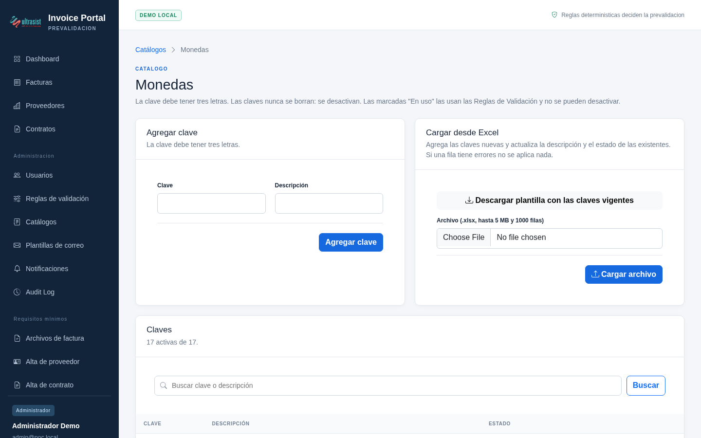
HU-07 · Escenario: Consulta de los catálogos de referencia · Paso: Abrir el catálogo de Monedas Resultado esperado: Se muestran las claves vigentes (MXN, USD, EUR) con su estado. Resultado obtenido: Catálogo "Monedas": 9 activas de 9. · Resultado del paso: PASS Archivo: evidencias/HU-07/02-catalogo-monedas.png
Evidencia 3 — Clave QWP agregada y activa.
HU-07 · Escenario: Crear una clave nueva · Paso: Agregar la clave "QWP" con la descripción "Moneda de prueba QA RMUQ7SGCJ" Resultado esperado: Se agrega la clave ("Clave agregada") y aparece activa en el listado. Resultado obtenido: Aviso "Clave agregada"; fila: QWP Moneda de prueba QA RMUQ7SGCJ Activa Desactivar. · Resultado del paso: PASS Archivo: evidencias/HU-07/03-clave-agregada.png
Evidencia 4 — Intento de agregar de nuevo la clave QWP: rechazado. (parte 1 de 2)
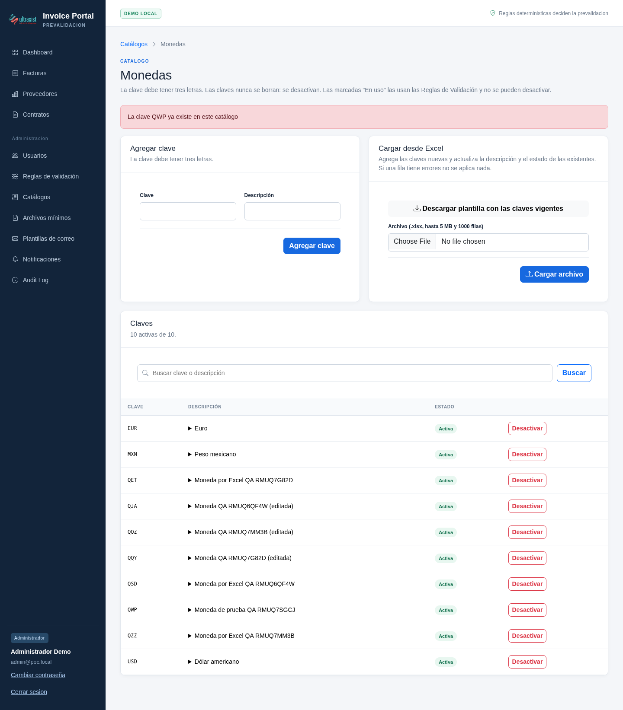
Evidencia 4 — Intento de agregar de nuevo la clave QWP: rechazado. (parte 2 de 2)
HU-07 · Escenario: Crear una clave nueva · Paso: Intentar agregar otra vez la clave "QWP" Resultado esperado: Se rechaza porque la clave ya existe. Resultado obtenido: Rechazado: "La clave QWP ya existe en este catálogo". · Resultado del paso: PASS Archivo: evidencias/HU-07/04-clave-duplicada.png
Evidencia 5 — Descripción de QWP actualizada.
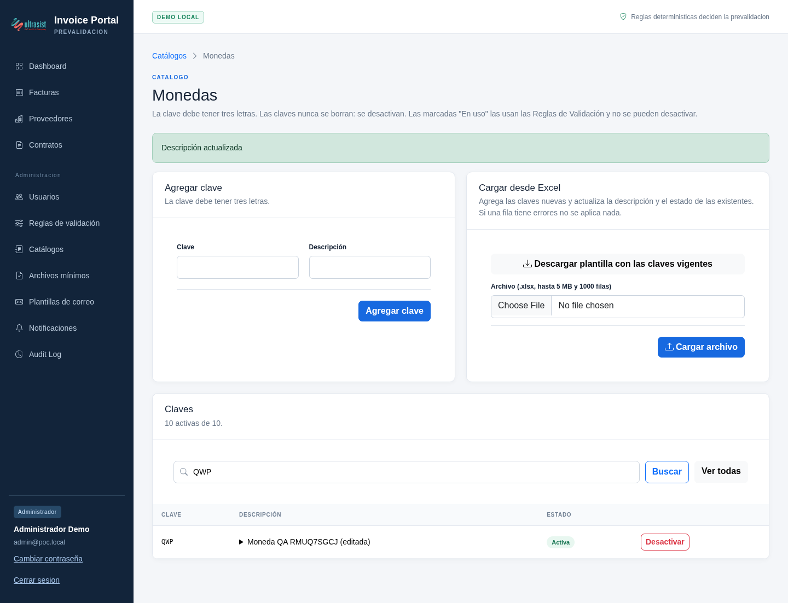
HU-07 · Escenario: Actualizar la descripción y desactivar / reactivar la clave · Paso: Editar la descripción de "QWP" Resultado esperado: Se guarda ("Descripción actualizada"). Resultado obtenido: Aviso "Descripción actualizada"; nueva descripción "Moneda QA RMUQ7SGCJ (editada)". · Resultado del paso: PASS Archivo: evidencias/HU-07/05-descripcion-actualizada.png
Evidencia 6 — Clave QWP desactivada: estado "Inactiva".
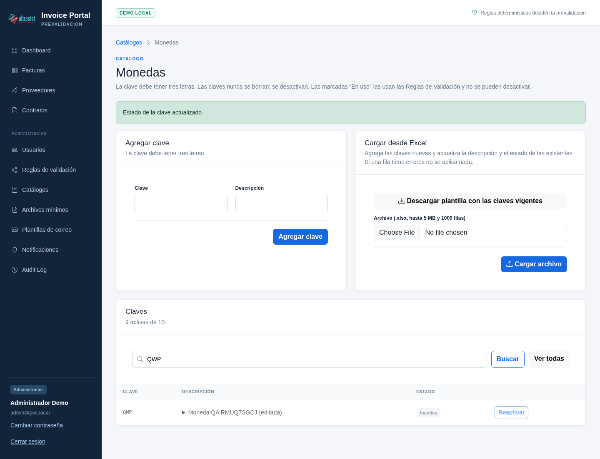
HU-07 · Escenario: Actualizar la descripción y desactivar / reactivar la clave · Paso: Desactivar "QWP" Resultado esperado: La clave queda "Inactiva" (nunca se borra). Resultado obtenido: Aviso "Estado de la clave actualizado"; estado "Inactiva". · Resultado del paso: PASS Archivo: evidencias/HU-07/06-clave-inactiva.png
Evidencia 7 — PPD "En uso": su botón Desactivar está deshabilitado.
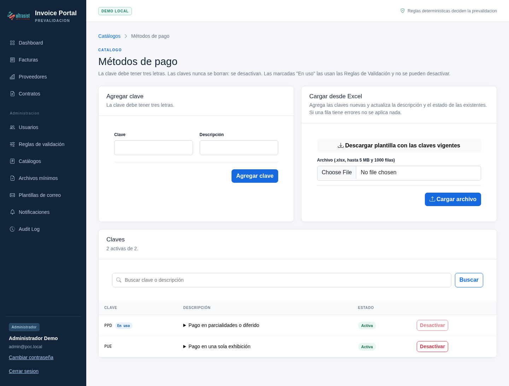
HU-07 · Escenario: Clave en uso por las Reglas de Validación: no se puede desactivar · Paso: Abrir el catálogo de Métodos de pago Resultado esperado: La clave PPD (método esperado en las Reglas de Validación) aparece "En uso" y su botón "Desactivar" está deshabilitado. Resultado obtenido: PPD marcada "En uso" con "Desactivar" deshabilitado. · Resultado del paso: PASS Archivo: evidencias/HU-07/07-clave-en-uso.png
Evidencia 8 — Resultado de la carga desde Excel con la clave QTF.
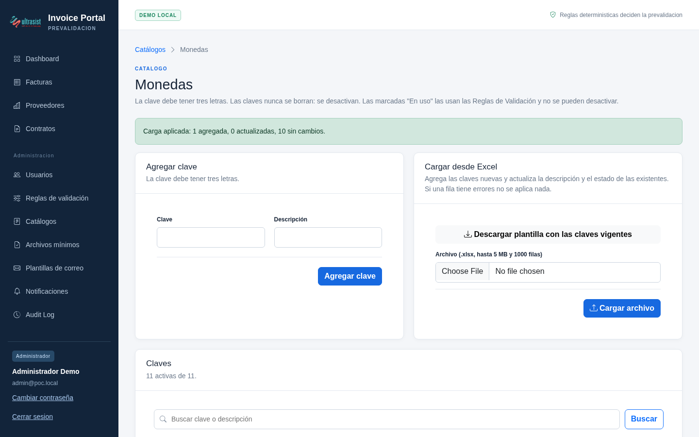
HU-07 · Escenario: Carga del catálogo desde Excel · Paso: Agregar en el archivo la clave "QTF" y cargarlo Resultado esperado: La carga se aplica ("Carga aplicada: …") y la clave nueva aparece activa en el catálogo. Resultado obtenido: Aviso "Carga aplicada: 1 agregada, 0 actualizadas, 10 sin cambios."; QTF activa con la descripción "Moneda por Excel QA RMUQ7SGCJ". · Resultado del paso: PASS Archivo: evidencias/HU-07/08-carga-excel-aplicada.png
Evidencia 9 — Clave QTF registrada desde el archivo de Excel.
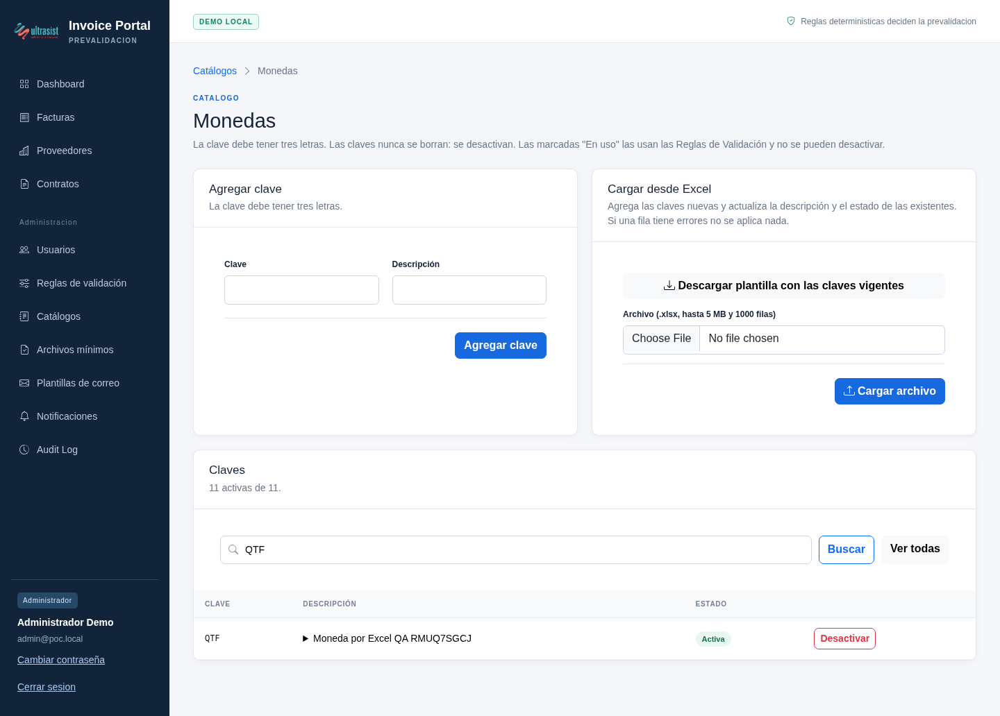
HU-07 · Escenario: Carga del catálogo desde Excel · Paso: Agregar en el archivo la clave "QTF" y cargarlo Resultado esperado: La carga se aplica ("Carga aplicada: …") y la clave nueva aparece activa en el catálogo. Resultado obtenido: Aviso "Carga aplicada: 1 agregada, 0 actualizadas, 10 sin cambios."; QTF activa con la descripción "Moneda por Excel QA RMUQ7SGCJ". · Resultado del paso: PASS Archivo: evidencias/HU-07/09-clave-desde-excel.png
Yo como administrador requiero configurar los correos y destinatarios de las notificaciones, como el buzón de “Recepción de Facturas”, para que cada aviso del sistema llegue a la persona o área correcta.
Criterios de aceptación
El Administrador deberá poder definir el/los destinatario(s) de cada notificación desde la sección de parámetros.
El destinatario “Recepción de Facturas” usado en RF-09 y RF-10 deberá tomarse de esta configuración.
Escenarios probados
#
Escenario / paso
Resultado esperado
Resultado obtenido
Estado
1
Consulta de destinatarios, copias por evento y transporte
PASS
1.1
Abrir Administración › Notificaciones
Se muestra el buzón "Recepción de Facturas" (recepcionfacturas@ultrasist.com.mx), las copias por evento (Autorizada, Rechazada, Observaciones, Cancelada) y el transporte vigente.
Buzón: "recepcionfacturas@ultrasist.com.mx
recepcion.qa.rmuq7mm3b@ultrasist-qa.example"; eventos con copias: Autorizada, Rechazada, Observaciones, Cancelada; transporte: Transporte Archivo (no se envían correos) Directorio de salida /home/Vadak/Desktop/PORTAL-FACTURACION_ULTRASIST/portal-facturas/PoC_Ultra_ProyectoInternoFacturas-JEVG-Compress-V1/PoC_Ultra_ProyectoInternoFacturas-JEVG-Compress/evidencias/_correos Remitente Portal de Proveedores ULTRASIST <no-reply@portal.local>.
PASS
2
Validación de las direcciones capturadas
PASS
2.1
Agregar "correo-sin-arroba" al buzón y guardar
El guardado se rechaza con un error de dirección inválida y la configuración no cambia.
Errores: Recepción de Facturas: «correo-sin-arroba» no es un correo válido. Al recargar, el buzón conserva su valor anterior: "recepcionfacturas@ultrasist.com.mx, recepcion.qa.rmuq7mm3b@ultrasist-qa.example".
PASS
3
Definir los destinatarios del buzón "Recepción de Facturas" y la copia del evento Cancelada
PASS
3.1
Agregar recepcion.qa.rmuq7sgcj@ultrasist-qa.example al buzón y auditoria.qa.rmuq7sgcj@ultrasist-qa.example como copia de "Cancelada"; guardar
Se guarda la configuración ("Configuración guardada") con ambas listas.
Aviso "Configuración guardada"; buzón: recepcionfacturas@ultrasist.com.mx, recepcion.qa.rmuq7sgcj@ultrasist-qa.example; Cc Cancelada: auditoria.qa.rmuq7sgcj@ultrasist-qa.example.
PASS
4
Correo de prueba con la configuración vigente
PASS
4.1
Enviar un correo de prueba a prueba.qa.rmuq7sgcj@ultrasist-qa.example
Se informa "Correo de prueba enviado a …" y la bitácora registra el envío.
Aviso "Correo de prueba enviado a prueba.qa.rmuq7sgcj@ultrasist-qa.example"; bitácora: 01/10/2026 18:18 Prueba prueba.qa.rmuq7sgcj@ultrasist-qa.example Enviado.
PASS
5
El aviso a "Recepción de Facturas" toma los destinatarios de esta configuración
PASS
5.1
El proveedor registra la factura QA-RMUQ7SGCJ-H08 y la cancela cargando el acuse (dispara el aviso "Cancelada" a Recepción de Facturas)
La factura queda "Cancelada" y se notifica a Recepción de Facturas.
"Factura cancelada. Se notificó a Recepción de Facturas."; estatus "Cancelada".
PASS
5.2
Revisar el correo "Cancelada" generado
El correo va a recepcionfacturas@ultrasist.com.mx y recepcion.qa.rmuq7sgcj@ultrasist-qa.example (Para) con copia a auditoria.qa.rmuq7sgcj@ultrasist-qa.example (Cc), tal como se configuró.
Para: recepcion.qa.rmuq7sgcj@ultrasist-qa.example, recepcionfacturas@ultrasist.com.mx; Cc: auditoria.qa.rmuq7sgcj@ultrasist-qa.example; asunto "Cancelación de la factura QA-RMUQ7SGCJ-H08 de Tecnologia Integral del Centro SA de CV".
PASS
Resultado esperado
Consulta de destinatarios, copias por evento y transporte: Se muestra el buzón "Recepción de Facturas" (recepcionfacturas@ultrasist.com.mx), las copias por evento (Autorizada, Rechazada, Observaciones, Cancelada) y el transporte vigente.
Validación de las direcciones capturadas: El guardado se rechaza con un error de dirección inválida y la configuración no cambia.
Definir los destinatarios del buzón "Recepción de Facturas" y la copia del evento Cancelada: Se guarda la configuración ("Configuración guardada") con ambas listas.
Correo de prueba con la configuración vigente: Se informa "Correo de prueba enviado a …" y la bitácora registra el envío.
El aviso a "Recepción de Facturas" toma los destinatarios de esta configuración: El correo va a recepcionfacturas@ultrasist.com.mx y recepcion.qa.rmuq7sgcj@ultrasist-qa.example (Para) con copia a auditoria.qa.rmuq7sgcj@ultrasist-qa.example (Cc), tal como se configuró.
Resultado obtenido
PASSConsulta de destinatarios, copias por evento y transporte: Buzón: "recepcionfacturas@ultrasist.com.mx
recepcion.qa.rmuq7mm3b@ultrasist-qa.example"; eventos con copias: Autorizada, Rechazada, Observaciones, Cancelada; transporte: Transporte Archivo (no se envían correos) Directorio de salida /home/Vadak/Desktop/PORTAL-FACTURACION_ULTRASIST/portal-facturas/PoC_Ultra_ProyectoInternoFacturas-JEVG-Compress-V1/PoC_Ultra_ProyectoInternoFacturas-JEVG-Compress/evidencias/_correos Remitente Portal de Proveedores ULTRASIST <no-reply@portal.local>.
PASSValidación de las direcciones capturadas: Errores: Recepción de Facturas: «correo-sin-arroba» no es un correo válido. Al recargar, el buzón conserva su valor anterior: "recepcionfacturas@ultrasist.com.mx, recepcion.qa.rmuq7mm3b@ultrasist-qa.example".
PASSDefinir los destinatarios del buzón "Recepción de Facturas" y la copia del evento Cancelada: Aviso "Configuración guardada"; buzón: recepcionfacturas@ultrasist.com.mx, recepcion.qa.rmuq7sgcj@ultrasist-qa.example; Cc Cancelada: auditoria.qa.rmuq7sgcj@ultrasist-qa.example.
PASSCorreo de prueba con la configuración vigente: Aviso "Correo de prueba enviado a prueba.qa.rmuq7sgcj@ultrasist-qa.example"; bitácora: 01/10/2026 18:18 Prueba prueba.qa.rmuq7sgcj@ultrasist-qa.example Enviado.
PASSEl aviso a "Recepción de Facturas" toma los destinatarios de esta configuración: Para: recepcion.qa.rmuq7sgcj@ultrasist-qa.example, recepcionfacturas@ultrasist.com.mx; Cc: auditoria.qa.rmuq7sgcj@ultrasist-qa.example; asunto "Cancelación de la factura QA-RMUQ7SGCJ-H08 de Tecnologia Integral del Centro SA de CV".
Evidencia visual (8 capturas)
Evidencia 1 — Destinatarios: buzón "Recepción de Facturas" y copias por evento.
HU-08 · Escenario: Consulta de destinatarios, copias por evento y transporte · Paso: Abrir Administración › Notificaciones Resultado esperado: Se muestra el buzón "Recepción de Facturas" (recepcionfacturas@ultrasist.com.mx), las copias por evento (Autorizada, Rechazada, Observaciones, Cancelada) y el transporte vigente. Resultado obtenido: Buzón: "recepcionfacturas@ultrasist.com.mx
recepcion.qa.rmuq7mm3b@ultrasist-qa.example"; eventos con copias: Autorizada, Rechazada, Observaciones, Cancelada; transporte: Transporte Archivo (no se envían correos) Directorio de salida /home/Vadak/Desktop/PORTAL-FACTURACION_ULTRASIST/portal-facturas/PoC_Ultra_ProyectoInternoFacturas-JEVG-Compress-V1/PoC_Ultra_ProyectoInternoFacturas-JEVG-Compress/evidencias/_correos Remitente Portal de Proveedores ULTRASIST <no-reply@portal.local>. · Resultado del paso: PASS Archivo: evidencias/HU-08/01-destinatarios.png
Evidencia 2 — Correo de prueba y transporte vigente (archivo .eml en este ambiente de pruebas).
HU-08 · Escenario: Consulta de destinatarios, copias por evento y transporte · Paso: Abrir Administración › Notificaciones Resultado esperado: Se muestra el buzón "Recepción de Facturas" (recepcionfacturas@ultrasist.com.mx), las copias por evento (Autorizada, Rechazada, Observaciones, Cancelada) y el transporte vigente. Resultado obtenido: Buzón: "recepcionfacturas@ultrasist.com.mx
recepcion.qa.rmuq7mm3b@ultrasist-qa.example"; eventos con copias: Autorizada, Rechazada, Observaciones, Cancelada; transporte: Transporte Archivo (no se envían correos) Directorio de salida /home/Vadak/Desktop/PORTAL-FACTURACION_ULTRASIST/portal-facturas/PoC_Ultra_ProyectoInternoFacturas-JEVG-Compress-V1/PoC_Ultra_ProyectoInternoFacturas-JEVG-Compress/evidencias/_correos Remitente Portal de Proveedores ULTRASIST <no-reply@portal.local>. · Resultado del paso: PASS Archivo: evidencias/HU-08/02-transporte-y-prueba.png
Evidencia 3 — Error al guardar una dirección inválida en el buzón.
HU-08 · Escenario: Validación de las direcciones capturadas · Paso: Agregar "correo-sin-arroba" al buzón y guardar Resultado esperado: El guardado se rechaza con un error de dirección inválida y la configuración no cambia. Resultado obtenido: Errores: Recepción de Facturas: «correo-sin-arroba» no es un correo válido. Al recargar, el buzón conserva su valor anterior: "recepcionfacturas@ultrasist.com.mx, recepcion.qa.rmuq7mm3b@ultrasist-qa.example". · Resultado del paso: PASS Archivo: evidencias/HU-08/03-direccion-invalida.png
Evidencia 4 — Configuración guardada: buzón con dos direcciones y copia en "Cancelada".
HU-08 · Escenario: Definir los destinatarios del buzón "Recepción de Facturas" y la copia del evento Cancelada · Paso: Agregar recepcion.qa.rmuq7sgcj@ultrasist-qa.example al buzón y auditoria.qa.rmuq7sgcj@ultrasist-qa.example como copia de "Cancelada"; guardar Resultado esperado: Se guarda la configuración ("Configuración guardada") con ambas listas. Resultado obtenido: Aviso "Configuración guardada"; buzón: recepcionfacturas@ultrasist.com.mx, recepcion.qa.rmuq7sgcj@ultrasist-qa.example; Cc Cancelada: auditoria.qa.rmuq7sgcj@ultrasist-qa.example. · Resultado del paso: PASS Archivo: evidencias/HU-08/04-destinatarios-guardados.png
Evidencia 5 — Aviso del correo de prueba enviado.
HU-08 · Escenario: Correo de prueba con la configuración vigente · Paso: Enviar un correo de prueba a prueba.qa.rmuq7sgcj@ultrasist-qa.example Resultado esperado: Se informa "Correo de prueba enviado a …" y la bitácora registra el envío. Resultado obtenido: Aviso "Correo de prueba enviado a prueba.qa.rmuq7sgcj@ultrasist-qa.example"; bitácora: 01/10/2026 18:18 Prueba prueba.qa.rmuq7sgcj@ultrasist-qa.example Enviado. · Resultado del paso: PASS Archivo: evidencias/HU-08/05-correo-prueba.png
Evidencia 6 — Bitácora de envíos con el correo de prueba.
HU-08 · Escenario: Correo de prueba con la configuración vigente · Paso: Enviar un correo de prueba a prueba.qa.rmuq7sgcj@ultrasist-qa.example Resultado esperado: Se informa "Correo de prueba enviado a …" y la bitácora registra el envío. Resultado obtenido: Aviso "Correo de prueba enviado a prueba.qa.rmuq7sgcj@ultrasist-qa.example"; bitácora: 01/10/2026 18:18 Prueba prueba.qa.rmuq7sgcj@ultrasist-qa.example Enviado. · Resultado del paso: PASS Archivo: evidencias/HU-08/06-bitacora-prueba.png
Evidencia 7 — Factura QA-RMUQ7SGCJ-H08 cancelada: "Se notificó a Recepción de Facturas".
HU-08 · Escenario: El aviso a "Recepción de Facturas" toma los destinatarios de esta configuración · Paso: El proveedor registra la factura QA-RMUQ7SGCJ-H08 y la cancela cargando el acuse (dispara el aviso "Cancelada" a Recepción de Facturas) Resultado esperado: La factura queda "Cancelada" y se notifica a Recepción de Facturas. Resultado obtenido: "Factura cancelada. Se notificó a Recepción de Facturas."; estatus "Cancelada". · Resultado del paso: PASS Archivo: evidencias/HU-08/07-cancelacion-notificada.png
Evidencia 8 — Correo "Cancelada" con los destinatarios configurados en Notificaciones.
HU-08 · Escenario: El aviso a "Recepción de Facturas" toma los destinatarios de esta configuración · Paso: Revisar el correo "Cancelada" generado Resultado esperado: El correo va a recepcionfacturas@ultrasist.com.mx y recepcion.qa.rmuq7sgcj@ultrasist-qa.example (Para) con copia a auditoria.qa.rmuq7sgcj@ultrasist-qa.example (Cc), tal como se configuró. Resultado obtenido: Para: recepcion.qa.rmuq7sgcj@ultrasist-qa.example, recepcionfacturas@ultrasist.com.mx; Cc: auditoria.qa.rmuq7sgcj@ultrasist-qa.example; asunto "Cancelación de la factura QA-RMUQ7SGCJ-H08 de Tecnologia Integral del Centro SA de CV". · Resultado del paso: PASS Archivo: evidencias/HU-08/08-correo-cancelada-destinatarios.png · Correo generado por el portal (.eml del transporte de archivo) mostrado en Chromium
HU-10 — Cambio de contraseña en primer inicio de sesión
Yo como proveedor requiero logearme por primera vez y que el sistema me solicite cambiar mi correo [contraseña, errata documentada en EP-01] de forma automática y que dicho password sea de al menos 8 caracteres y al menos una letra, un número y un carácter especial.
Criterios de aceptación
La nueva contraseña deberá tener al menos 8 caracteres e incluir al menos una letra, un número y un carácter especial.
El sistema no deberá permitir continuar la operación hasta que la contraseña haya sido cambiada.
Después del cambio, la contraseña temporal deja de funcionar (EP-01, criterios clave).
Escenarios probados
#
Escenario / paso
Resultado esperado
Resultado obtenido
Estado
1
Primer inicio de sesión: el sistema exige cambiar la contraseña temporal
PASS
1.1
Abrir el portal y llegar al inicio de sesión
El portal redirige al inicio de sesión de Keycloak (proveedor de identidad).
Redirigido a http://127.0.0.1:58080/realms/ultrasist-portal/protocol/openid-connect/auth con el título "Inicia sesión en Portal de Proveedores ULTRASIST".
PASS
1.2
Iniciar sesión con el usuario (alfa.rmuq7sgcj@proveedores-qa.example) y la contraseña temporal del correo de HU-03
En lugar de entrar al portal, Keycloak muestra "Modificar contraseña" (acción requerida UPDATE_PASSWORD).
Pantalla "Modificar contraseña" con los campos nueva contraseña y confirmación (URL con execution=UPDATE_PASSWORD).
PASS
2
No permite continuar la operación sin cambiar la contraseña
PASS
2.1
Intentar abrir directamente la página de Facturas del portal sin cambiar la contraseña
El portal no abre: no hay sesión y se vuelve al inicio de sesión de Keycloak.
Navegar a /invoices terminó en http://127.0.0.1:58080/realms/ultrasist-portal/protocol/openid-connect/auth ("Acceder a tu cuenta"); el portal no se mostró.
PASS
2.2
Volver a iniciar sesión con la contraseña temporal
Keycloak vuelve a exigir "Modificar contraseña".
Se muestra otra vez "Modificar contraseña".
PASS
3
Política de la nueva contraseña: mínimo 8 caracteres, una letra, un número y un carácter especial
PASS
3.1
Capturar la contraseña "Password123" (sin carácter especial)
Se rechaza con un mensaje de la política y se permanece en "Modificar contraseña".
Rechazada: "Contraseña incorrecta: debe contener al menos 1 caracteres especiales.".
PASS
3.2
Capturar la contraseña "Ab#1x" (menos de 8 caracteres)
Se rechaza con un mensaje de la política y se permanece en "Modificar contraseña".
Rechazada: "Contraseña incorrecta: longitud mínima 8.".
PASS
3.3
Capturar la contraseña "Clave#Segura" (sin número)
Se rechaza con un mensaje de la política y se permanece en "Modificar contraseña".
Rechazada: "Contraseña incorrecta: debe contener al menos 1 caracteres numéricos.".
PASS
3.4
Capturar la contraseña "12345678#" (sin letra)
Se rechaza con un mensaje de la política y se permanece en "Modificar contraseña".
Rechazada: "Contraseña incorrecta: no cumple la expresión regular.".
PASS
4
Cambio exitoso con una contraseña que cumple la política
PASS
4.1
Capturar una contraseña válida (letra, número, carácter especial y 14 caracteres) y confirmarla
Keycloak acepta la contraseña y el proveedor entra al portal (tablero con su usuario y rol Proveedor).
Portal abierto en http://127.0.0.1:8000/: "Hola, QA", rol "Proveedor", usuario alfa.rmuq7sgcj@proveedores-qa.example.
PASS
4.2
El Administrador consulta el expediente del proveedor
La sección "Acceso al portal" muestra la contraseña "Cambiada por el proveedor" y el último acceso.
Acceso al portal: Usuario del portal alfa.rmuq7sgcj@proveedores-qa.example Último acceso 01/10/2026 18:18 Contraseña Cambiada por el proveedor Credenciales Credenciales enviadas el 01/10/2026 18:18
PASS
5
La contraseña temporal deja de funcionar
PASS
5.1
Cerrar sesión e intentar entrar otra vez con la contraseña temporal
Keycloak rechaza la contraseña temporal.
Inicio de sesión rechazado: "Usuario o contraseña incorrectos.".
PASS
5.2
Iniciar sesión con la contraseña nueva
El proveedor entra directamente al portal, sin que se le pida otro cambio.
Acceso directo al portal: "Hola, QA".
PASS
Resultado esperado
Primer inicio de sesión: el sistema exige cambiar la contraseña temporal: En lugar de entrar al portal, Keycloak muestra "Modificar contraseña" (acción requerida UPDATE_PASSWORD).
No permite continuar la operación sin cambiar la contraseña: Keycloak vuelve a exigir "Modificar contraseña".
Política de la nueva contraseña: mínimo 8 caracteres, una letra, un número y un carácter especial: Se rechaza con un mensaje de la política y se permanece en "Modificar contraseña".
Cambio exitoso con una contraseña que cumple la política: La sección "Acceso al portal" muestra la contraseña "Cambiada por el proveedor" y el último acceso.
La contraseña temporal deja de funcionar: El proveedor entra directamente al portal, sin que se le pida otro cambio.
Resultado obtenido
PASSPrimer inicio de sesión: el sistema exige cambiar la contraseña temporal: Pantalla "Modificar contraseña" con los campos nueva contraseña y confirmación (URL con execution=UPDATE_PASSWORD).
PASSNo permite continuar la operación sin cambiar la contraseña: Se muestra otra vez "Modificar contraseña".
PASSPolítica de la nueva contraseña: mínimo 8 caracteres, una letra, un número y un carácter especial: Rechazada: "Contraseña incorrecta: no cumple la expresión regular.".
PASSCambio exitoso con una contraseña que cumple la política: Acceso al portal: Usuario del portal alfa.rmuq7sgcj@proveedores-qa.example Último acceso 01/10/2026 18:18 Contraseña Cambiada por el proveedor Credenciales Credenciales enviadas el 01/10/2026 18:18
PASSLa contraseña temporal deja de funcionar: Acceso directo al portal: "Hola, QA".
Observaciones registradas por la prueba
Observación de usabilidad (no bloquea el criterio): la contraseña "12345678#" (sin letra) se rechaza con el mensaje genérico de Keycloak "Contraseña incorrecta: no cumple la expresión regular.", que no le indica al proveedor que falta una letra.
Evidencia visual (11 capturas)
Evidencia 1 — Pantalla de inicio de sesión de Keycloak a la que redirige el portal.
HU-10 · Escenario: Primer inicio de sesión: el sistema exige cambiar la contraseña temporal · Paso: Abrir el portal y llegar al inicio de sesión Resultado esperado: El portal redirige al inicio de sesión de Keycloak (proveedor de identidad). Resultado obtenido: Redirigido a http://127.0.0.1:58080/realms/ultrasist-portal/protocol/openid-connect/auth con el título "Inicia sesión en Portal de Proveedores ULTRASIST". · Resultado del paso: PASS Archivo: evidencias/HU-10/01-login-keycloak.png
Evidencia 2 — Keycloak exige "Modificar contraseña" en el primer inicio de sesión.
HU-10 · Escenario: Primer inicio de sesión: el sistema exige cambiar la contraseña temporal · Paso: Iniciar sesión con el usuario (alfa.rmuq7sgcj@proveedores-qa.example) y la contraseña temporal del correo de HU-03 Resultado esperado: En lugar de entrar al portal, Keycloak muestra "Modificar contraseña" (acción requerida UPDATE_PASSWORD). Resultado obtenido: Pantalla "Modificar contraseña" con los campos nueva contraseña y confirmación (URL con execution=UPDATE_PASSWORD). · Resultado del paso: PASS Archivo: evidencias/HU-10/02-solicitud-cambio-contrasena.png
Evidencia 3 — Al pedir /invoices sin haber cambiado la contraseña, se regresa a Keycloak.
HU-10 · Escenario: No permite continuar la operación sin cambiar la contraseña · Paso: Intentar abrir directamente la página de Facturas del portal sin cambiar la contraseña Resultado esperado: El portal no abre: no hay sesión y se vuelve al inicio de sesión de Keycloak. Resultado obtenido: Navegar a /invoices terminó en http://127.0.0.1:58080/realms/ultrasist-portal/protocol/openid-connect/auth ("Acceder a tu cuenta"); el portal no se mostró. · Resultado del paso: PASS Archivo: evidencias/HU-10/03-acceso-directo-bloqueado.png
HU-10 · Escenario: Política de la nueva contraseña: mínimo 8 caracteres, una letra, un número y un carácter especial · Paso: Capturar la contraseña "Password123" (sin carácter especial) Resultado esperado: Se rechaza con un mensaje de la política y se permanece en "Modificar contraseña". Resultado obtenido: Rechazada: "Contraseña incorrecta: debe contener al menos 1 caracteres especiales.". · Resultado del paso: PASS Archivo: evidencias/HU-10/04-rechazo-sin-caracter-especial.png
Evidencia 5 — Contraseña "Ab#1x" rechazada (menos de 8 caracteres).
HU-10 · Escenario: Política de la nueva contraseña: mínimo 8 caracteres, una letra, un número y un carácter especial · Paso: Capturar la contraseña "Ab#1x" (menos de 8 caracteres) Resultado esperado: Se rechaza con un mensaje de la política y se permanece en "Modificar contraseña". Resultado obtenido: Rechazada: "Contraseña incorrecta: longitud mínima 8.". · Resultado del paso: PASS Archivo: evidencias/HU-10/05-rechazo-menos-de-8-caracteres.png
HU-10 · Escenario: Política de la nueva contraseña: mínimo 8 caracteres, una letra, un número y un carácter especial · Paso: Capturar la contraseña "Clave#Segura" (sin número) Resultado esperado: Se rechaza con un mensaje de la política y se permanece en "Modificar contraseña". Resultado obtenido: Rechazada: "Contraseña incorrecta: debe contener al menos 1 caracteres numéricos.". · Resultado del paso: PASS Archivo: evidencias/HU-10/06-rechazo-sin-numero.png
HU-10 · Escenario: Política de la nueva contraseña: mínimo 8 caracteres, una letra, un número y un carácter especial · Paso: Capturar la contraseña "12345678#" (sin letra) Resultado esperado: Se rechaza con un mensaje de la política y se permanece en "Modificar contraseña". Resultado obtenido: Rechazada: "Contraseña incorrecta: no cumple la expresión regular.". · Resultado del paso: PASS Archivo: evidencias/HU-10/07-rechazo-sin-letra.png
Evidencia 8 — Tras cambiar la contraseña, el proveedor entra al tablero del portal.
HU-10 · Escenario: Cambio exitoso con una contraseña que cumple la política · Paso: Capturar una contraseña válida (letra, número, carácter especial y 14 caracteres) y confirmarla Resultado esperado: Keycloak acepta la contraseña y el proveedor entra al portal (tablero con su usuario y rol Proveedor). Resultado obtenido: Portal abierto en http://127.0.0.1:8000/: "Hola, QA", rol "Proveedor", usuario alfa.rmuq7sgcj@proveedores-qa.example. · Resultado del paso: PASS Archivo: evidencias/HU-10/08-acceso-portal-tras-cambio.png
Evidencia 9 — Expediente: contraseña "Cambiada por el proveedor" y último acceso registrado.
HU-10 · Escenario: Cambio exitoso con una contraseña que cumple la política · Paso: El Administrador consulta el expediente del proveedor Resultado esperado: La sección "Acceso al portal" muestra la contraseña "Cambiada por el proveedor" y el último acceso. Resultado obtenido: Acceso al portal: Usuario del portal alfa.rmuq7sgcj@proveedores-qa.example Último acceso 01/10/2026 18:18 Contraseña Cambiada por el proveedor Credenciales Credenciales enviadas el 01/10/2026 18:18 · Resultado del paso: PASS Archivo: evidencias/HU-10/09-expediente-contrasena-cambiada.png
Evidencia 10 — La contraseña temporal ya no permite iniciar sesión.
HU-10 · Escenario: La contraseña temporal deja de funcionar · Paso: Cerrar sesión e intentar entrar otra vez con la contraseña temporal Resultado esperado: Keycloak rechaza la contraseña temporal. Resultado obtenido: Inicio de sesión rechazado: "Usuario o contraseña incorrectos.". · Resultado del paso: PASS Archivo: evidencias/HU-10/10-temporal-rechazada.png
Evidencia 11 — Con la contraseña nueva el proveedor entra directamente al portal.
HU-10 · Escenario: La contraseña temporal deja de funcionar · Paso: Iniciar sesión con la contraseña nueva Resultado esperado: El proveedor entra directamente al portal, sin que se le pida otro cambio. Resultado obtenido: Acceso directo al portal: "Hola, QA". · Resultado del paso: PASS Archivo: evidencias/HU-10/11-acceso-con-contrasena-nueva.png
Yo como proveedor requiero registra cada una de mis facturas y cargar los archivos mínimos necesarios que fueron definidos desde la configuración del sistema para que pueda ser validada.
Criterios de aceptación
El sistema deberá exigir los archivos mínimos configurados según el tipo de proveedor.
Al quedar cargada, la factura deberá tomar el estatus “Cargada” (RN-HU12-01).
El formulario sólo ofrece los contratos del propio proveedor (EP-01 DT-05).
Escenarios probados
#
Escenario / paso
Resultado esperado
Resultado obtenido
Estado
1
Formulario de registro: sólo los contratos del propio proveedor
PASS
1.1
Desde el tablero, pulsar "Nueva factura"
Se abre "Registrar factura" (paso 1 de 3) con el proveedor del usuario y sólo sus contratos activos; el proyecto se toma del contrato.
Proveedor: "Tecnologia Integral del Centro SA de CV · TIC210101ABC"; contratos ofrecidos: Automatizacion Operativa 2026 · $100,000.00 MXN; el HTML no contiene contratos de otros proveedores.
PASS
1.2
Capturar el periodo con formato inválido ("2026-08") y continuar
El formulario no se envía y muestra junto al campo "Use el formato MM/AAAA, por ejemplo 08/2026."
Mensaje junto al campo: "Use el formato MM/AAAA, por ejemplo 08/2026."; la página sigue en /invoices/new.
PASS
2
Registro y carga de los archivos mínimos del proveedor Nacional (RN-HU12-01)
PASS
2.1
Registrar la factura QA-RMUQ7SGCJ-N1 con periodo 08/2026
Se crea la factura y se abre la carga documental (paso 2 de 3) con los 4 obligatorios del Nacional pendientes; la factura queda en "Borrador".
Factura #39 creada; checklist "Faltan 4 archivos obligatorios"; estatus en el detalle "Borrador".
PASS
2.2
Intentar cargar un archivo .txt como "XML del CFDI"
Se rechaza el formato (el tipo sólo admite XML) y el checklist no cambia.
Rechazado: "Formato no admitido para XML del CFDI. Formatos admitidos: XML"; checklist sigue en "Faltan 4 archivos obligatorios".
PASS
2.3
Cargar XML del CFDI, PDF del CFDI y Orden de compra
El checklist indica "Falta 1 archivo obligatorio" (Vo.Bo.), no se ofrece "Enviar a validación" y la factura sigue en "Borrador".
Checklist "Falta 1 archivo obligatorio"; no se ofrece "Enviar a validación"; estatus "Borrador".
PASS
2.4
Cargar el Vo.Bo. del líder de proyecto
Checklist "Archivos obligatorios completos" con el aviso "Factura cargada. Ya puede enviarla a validación." y el botón "Enviar a validación" disponible.
Checklist: "Archivos obligatorios completos Factura cargada. Ya puede enviarla a validación.".
PASS
2.5
Abrir el detalle de la factura
La factura tiene el estatus "Cargada" (RN-HU12-01) y lista sus 4 documentos.
Estatus "Cargada"; documentos: XML del CFDI, PDF del CFDI, Orden de compra, Vo.Bo. del líder de proyecto.
PASS
Resultado esperado
Formulario de registro: sólo los contratos del propio proveedor: El formulario no se envía y muestra junto al campo "Use el formato MM/AAAA, por ejemplo 08/2026."
Registro y carga de los archivos mínimos del proveedor Nacional (RN-HU12-01): La factura tiene el estatus "Cargada" (RN-HU12-01) y lista sus 4 documentos.
Resultado obtenido
PASSFormulario de registro: sólo los contratos del propio proveedor: Mensaje junto al campo: "Use el formato MM/AAAA, por ejemplo 08/2026."; la página sigue en /invoices/new.
PASSRegistro y carga de los archivos mínimos del proveedor Nacional (RN-HU12-01): Estatus "Cargada"; documentos: XML del CFDI, PDF del CFDI, Orden de compra, Vo.Bo. del líder de proyecto.
Evidencia visual (7 capturas)
Evidencia 1 — Formulario "Registrar factura" con el proveedor y su único contrato activo.
HU-12 · Escenario: Formulario de registro: sólo los contratos del propio proveedor · Paso: Desde el tablero, pulsar "Nueva factura" Resultado esperado: Se abre "Registrar factura" (paso 1 de 3) con el proveedor del usuario y sólo sus contratos activos; el proyecto se toma del contrato. Resultado obtenido: Proveedor: "Tecnologia Integral del Centro SA de CV · TIC210101ABC"; contratos ofrecidos: Automatizacion Operativa 2026 · $100,000.00 MXN; el HTML no contiene contratos de otros proveedores. · Resultado del paso: PASS Archivo: evidencias/HU-12/01-formulario-registro.png
Evidencia 2 — Validación junto al campo: periodo con formato inválido.
HU-12 · Escenario: Formulario de registro: sólo los contratos del propio proveedor · Paso: Capturar el periodo con formato inválido ("2026-08") y continuar Resultado esperado: El formulario no se envía y muestra junto al campo "Use el formato MM/AAAA, por ejemplo 08/2026." Resultado obtenido: Mensaje junto al campo: "Use el formato MM/AAAA, por ejemplo 08/2026."; la página sigue en /invoices/new. · Resultado del paso: PASS Archivo: evidencias/HU-12/02-periodo-invalido.png
Evidencia 3 — Carga documental: checklist con los 4 archivos obligatorios del proveedor Nacional pendientes.
HU-12 · Escenario: Registro y carga de los archivos mínimos del proveedor Nacional (RN-HU12-01) · Paso: Registrar la factura QA-RMUQ7SGCJ-N1 con periodo 08/2026 Resultado esperado: Se crea la factura y se abre la carga documental (paso 2 de 3) con los 4 obligatorios del Nacional pendientes; la factura queda en "Borrador". Resultado obtenido: Factura #39 creada; checklist "Faltan 4 archivos obligatorios"; estatus en el detalle "Borrador". · Resultado del paso: PASS Archivo: evidencias/HU-12/03-carga-documental-inicial.png
Evidencia 4 — Carga rechazada: el XML del CFDI no admite un archivo .txt.
HU-12 · Escenario: Registro y carga de los archivos mínimos del proveedor Nacional (RN-HU12-01) · Paso: Intentar cargar un archivo .txt como "XML del CFDI" Resultado esperado: Se rechaza el formato (el tipo sólo admite XML) y el checklist no cambia. Resultado obtenido: Rechazado: "Formato no admitido para XML del CFDI. Formatos admitidos: XML"; checklist sigue en "Faltan 4 archivos obligatorios". · Resultado del paso: PASS Archivo: evidencias/HU-12/04-formato-no-admitido.png
Evidencia 5 — Tras cargar XML, PDF y Orden de compra: "Falta 1 archivo obligatorio" (Vo.Bo.).
HU-12 · Escenario: Registro y carga de los archivos mínimos del proveedor Nacional (RN-HU12-01) · Paso: Cargar XML del CFDI, PDF del CFDI y Orden de compra Resultado esperado: El checklist indica "Falta 1 archivo obligatorio" (Vo.Bo.), no se ofrece "Enviar a validación" y la factura sigue en "Borrador". Resultado obtenido: Checklist "Falta 1 archivo obligatorio"; no se ofrece "Enviar a validación"; estatus "Borrador". · Resultado del paso: PASS Archivo: evidencias/HU-12/05-falta-un-obligatorio.png
Evidencia 6 — Obligatorios completos: "Factura cargada. Ya puede enviarla a validación."
HU-12 · Escenario: Registro y carga de los archivos mínimos del proveedor Nacional (RN-HU12-01) · Paso: Cargar el Vo.Bo. del líder de proyecto Resultado esperado: Checklist "Archivos obligatorios completos" con el aviso "Factura cargada. Ya puede enviarla a validación." y el botón "Enviar a validación" disponible. Resultado obtenido: Checklist: "Archivos obligatorios completos Factura cargada. Ya puede enviarla a validación.". · Resultado del paso: PASS Archivo: evidencias/HU-12/06-obligatorios-completos.png
Evidencia 7 — Detalle de QA-RMUQ7SGCJ-N1: estatus "Cargada".
HU-12 · Escenario: Registro y carga de los archivos mínimos del proveedor Nacional (RN-HU12-01) · Paso: Abrir el detalle de la factura Resultado esperado: La factura tiene el estatus "Cargada" (RN-HU12-01) y lista sus 4 documentos. Resultado obtenido: Estatus "Cargada"; documentos: XML del CFDI, PDF del CFDI, Orden de compra, Vo.Bo. del líder de proyecto. · Resultado del paso: PASS Archivo: evidencias/HU-12/07-detalle-cargada.png
HU-13 — Envío de factura por proveedor nacional
Resultado: PASSRol: Proveedor Nacional · RF-08 · RN-HU13-01, RN-HU13-02 · Depende de: HU-12, HU-06 · Prueba: tests/hu/specs/11-HU-13-envio-factura-nacional.spec.ts · Playwright: passed
Objetivo
Yo como proveedor “Nacional” requiero que una vez cargue mi factura junto con los archivos mínimos necesarios, yo pueda enviar mi factura al área de validación (PMO), previo la validación de los datos del formato XML coincidan con los datos que están definidos en la sección de “Reglas de Validación”.
Criterios de aceptación
Antes de permitir el envío, el sistema deberá validar que los datos del XML coincidan con los parámetros de la sección “Reglas de Validación” (RF-11).
El sistema deberá validar que la factura no haya sido cargada previamente, buscando por el número de folio contenido en el XML (RN-HU13-01).
Una vez superadas las validaciones, el sistema deberá cambiar el estatus de la factura a “Enviada” (RN-HU13-02).
Escenarios probados
#
Escenario / paso
Resultado esperado
Resultado obtenido
Estado
1
Envío de una factura cuyo XML coincide con las Reglas de Validación (RN-HU13-02)
PASS
1.1
Abrir la factura QA-RMUQ7SGCJ-N1 ("Cargada", de HU-12) y pulsar "Enviar a validación"
El sistema valida el XML contra las Reglas de Validación; sin reglas en FAIL, la factura pasa a "Enviada" con el aviso "Factura enviada a validación".
Aviso "Factura enviada a validación"; estatus "Enviada"; "Gestionar documentos" ya no se ofrece.
PASS
1.2
Revisar en la matriz de evidencia las comparaciones del XML con las Reglas de Validación
XML-002 (RFC), XML-009 (razón social), XML-010 (código postal) y FIN-004 (UUID no duplicado) resultan PASS.
XML-002 PASS (RFC receptor correcto); XML-009 PASS (Razón social del receptor correcta); XML-010 PASS (Código postal del receptor correcto); FIN-004 PASS (UUID no duplicado).
PASS
2
El XML no coincide con las Reglas de Validación: el envío no procede
PASS
2.1
Registrar QA-RMUQ7SGCJ-N2 con un XML cuyo código postal del receptor es 06600 (configurado: 03930)
La factura queda "Cargada" con sus 4 obligatorios.
Factura #40 "QA-RMUQ7SGCJ-N2" en "Cargada".
PASS
2.2
Pulsar "Enviar a validación"
El envío no procede: se muestra "El envío no procedió" y "Reglas que impiden el envío" con XML-010 (esperado 03930, detectado 06600); la factura sigue "Cargada".
"El envío no procedió. Corrija las reglas que lo impiden y vuelva a enviar la factura."; bloqueo: XML-010 Código postal del receptor incorrecto 03930 06600; estatus "Cargada".
PASS
3
Factura duplicada por el folio fiscal (UUID) del XML (RN-HU13-01)
PASS
3.1
Registrar QA-RMUQ7SGCJ-N3 con un XML que repite el UUID de QA-RMUQ7SGCJ-N1
La factura queda "Cargada" con sus 4 obligatorios.
Factura #41 "QA-RMUQ7SGCJ-N3" en "Cargada" (UUID 4C1DE32C-92F3-4E0D-A096-8BCD5986BDAE).
PASS
3.2
Pulsar "Enviar a validación"
El envío no procede por FIN-004 ("Posible factura duplicada por UUID"), sin revelar datos de la otra factura; la factura sigue "Cargada".
Bloqueo: FIN-004 Posible factura duplicada por UUID UUID unico 4C1DE32C-92F3-4E0D-A096-8BCD5986BDAE; no se muestra el número de la otra factura; estatus "Cargada".
PASS
Resultado esperado
Envío de una factura cuyo XML coincide con las Reglas de Validación (RN-HU13-02): XML-002 (RFC), XML-009 (razón social), XML-010 (código postal) y FIN-004 (UUID no duplicado) resultan PASS.
El XML no coincide con las Reglas de Validación: el envío no procede: El envío no procede: se muestra "El envío no procedió" y "Reglas que impiden el envío" con XML-010 (esperado 03930, detectado 06600); la factura sigue "Cargada".
Factura duplicada por el folio fiscal (UUID) del XML (RN-HU13-01): El envío no procede por FIN-004 ("Posible factura duplicada por UUID"), sin revelar datos de la otra factura; la factura sigue "Cargada".
Resultado obtenido
PASSEnvío de una factura cuyo XML coincide con las Reglas de Validación (RN-HU13-02): XML-002 PASS (RFC receptor correcto); XML-009 PASS (Razón social del receptor correcta); XML-010 PASS (Código postal del receptor correcto); FIN-004 PASS (UUID no duplicado).
PASSEl XML no coincide con las Reglas de Validación: el envío no procede: "El envío no procedió. Corrija las reglas que lo impiden y vuelva a enviar la factura."; bloqueo: XML-010 Código postal del receptor incorrecto 03930 06600; estatus "Cargada".
PASSFactura duplicada por el folio fiscal (UUID) del XML (RN-HU13-01): Bloqueo: FIN-004 Posible factura duplicada por UUID UUID unico 4C1DE32C-92F3-4E0D-A096-8BCD5986BDAE; no se muestra el número de la otra factura; estatus "Cargada".
Evidencia visual (6 capturas)
Evidencia 1 — Detalle de QA-RMUQ7SGCJ-N1 en "Cargada" con el botón "Enviar a validación".
HU-13 · Escenario: Envío de una factura cuyo XML coincide con las Reglas de Validación (RN-HU13-02) · Paso: Abrir la factura QA-RMUQ7SGCJ-N1 ("Cargada", de HU-12) y pulsar "Enviar a validación" Resultado esperado: El sistema valida el XML contra las Reglas de Validación; sin reglas en FAIL, la factura pasa a "Enviada" con el aviso "Factura enviada a validación". Resultado obtenido: Aviso "Factura enviada a validación"; estatus "Enviada"; "Gestionar documentos" ya no se ofrece. · Resultado del paso: PASS Archivo: evidencias/HU-13/01-antes-de-enviar.png
Evidencia 2 — QA-RMUQ7SGCJ-N1 enviada: estatus "Enviada" y sin opción de modificar documentos.
HU-13 · Escenario: Envío de una factura cuyo XML coincide con las Reglas de Validación (RN-HU13-02) · Paso: Abrir la factura QA-RMUQ7SGCJ-N1 ("Cargada", de HU-12) y pulsar "Enviar a validación" Resultado esperado: El sistema valida el XML contra las Reglas de Validación; sin reglas en FAIL, la factura pasa a "Enviada" con el aviso "Factura enviada a validación". Resultado obtenido: Aviso "Factura enviada a validación"; estatus "Enviada"; "Gestionar documentos" ya no se ofrece. · Resultado del paso: PASS Archivo: evidencias/HU-13/02-factura-enviada.png
Evidencia 3 — Matriz de evidencia: grupo XML (XML-001 a XML-010) en PASS frente a las Reglas de Validación.
HU-13 · Escenario: Envío de una factura cuyo XML coincide con las Reglas de Validación (RN-HU13-02) · Paso: Revisar en la matriz de evidencia las comparaciones del XML con las Reglas de Validación Resultado esperado: XML-002 (RFC), XML-009 (razón social), XML-010 (código postal) y FIN-004 (UUID no duplicado) resultan PASS. Resultado obtenido: XML-002 PASS (RFC receptor correcto); XML-009 PASS (Razón social del receptor correcta); XML-010 PASS (Código postal del receptor correcto); FIN-004 PASS (UUID no duplicado). · Resultado del paso: PASS Archivo: evidencias/HU-13/03-reglas-xml-pass.png
Evidencia 4 — Matriz de evidencia: FIN-004 "UUID no duplicado" en PASS.
HU-13 · Escenario: Envío de una factura cuyo XML coincide con las Reglas de Validación (RN-HU13-02) · Paso: Revisar en la matriz de evidencia las comparaciones del XML con las Reglas de Validación Resultado esperado: XML-002 (RFC), XML-009 (razón social), XML-010 (código postal) y FIN-004 (UUID no duplicado) resultan PASS. Resultado obtenido: XML-002 PASS (RFC receptor correcto); XML-009 PASS (Razón social del receptor correcta); XML-010 PASS (Código postal del receptor correcto); FIN-004 PASS (UUID no duplicado). · Resultado del paso: PASS Archivo: evidencias/HU-13/04-fin-004-uuid-unico.png
Evidencia 5 — El envío no procedió: XML-010 con el valor esperado (03930) y el detectado (06600).
HU-13 · Escenario: El XML no coincide con las Reglas de Validación: el envío no procede · Paso: Pulsar "Enviar a validación" Resultado esperado: El envío no procede: se muestra "El envío no procedió" y "Reglas que impiden el envío" con XML-010 (esperado 03930, detectado 06600); la factura sigue "Cargada". Resultado obtenido: "El envío no procedió. Corrija las reglas que lo impiden y vuelva a enviar la factura."; bloqueo: XML-010 Código postal del receptor incorrecto 03930 06600; estatus "Cargada". · Resultado del paso: PASS Archivo: evidencias/HU-13/05-envio-rechazado-reglas.png
Evidencia 6 — El envío no procedió: FIN-004, UUID ya registrado en otra factura.
HU-13 · Escenario: Factura duplicada por el folio fiscal (UUID) del XML (RN-HU13-01) · Paso: Pulsar "Enviar a validación" Resultado esperado: El envío no procede por FIN-004 ("Posible factura duplicada por UUID"), sin revelar datos de la otra factura; la factura sigue "Cargada". Resultado obtenido: Bloqueo: FIN-004 Posible factura duplicada por UUID UUID unico 4C1DE32C-92F3-4E0D-A096-8BCD5986BDAE; no se muestra el número de la otra factura; estatus "Cargada". · Resultado del paso: PASS Archivo: evidencias/HU-13/06-envio-rechazado-duplicado.png
Yo como proveedor requiero poder cancelar mi factura y en este caso el sistema de deberá obligar a cargar como archivo adicional el “Acuse de Cancelación” y deberá enviar por correo a “Recepción de Facturas” un correo en donde se indique el “número de factura” y “nombre del proveedor” ha sido cancelado que por favor acepte la “Cancelación” antes de la fecha siguiente = Fecha Actual + 72 horas (3 días).
Criterios de aceptación
Al solicitar la cancelación, el sistema deberá obligar a cargar como archivo adicional el “Acuse de Cancelación”.
El sistema deberá enviar un correo a “Recepción de Facturas” indicando el “número de factura” y el “nombre del proveedor”.
El correo deberá solicitar aceptar la “Cancelación” antes de la fecha: Fecha Actual + 72 horas (3 días).
Escenarios probados
#
Escenario / paso
Resultado esperado
Resultado obtenido
Estado
1
La cancelación obliga a cargar el "Acuse de cancelación"
PASS
1.1
Abrir QA-RMUQ7SGCJ-N2 ("Cargada") y desplegar "Cancelar factura"
Se muestra el formulario con el archivo "Acuse de cancelación" y la confirmación "Confirmo que la factura se canceló y adjunto su acuse".
Formulario con "Acuse de cancelación" (Formatos admitidos: PDF, XML) y la casilla de confirmación.
PASS
1.2
Pulsar "Cancelar factura" sin acuse ni confirmación
El formulario no se envía: se indica junto a cada campo que falta el archivo y la confirmación; la factura sigue "Cargada".
Mensajes: Seleccione un archivo. / Marque la casilla para continuar.; no hubo envío.
PASS
1.3
Enviar la cancelación confirmada sin acuse, quitando la validación del navegador (prueba de la validación del servidor)
El servidor rechaza la petición con "Cargue el Acuse de cancelación" y la factura no cambia.
Servidor: "Cargue el Acuse de cancelación"; estatus "Cargada".
PASS
2
Cancelación con acuse: factura "Cancelada" con fecha límite de 72 horas
PASS
2.1
Adjuntar el acuse (PDF), confirmar y pulsar "Cancelar factura"
La factura queda "Cancelada"; se informa "Se notificó a Recepción de Facturas" y "… debe aceptar la cancelación antes del <fecha + 72 h>".
Estatus "Cancelada"; "Factura cancelada. Se notificó a Recepción de Facturas."; "Cancelada el 01/10/2026 18:19. Recepción de Facturas debe aceptar la cancelación antes del 04/10/2026 18:19." (diferencia: 72 h).
PASS
2.2
Revisar los documentos de la factura
El "Acuse de cancelación" aparece entre los documentos y ya no se ofrecen cambios (sin "Gestionar documentos", "Enviar" ni "Cancelar factura").
Documentos: XML del CFDI, PDF del CFDI, Orden de compra, Vo.Bo. del líder de proyecto, Acuse de cancelación; sin acciones de edición.
PASS
3
Correo a "Recepción de Facturas" con número de factura, proveedor y fecha límite
PASS
3.1
Abrir el correo "Cancelada" generado por el portal
Va a Recepción de Facturas (recepcionfacturas@ultrasist.com.mx, recepcion.qa.rmuq7sgcj@ultrasist-qa.example) e indica el número de factura, el nombre del proveedor y que acepte la cancelación antes de la fecha límite (+72 h).
Para: recepcion.qa.rmuq7sgcj@ultrasist-qa.example, recepcionfacturas@ultrasist.com.mx; asunto "Cancelación de la factura QA-RMUQ7SGCJ-N2 de Tecnologia Integral del Centro SA de CV"; texto: "La factura número QA-RMUQ7SGCJ-N2 del proveedor Tecnologia Integral del Centro SA de CV ha sido cancelada. Por favor acepte la “Cancelación” antes del 04/10/2026 18:19".
PASS
Resultado esperado
La cancelación obliga a cargar el "Acuse de cancelación": El servidor rechaza la petición con "Cargue el Acuse de cancelación" y la factura no cambia.
Cancelación con acuse: factura "Cancelada" con fecha límite de 72 horas: El "Acuse de cancelación" aparece entre los documentos y ya no se ofrecen cambios (sin "Gestionar documentos", "Enviar" ni "Cancelar factura").
Correo a "Recepción de Facturas" con número de factura, proveedor y fecha límite: Va a Recepción de Facturas (recepcionfacturas@ultrasist.com.mx, recepcion.qa.rmuq7sgcj@ultrasist-qa.example) e indica el número de factura, el nombre del proveedor y que acepte la cancelación antes de la fecha límite (+72 h).
Resultado obtenido
PASSLa cancelación obliga a cargar el "Acuse de cancelación": Servidor: "Cargue el Acuse de cancelación"; estatus "Cargada".
PASSCancelación con acuse: factura "Cancelada" con fecha límite de 72 horas: Documentos: XML del CFDI, PDF del CFDI, Orden de compra, Vo.Bo. del líder de proyecto, Acuse de cancelación; sin acciones de edición.
PASSCorreo a "Recepción de Facturas" con número de factura, proveedor y fecha límite: Para: recepcion.qa.rmuq7sgcj@ultrasist-qa.example, recepcionfacturas@ultrasist.com.mx; asunto "Cancelación de la factura QA-RMUQ7SGCJ-N2 de Tecnologia Integral del Centro SA de CV"; texto: "La factura número QA-RMUQ7SGCJ-N2 del proveedor Tecnologia Integral del Centro SA de CV ha sido cancelada. Por favor acepte la “Cancelación” antes del 04/10/2026 18:19".
Evidencia visual (6 capturas)
Evidencia 1 — Sección "Cancelar factura" con el acuse obligatorio y la confirmación.
HU-14 · Escenario: La cancelación obliga a cargar el "Acuse de cancelación" · Paso: Abrir QA-RMUQ7SGCJ-N2 ("Cargada") y desplegar "Cancelar factura" Resultado esperado: Se muestra el formulario con el archivo "Acuse de cancelación" y la confirmación "Confirmo que la factura se canceló y adjunto su acuse". Resultado obtenido: Formulario con "Acuse de cancelación" (Formatos admitidos: PDF, XML) y la casilla de confirmación. · Resultado del paso: PASS Archivo: evidencias/HU-14/01-formulario-cancelacion.png
Evidencia 2 — Validación junto a los campos: falta el acuse y la confirmación.
HU-14 · Escenario: La cancelación obliga a cargar el "Acuse de cancelación" · Paso: Pulsar "Cancelar factura" sin acuse ni confirmación Resultado esperado: El formulario no se envía: se indica junto a cada campo que falta el archivo y la confirmación; la factura sigue "Cargada". Resultado obtenido: Mensajes: Seleccione un archivo. / Marque la casilla para continuar.; no hubo envío. · Resultado del paso: PASS Archivo: evidencias/HU-14/02-cancelacion-sin-acuse.png
Evidencia 3 — Respuesta del servidor: exige el Acuse de cancelación; la factura sigue "Cargada".
HU-14 · Escenario: La cancelación obliga a cargar el "Acuse de cancelación" · Paso: Enviar la cancelación confirmada sin acuse, quitando la validación del navegador (prueba de la validación del servidor) Resultado esperado: El servidor rechaza la petición con "Cargue el Acuse de cancelación" y la factura no cambia. Resultado obtenido: Servidor: "Cargue el Acuse de cancelación"; estatus "Cargada". · Resultado del paso: PASS Archivo: evidencias/HU-14/03-servidor-exige-acuse.png
Evidencia 4 — Factura "Cancelada": aviso a Recepción de Facturas y fecha límite (+72 h).
HU-14 · Escenario: Cancelación con acuse: factura "Cancelada" con fecha límite de 72 horas · Paso: Adjuntar el acuse (PDF), confirmar y pulsar "Cancelar factura" Resultado esperado: La factura queda "Cancelada"; se informa "Se notificó a Recepción de Facturas" y "… debe aceptar la cancelación antes del <fecha + 72 h>". Resultado obtenido: Estatus "Cancelada"; "Factura cancelada. Se notificó a Recepción de Facturas."; "Cancelada el 01/10/2026 18:19. Recepción de Facturas debe aceptar la cancelación antes del 04/10/2026 18:19." (diferencia: 72 h). · Resultado del paso: PASS Archivo: evidencias/HU-14/04-factura-cancelada.png
Evidencia 5 — Documentos de la factura cancelada con el "Acuse de cancelación".
HU-14 · Escenario: Cancelación con acuse: factura "Cancelada" con fecha límite de 72 horas · Paso: Revisar los documentos de la factura Resultado esperado: El "Acuse de cancelación" aparece entre los documentos y ya no se ofrecen cambios (sin "Gestionar documentos", "Enviar" ni "Cancelar factura"). Resultado obtenido: Documentos: XML del CFDI, PDF del CFDI, Orden de compra, Vo.Bo. del líder de proyecto, Acuse de cancelación; sin acciones de edición. · Resultado del paso: PASS Archivo: evidencias/HU-14/05-acuse-en-documentos.png
Evidencia 6 — Correo "Cancelada" a Recepción de Facturas para QA-RMUQ7SGCJ-N2.
HU-14 · Escenario: Correo a "Recepción de Facturas" con número de factura, proveedor y fecha límite · Paso: Abrir el correo "Cancelada" generado por el portal Resultado esperado: Va a Recepción de Facturas (recepcionfacturas@ultrasist.com.mx, recepcion.qa.rmuq7sgcj@ultrasist-qa.example) e indica el número de factura, el nombre del proveedor y que acepte la cancelación antes de la fecha límite (+72 h). Resultado obtenido: Para: recepcion.qa.rmuq7sgcj@ultrasist-qa.example, recepcionfacturas@ultrasist.com.mx; asunto "Cancelación de la factura QA-RMUQ7SGCJ-N2 de Tecnologia Integral del Centro SA de CV"; texto: "La factura número QA-RMUQ7SGCJ-N2 del proveedor Tecnologia Integral del Centro SA de CV ha sido cancelada. Por favor acepte la “Cancelación” antes del 04/10/2026 18:19". · Resultado del paso: PASS Archivo: evidencias/HU-14/06-correo-cancelacion.png · Correo generado por el portal (.eml del transporte de archivo) mostrado en Chromium
HU-15 — Registro de factura por proveedor internacional
Resultado: PASSRol: Proveedor Internacional · RF-14 · Depende de: HU-04, HU-10 · Prueba: tests/hu/specs/12-HU-15-registro-factura-internacional.spec.ts · Playwright: passed
Objetivo
Yo como proveedor “Internacional” requiero registrar mi factura cargando el Invoice en PDF y los documentos soporte definidos en la configuración del sistema, y que el sistema evite duplicados por nombre de archivo, para que mi factura pueda ser validada.
Criterios de aceptación
El sistema deberá exigir los archivos mínimos configurados para el proveedor “Internacional”.
El sistema deberá impedir la carga de un Invoice duplicado, detectándolo por el nombre de archivo.
Al quedar cargada, la factura deberá tomar el estatus “Cargada” (consistente con RF-07).
Escenarios probados
#
Escenario / paso
Resultado esperado
Resultado obtenido
Estado
1
Formulario del Invoice: datos e importes del proveedor internacional
PASS
1.1
Abrir "Nueva factura"
El formulario pide, además de los datos generales, la sección "Datos del Invoice" (fecha, moneda, subtotal, impuestos y total) y sólo ofrece el contrato del proveedor.
Contrato ofrecido: Analitica Global 2026 · $20,000.00 USD; campos del Invoice: fecha, moneda, subtotal, impuestos y total.
PASS
1.2
Capturar importes inconsistentes (subtotal 1,000.00 + impuestos 0.00 ≠ total 1,500.00) y continuar
Se rechaza el registro con un mensaje sobre el total y no se crea la factura.
Mensaje: "Total: debe ser igual al subtotal más impuestos"; se permanece en "Registrar factura".
PASS
2
Registro y carga del Invoice en PDF y de los documentos soporte configurados
PASS
2.1
Registrar QA-RMUQ7SGCJ-I1 con importes consistentes (1,000.00 USD)
Se abre la carga documental: se ofrecen Invoice (PDF) y los soportes, no el XML ni el PDF del CFDI; faltan 3 obligatorios (Invoice, Orden de compra y Vo.Bo.).
Factura #42; tipos ofrecidos: Invoice, Orden de compra, Vo.Bo. del líder de proyecto, Contrato, Anexo del contrato, Documentación adicional; checklist "Faltan 3 archivos obligatorios".
PASS
2.2
Cargar el Invoice "INV-QA-RMUQ7SGCJ.pdf", la Orden de compra y el Vo.Bo.
Obligatorios completos ("Factura cargada. Ya puede enviarla a validación.") y la factura queda "Cargada".
Checklist "Archivos obligatorios completos Factura cargada. Ya puede enviarla a validación."; estatus "Cargada".
PASS
3
Invoice duplicado por nombre de archivo
PASS
3.1
Registrar QA-RMUQ7SGCJ-I2 e intentar cargar un Invoice con el mismo nombre de archivo ("INV-QA-RMUQ7SGCJ.pdf")
La carga se rechaza (Invoice duplicado, indicando el folio de la otra factura) y el Invoice sigue pendiente.
Rechazado: "Ya existe una factura con un Invoice llamado «INV-QA-RMUQ7SGCJ.pdf»: FAC-2026-00042"; Invoice sigue "Pendiente".
PASS
3.2
Cargar en QA-RMUQ7SGCJ-I2 un Invoice con otro nombre ("INV-QA-RMUQ7SGCJ-B.pdf")
La carga se acepta: el control de duplicados es por nombre de archivo.
Formulario del Invoice: datos e importes del proveedor internacional: Se rechaza el registro con un mensaje sobre el total y no se crea la factura.
Registro y carga del Invoice en PDF y de los documentos soporte configurados: Obligatorios completos ("Factura cargada. Ya puede enviarla a validación.") y la factura queda "Cargada".
Invoice duplicado por nombre de archivo: La carga se acepta: el control de duplicados es por nombre de archivo.
Resultado obtenido
PASSFormulario del Invoice: datos e importes del proveedor internacional: Mensaje: "Total: debe ser igual al subtotal más impuestos"; se permanece en "Registrar factura".
PASSRegistro y carga del Invoice en PDF y de los documentos soporte configurados: Checklist "Archivos obligatorios completos Factura cargada. Ya puede enviarla a validación."; estatus "Cargada".
PASSInvoice duplicado por nombre de archivo: Aceptado; checklist "Faltan 2 archivos obligatorios".
Evidencia visual (7 capturas)
Evidencia 1 — Formulario de registro del proveedor internacional con "Datos del Invoice".
HU-15 · Escenario: Formulario del Invoice: datos e importes del proveedor internacional · Paso: Abrir "Nueva factura" Resultado esperado: El formulario pide, además de los datos generales, la sección "Datos del Invoice" (fecha, moneda, subtotal, impuestos y total) y sólo ofrece el contrato del proveedor. Resultado obtenido: Contrato ofrecido: Analitica Global 2026 · $20,000.00 USD; campos del Invoice: fecha, moneda, subtotal, impuestos y total. · Resultado del paso: PASS Archivo: evidencias/HU-15/01-formulario-invoice.png
Evidencia 2 — Registro rechazado: el total no es igual al subtotal más impuestos.
HU-15 · Escenario: Formulario del Invoice: datos e importes del proveedor internacional · Paso: Capturar importes inconsistentes (subtotal 1,000.00 + impuestos 0.00 ≠ total 1,500.00) y continuar Resultado esperado: Se rechaza el registro con un mensaje sobre el total y no se crea la factura. Resultado obtenido: Mensaje: "Total: debe ser igual al subtotal más impuestos"; se permanece en "Registrar factura". · Resultado del paso: PASS Archivo: evidencias/HU-15/02-importes-inconsistentes.png
Evidencia 3 — Carga documental del proveedor internacional: Invoice (PDF) y soportes; 3 obligatorios pendientes.
HU-15 · Escenario: Registro y carga del Invoice en PDF y de los documentos soporte configurados · Paso: Registrar QA-RMUQ7SGCJ-I1 con importes consistentes (1,000.00 USD) Resultado esperado: Se abre la carga documental: se ofrecen Invoice (PDF) y los soportes, no el XML ni el PDF del CFDI; faltan 3 obligatorios (Invoice, Orden de compra y Vo.Bo.). Resultado obtenido: Factura #42; tipos ofrecidos: Invoice, Orden de compra, Vo.Bo. del líder de proyecto, Contrato, Anexo del contrato, Documentación adicional; checklist "Faltan 3 archivos obligatorios". · Resultado del paso: PASS Archivo: evidencias/HU-15/03-carga-documental-invoice.png
Evidencia 4 — Invoice y soportes cargados: obligatorios completos.
HU-15 · Escenario: Registro y carga del Invoice en PDF y de los documentos soporte configurados · Paso: Cargar el Invoice "INV-QA-RMUQ7SGCJ.pdf", la Orden de compra y el Vo.Bo. Resultado esperado: Obligatorios completos ("Factura cargada. Ya puede enviarla a validación.") y la factura queda "Cargada". Resultado obtenido: Checklist "Archivos obligatorios completos Factura cargada. Ya puede enviarla a validación."; estatus "Cargada". · Resultado del paso: PASS Archivo: evidencias/HU-15/04-invoice-cargado.png
Evidencia 5 — Detalle de QA-RMUQ7SGCJ-I1 en "Cargada" con los "Datos del Invoice".
HU-15 · Escenario: Registro y carga del Invoice en PDF y de los documentos soporte configurados · Paso: Cargar el Invoice "INV-QA-RMUQ7SGCJ.pdf", la Orden de compra y el Vo.Bo. Resultado esperado: Obligatorios completos ("Factura cargada. Ya puede enviarla a validación.") y la factura queda "Cargada". Resultado obtenido: Checklist "Archivos obligatorios completos Factura cargada. Ya puede enviarla a validación."; estatus "Cargada". · Resultado del paso: PASS Archivo: evidencias/HU-15/05-detalle-cargada.png
Evidencia 6 — Carga rechazada: ya existe una factura con un Invoice con ese nombre de archivo.
HU-15 · Escenario: Invoice duplicado por nombre de archivo · Paso: Registrar QA-RMUQ7SGCJ-I2 e intentar cargar un Invoice con el mismo nombre de archivo ("INV-QA-RMUQ7SGCJ.pdf") Resultado esperado: La carga se rechaza (Invoice duplicado, indicando el folio de la otra factura) y el Invoice sigue pendiente. Resultado obtenido: Rechazado: "Ya existe una factura con un Invoice llamado «INV-QA-RMUQ7SGCJ.pdf»: FAC-2026-00042"; Invoice sigue "Pendiente". · Resultado del paso: PASS Archivo: evidencias/HU-15/06-invoice-duplicado.png
Evidencia 7 — Un Invoice con otro nombre de archivo sí se acepta.
HU-15 · Escenario: Invoice duplicado por nombre de archivo · Paso: Cargar en QA-RMUQ7SGCJ-I2 un Invoice con otro nombre ("INV-QA-RMUQ7SGCJ-B.pdf") Resultado esperado: La carga se acepta: el control de duplicados es por nombre de archivo. Resultado obtenido: Aceptado; checklist "Faltan 2 archivos obligatorios". · Resultado del paso: PASS Archivo: evidencias/HU-15/07-invoice-otro-nombre.png
HU-16 — Envío de factura por proveedor internacional
Resultado: PASSRol: Proveedor Internacional · RF-15 · Depende de: HU-15, HU-06 · Prueba: tests/hu/specs/13-HU-16-envio-factura-internacional.spec.ts · Playwright: passed
Objetivo
Yo como proveedor “Internacional” requiero enviar mi Invoice al área de validación (PMO), previa validación —en la medida de lo posible— de mis datos, de los datos de ULTRASIST y de la dirección, para que mi factura sea revisada.
Criterios de aceptación
Antes del envío, el sistema deberá validar, en la medida de lo posible, los datos del Invoice (datos del proveedor, datos de ULTRASIST y dirección) contra las Reglas de Validación aplicables (RF-11).
Una vez enviada, la factura deberá tomar el estatus “Enviada” (consistente con RF-08).
Escenarios probados
#
Escenario / paso
Resultado esperado
Resultado obtenido
Estado
1
Validación del Invoice "en la medida de lo posible" antes del envío
PASS
1.1
Abrir QA-RMUQ7SGCJ-I1 ("Cargada") y pulsar "Verificar"
El motor evalúa el texto del Invoice contra los datos del proveedor y de ULTRASIST (INT-001 a INT-004, advertencias) y las reglas XML del CFDI resultan "No aplica a proveedores internacionales".
INT-001 PASS (Identificador fiscal del proveedor presente en el Invoice; esperado "98-7654321"); INT-002 WARNING (No se encontró la razón social de ULTRASIST en el Invoice; esperado "ULTRASIST"); INT-003 PASS (Código postal de ULTRASIST presente en el Invoice; esperado "03930"); INT-004 WARNING (No se encontró la dirección de ULTRASIST en el Invoice; esperado "Av. Insurgentes Sur 1000, Col. Del Valle, Benito Juárez, CDMX (QA RMUQ7SGCJ)"). XML-002: NOT_APPLICABLE (No aplica a proveedores internacionales).
PASS
2
Envío del Invoice al área de validación (PMO)
PASS
2.1
Pulsar "Enviar a validación"
Las advertencias INT no bloquean: la factura pasa a "Enviada" con el aviso "Factura enviada a validación".
Aviso "Factura enviada a validación"; estatus "Enviada"; advertencias: 2.
PASS
2.2
Revisar "Datos del Invoice" y el seguimiento
Se muestran los importes capturados (1,000.00 USD), el texto del Invoice "Legible" y el envío en el seguimiento.
Datos del Invoice: Fecha 31/08/2026 Subtotal $1,000.00 USD Impuestos $0.00 USD Total $1,000.00 USD Proveedor US · 98-7654321 Texto del Invoice Legible; seguimiento: 01/10/2026 18:19 Enviada a validación Proveedor Internacional Demo.
PASS
Resultado esperado
Validación del Invoice "en la medida de lo posible" antes del envío: El motor evalúa el texto del Invoice contra los datos del proveedor y de ULTRASIST (INT-001 a INT-004, advertencias) y las reglas XML del CFDI resultan "No aplica a proveedores internacionales".
Envío del Invoice al área de validación (PMO): Se muestran los importes capturados (1,000.00 USD), el texto del Invoice "Legible" y el envío en el seguimiento.
Resultado obtenido
PASSValidación del Invoice "en la medida de lo posible" antes del envío: INT-001 PASS (Identificador fiscal del proveedor presente en el Invoice; esperado "98-7654321"); INT-002 WARNING (No se encontró la razón social de ULTRASIST en el Invoice; esperado "ULTRASIST"); INT-003 PASS (Código postal de ULTRASIST presente en el Invoice; esperado "03930"); INT-004 WARNING (No se encontró la dirección de ULTRASIST en el Invoice; esperado "Av. Insurgentes Sur 1000, Col. Del Valle, Benito Juárez, CDMX (QA RMUQ7SGCJ)"). XML-002: NOT_APPLICABLE (No aplica a proveedores internacionales).
PASSEnvío del Invoice al área de validación (PMO): Datos del Invoice: Fecha 31/08/2026 Subtotal $1,000.00 USD Impuestos $0.00 USD Total $1,000.00 USD Proveedor US · 98-7654321 Texto del Invoice Legible; seguimiento: 01/10/2026 18:19 Enviada a validación Proveedor Internacional Demo.
Observaciones registradas por la prueba
Defecto visual menor (no afecta los criterios): en la matriz de evidencia la etiqueta "NOT_APPLICABLE" mide 105 px y excede su columna de 95 px y se superpone 1 px con el código de la regla (FIN-004). Ver evidencia "reglas-int".
Evidencia visual (4 capturas)
Evidencia 1 — Matriz de evidencia: reglas INT sobre el texto del Invoice (datos del proveedor, de ULTRASIST y dirección).
HU-16 · Escenario: Validación del Invoice "en la medida de lo posible" antes del envío · Paso: Abrir QA-RMUQ7SGCJ-I1 ("Cargada") y pulsar "Verificar" Resultado esperado: El motor evalúa el texto del Invoice contra los datos del proveedor y de ULTRASIST (INT-001 a INT-004, advertencias) y las reglas XML del CFDI resultan "No aplica a proveedores internacionales". Resultado obtenido: INT-001 PASS (Identificador fiscal del proveedor presente en el Invoice; esperado "98-7654321"); INT-002 WARNING (No se encontró la razón social de ULTRASIST en el Invoice; esperado "ULTRASIST"); INT-003 PASS (Código postal de ULTRASIST presente en el Invoice; esperado "03930"); INT-004 WARNING (No se encontró la dirección de ULTRASIST en el Invoice; esperado "Av. Insurgentes Sur 1000, Col. Del Valle, Benito Juárez, CDMX (QA RMUQ7SGCJ)"). XML-002: NOT_APPLICABLE (No aplica a proveedores internacionales). · Resultado del paso: PASS Archivo: evidencias/HU-16/01-reglas-int.png
Evidencia 2 — Reglas XML del CFDI: "No aplica a proveedores internacionales".
HU-16 · Escenario: Validación del Invoice "en la medida de lo posible" antes del envío · Paso: Abrir QA-RMUQ7SGCJ-I1 ("Cargada") y pulsar "Verificar" Resultado esperado: El motor evalúa el texto del Invoice contra los datos del proveedor y de ULTRASIST (INT-001 a INT-004, advertencias) y las reglas XML del CFDI resultan "No aplica a proveedores internacionales". Resultado obtenido: INT-001 PASS (Identificador fiscal del proveedor presente en el Invoice; esperado "98-7654321"); INT-002 WARNING (No se encontró la razón social de ULTRASIST en el Invoice; esperado "ULTRASIST"); INT-003 PASS (Código postal de ULTRASIST presente en el Invoice; esperado "03930"); INT-004 WARNING (No se encontró la dirección de ULTRASIST en el Invoice; esperado "Av. Insurgentes Sur 1000, Col. Del Valle, Benito Juárez, CDMX (QA RMUQ7SGCJ)"). XML-002: NOT_APPLICABLE (No aplica a proveedores internacionales). · Resultado del paso: PASS Archivo: evidencias/HU-16/02-reglas-xml-no-aplican.png
Evidencia 3 — QA-RMUQ7SGCJ-I1 en "Enviada" tras el envío.
HU-16 · Escenario: Envío del Invoice al área de validación (PMO) · Paso: Pulsar "Enviar a validación" Resultado esperado: Las advertencias INT no bloquean: la factura pasa a "Enviada" con el aviso "Factura enviada a validación". Resultado obtenido: Aviso "Factura enviada a validación"; estatus "Enviada"; advertencias: 2. · Resultado del paso: PASS Archivo: evidencias/HU-16/03-invoice-enviado.png
Evidencia 4 — "Datos del Invoice" capturados y seguimiento del envío.
HU-16 · Escenario: Envío del Invoice al área de validación (PMO) · Paso: Revisar "Datos del Invoice" y el seguimiento Resultado esperado: Se muestran los importes capturados (1,000.00 USD), el texto del Invoice "Legible" y el envío en el seguimiento. Resultado obtenido: Datos del Invoice: Fecha 31/08/2026 Subtotal $1,000.00 USD Impuestos $0.00 USD Total $1,000.00 USD Proveedor US · 98-7654321 Texto del Invoice Legible; seguimiento: 01/10/2026 18:19 Enviada a validación Proveedor Internacional Demo. · Resultado del paso: PASS Archivo: evidencias/HU-16/04-datos-invoice.png
Yo como proveedor requiero consultar el estatus de cada una de mis facturas y, en su caso, las observaciones o el motivo de rechazo, para dar seguimiento a su proceso de validación y pago.
Criterios de aceptación
El proveedor deberá poder listar sus facturas y ver el estatus actual de cada una (Cargada, Enviada, Autorizada, Rechazada, Observaciones, Cancelada).
El proveedor deberá poder consultar el motivo/observaciones cuando la factura esté “Rechazada” o con “Observaciones”.
Un proveedor que pide una factura de otro proveedor recibe HTTP 404 (EP-01, criterios clave).
Escenarios probados
#
Escenario / paso
Resultado esperado
Resultado obtenido
Estado
1
Tablero con indicadores de seguimiento por estatus
PASS
1.1
Abrir el tablero
Se muestran el total de facturas y los indicadores Enviadas, Observaciones, Autorizadas, Rechazadas y Canceladas.
Listado de sus facturas con el estatus actual de cada una
PASS
2.1
Abrir "Facturas" con "Todos los estados" y buscar "QA-RMUQ7SGCJ"
Se listan sólo sus facturas con su estatus (Cargada, Autorizada, Rechazada, Observaciones, Cancelada); la factura del proveedor internacional no aparece.
Estatus: QA-RMUQ7SGCJ-N1 = Autorizada; QA-RMUQ7SGCJ-N4 = Rechazada; QA-RMUQ7SGCJ-N5 = Observaciones; QA-RMUQ7SGCJ-N2 = Cancelada; QA-RMUQ7SGCJ-N3 = Cargada; QA-RMUQ7SGCJ-I1 (de otro proveedor) no se lista.
PASS
2.2
Filtrar por el estatus "Observaciones"
Sólo se listan facturas en "Observaciones".
2 factura(s), todas en "Observaciones", incluida QA-RMUQ7SGCJ-N5.
PASS
3
Motivo del rechazo visible para el proveedor
PASS
3.1
Abrir QA-RMUQ7SGCJ-N4 ("Rechazada")
El detalle destaca "Motivo del rechazo" con el mismo texto que capturó el PMO y que recibió por correo; el seguimiento atribuye la decisión a "PMO".
"Motivo del rechazo": "QA RMUQ7SGCJ: el subtotal del XML no coincide con la orden de compra OC-QA-RMUQ7SGCJ." (igual al correo); seguimiento: 01/10/2026 18:19 Enviada a validación Proveedor Moral Demo 01/10/2026 18:19 Rechazada PMO QA RMUQ7SGCJ: el subtotal del XML no coincide con la orden de compra OC-QA-RMUQ7SGCJ..
PASS
4
Observaciones del PMO y reenvío de la factura corregida
PASS
4.1
Abrir QA-RMUQ7SGCJ-N5 ("Observaciones")
El detalle destaca "Observaciones del PMO" con el texto del correo e indica "Corrija lo indicado y vuelva a enviar la factura" con acceso a la carga documental.
"Observaciones del PMO": "QA RMUQ7SGCJ: falta el Vo.Bo. firmado por el líder de proyecto; corrija y reenvíe." (igual al correo); "Corrija lo indicado y vuelva a enviar la factura. Gestionar documentos".
PASS
4.2
Pulsar "Enviar a validación" para reenviarla
La factura vuelve a "Enviada" y el seguimiento registra el segundo envío.
Estatus "Enviada"; seguimiento: 01/10/2026 18:19 Enviada a validación Proveedor Moral Demo 01/10/2026 18:19 Observaciones PMO QA RMUQ7SGCJ: falta el Vo.Bo. firmado por el líder de proyecto; corrija y reenvíe. 01/10/2026 18:19 Enviada a validación Proveedor Moral Demo.
PASS
5
Factura cancelada: fecha límite de aceptación y acuse
PASS
5.1
Abrir QA-RMUQ7SGCJ-N2 ("Cancelada")
Se informa la cancelación y la fecha límite (04/10/2026 18:19) y el acuse aparece entre los documentos.
"Cancelada el 01/10/2026 18:19. Recepción de Facturas debe aceptar la cancelación antes del 04/10/2026 18:19.".
PASS
6
Aislamiento: no puede consultar facturas de otro proveedor
PASS
6.1
Abrir por URL la factura QA-RMUQ7SGCJ-I1 (del proveedor internacional)
El portal responde 404 y no muestra la factura.
HTTP 404: "Factura no encontrada".
PASS
Resultado esperado
Tablero con indicadores de seguimiento por estatus: Se muestran el total de facturas y los indicadores Enviadas, Observaciones, Autorizadas, Rechazadas y Canceladas.
Listado de sus facturas con el estatus actual de cada una: Sólo se listan facturas en "Observaciones".
Motivo del rechazo visible para el proveedor: El detalle destaca "Motivo del rechazo" con el mismo texto que capturó el PMO y que recibió por correo; el seguimiento atribuye la decisión a "PMO".
Observaciones del PMO y reenvío de la factura corregida: La factura vuelve a "Enviada" y el seguimiento registra el segundo envío.
Factura cancelada: fecha límite de aceptación y acuse: Se informa la cancelación y la fecha límite (04/10/2026 18:19) y el acuse aparece entre los documentos.
Aislamiento: no puede consultar facturas de otro proveedor: El portal responde 404 y no muestra la factura.
Resultado obtenido
PASSTablero con indicadores de seguimiento por estatus: Total facturas: 36; Enviadas: 5; Observaciones: 2; Autorizadas: 5; Rechazadas: 5; Canceladas: 10.
PASSListado de sus facturas con el estatus actual de cada una: 2 factura(s), todas en "Observaciones", incluida QA-RMUQ7SGCJ-N5.
PASSMotivo del rechazo visible para el proveedor: "Motivo del rechazo": "QA RMUQ7SGCJ: el subtotal del XML no coincide con la orden de compra OC-QA-RMUQ7SGCJ." (igual al correo); seguimiento: 01/10/2026 18:19 Enviada a validación Proveedor Moral Demo 01/10/2026 18:19 Rechazada PMO QA RMUQ7SGCJ: el subtotal del XML no coincide con la orden de compra OC-QA-RMUQ7SGCJ..
PASSObservaciones del PMO y reenvío de la factura corregida: Estatus "Enviada"; seguimiento: 01/10/2026 18:19 Enviada a validación Proveedor Moral Demo 01/10/2026 18:19 Observaciones PMO QA RMUQ7SGCJ: falta el Vo.Bo. firmado por el líder de proyecto; corrija y reenvíe. 01/10/2026 18:19 Enviada a validación Proveedor Moral Demo.
PASSFactura cancelada: fecha límite de aceptación y acuse: "Cancelada el 01/10/2026 18:19. Recepción de Facturas debe aceptar la cancelación antes del 04/10/2026 18:19.".
PASSAislamiento: no puede consultar facturas de otro proveedor: HTTP 404: "Factura no encontrada".
Observaciones registradas por la prueba
Defecto observado (no afecta los criterios de la HU): en el listado del proveedor, la columna "Fecha" de QA-RMUQ7SGCJ-N4 muestra 02/10/2026, mientras su seguimiento registra el envío el 01/10/2026 (hora de negocio). La factura se creó y envió minutos antes, después de las 18:00 de Ciudad de México: el listado muestra la fecha en UTC (components/invoice_table.html usa created_at.strftime sin convertir a la zona de negocio). Ver evidencias "listado-estatus" y "seguimiento-rechazo".
Evidencia visual (9 capturas)
Evidencia 1 — Tablero del proveedor con los indicadores por estatus.
HU-17 · Escenario: Tablero con indicadores de seguimiento por estatus · Paso: Abrir el tablero Resultado esperado: Se muestran el total de facturas y los indicadores Enviadas, Observaciones, Autorizadas, Rechazadas y Canceladas. Resultado obtenido: Total facturas: 36; Enviadas: 5; Observaciones: 2; Autorizadas: 5; Rechazadas: 5; Canceladas: 10. · Resultado del paso: PASS Archivo: evidencias/HU-17/01-tablero-indicadores.png
Evidencia 2 — Listado del proveedor: cada factura con su estatus actual.
HU-17 · Escenario: Listado de sus facturas con el estatus actual de cada una · Paso: Abrir "Facturas" con "Todos los estados" y buscar "QA-RMUQ7SGCJ" Resultado esperado: Se listan sólo sus facturas con su estatus (Cargada, Autorizada, Rechazada, Observaciones, Cancelada); la factura del proveedor internacional no aparece. Resultado obtenido: Estatus: QA-RMUQ7SGCJ-N1 = Autorizada; QA-RMUQ7SGCJ-N4 = Rechazada; QA-RMUQ7SGCJ-N5 = Observaciones; QA-RMUQ7SGCJ-N2 = Cancelada; QA-RMUQ7SGCJ-N3 = Cargada; QA-RMUQ7SGCJ-I1 (de otro proveedor) no se lista. · Resultado del paso: PASS Archivo: evidencias/HU-17/02-listado-estatus.png
Evidencia 3 — Listado filtrado por "Observaciones".
HU-17 · Escenario: Listado de sus facturas con el estatus actual de cada una · Paso: Filtrar por el estatus "Observaciones" Resultado esperado: Sólo se listan facturas en "Observaciones". Resultado obtenido: 2 factura(s), todas en "Observaciones", incluida QA-RMUQ7SGCJ-N5. · Resultado del paso: PASS Archivo: evidencias/HU-17/03-filtro-observaciones.png
Evidencia 4 — Detalle "Rechazada" con el motivo del rechazo.
HU-17 · Escenario: Motivo del rechazo visible para el proveedor · Paso: Abrir QA-RMUQ7SGCJ-N4 ("Rechazada") Resultado esperado: El detalle destaca "Motivo del rechazo" con el mismo texto que capturó el PMO y que recibió por correo; el seguimiento atribuye la decisión a "PMO". Resultado obtenido: "Motivo del rechazo": "QA RMUQ7SGCJ: el subtotal del XML no coincide con la orden de compra OC-QA-RMUQ7SGCJ." (igual al correo); seguimiento: 01/10/2026 18:19 Enviada a validación Proveedor Moral Demo 01/10/2026 18:19 Rechazada PMO QA RMUQ7SGCJ: el subtotal del XML no coincide con la orden de compra OC-QA-RMUQ7SGCJ.. · Resultado del paso: PASS Archivo: evidencias/HU-17/04-motivo-rechazo.png
Evidencia 5 — Seguimiento: envío y decisión del PMO (sin el nombre del revisor).
HU-17 · Escenario: Motivo del rechazo visible para el proveedor · Paso: Abrir QA-RMUQ7SGCJ-N4 ("Rechazada") Resultado esperado: El detalle destaca "Motivo del rechazo" con el mismo texto que capturó el PMO y que recibió por correo; el seguimiento atribuye la decisión a "PMO". Resultado obtenido: "Motivo del rechazo": "QA RMUQ7SGCJ: el subtotal del XML no coincide con la orden de compra OC-QA-RMUQ7SGCJ." (igual al correo); seguimiento: 01/10/2026 18:19 Enviada a validación Proveedor Moral Demo 01/10/2026 18:19 Rechazada PMO QA RMUQ7SGCJ: el subtotal del XML no coincide con la orden de compra OC-QA-RMUQ7SGCJ.. · Resultado del paso: PASS Archivo: evidencias/HU-17/05-seguimiento-rechazo.png
Evidencia 6 — Detalle en "Observaciones" con la causa del PMO y la indicación de corregir y reenviar.
HU-17 · Escenario: Observaciones del PMO y reenvío de la factura corregida · Paso: Abrir QA-RMUQ7SGCJ-N5 ("Observaciones") Resultado esperado: El detalle destaca "Observaciones del PMO" con el texto del correo e indica "Corrija lo indicado y vuelva a enviar la factura" con acceso a la carga documental. Resultado obtenido: "Observaciones del PMO": "QA RMUQ7SGCJ: falta el Vo.Bo. firmado por el líder de proyecto; corrija y reenvíe." (igual al correo); "Corrija lo indicado y vuelva a enviar la factura. Gestionar documentos". · Resultado del paso: PASS Archivo: evidencias/HU-17/06-observaciones-pmo.png
Evidencia 7 — QA-RMUQ7SGCJ-N5 reenviada: estatus "Enviada" y seguimiento con dos envíos.
HU-17 · Escenario: Observaciones del PMO y reenvío de la factura corregida · Paso: Pulsar "Enviar a validación" para reenviarla Resultado esperado: La factura vuelve a "Enviada" y el seguimiento registra el segundo envío. Resultado obtenido: Estatus "Enviada"; seguimiento: 01/10/2026 18:19 Enviada a validación Proveedor Moral Demo 01/10/2026 18:19 Observaciones PMO QA RMUQ7SGCJ: falta el Vo.Bo. firmado por el líder de proyecto; corrija y reenvíe. 01/10/2026 18:19 Enviada a validación Proveedor Moral Demo. · Resultado del paso: PASS Archivo: evidencias/HU-17/07-reenviada.png
Evidencia 8 — Detalle "Cancelada" con la fecha límite de aceptación.
HU-17 · Escenario: Factura cancelada: fecha límite de aceptación y acuse · Paso: Abrir QA-RMUQ7SGCJ-N2 ("Cancelada") Resultado esperado: Se informa la cancelación y la fecha límite (04/10/2026 18:19) y el acuse aparece entre los documentos. Resultado obtenido: "Cancelada el 01/10/2026 18:19. Recepción de Facturas debe aceptar la cancelación antes del 04/10/2026 18:19.". · Resultado del paso: PASS Archivo: evidencias/HU-17/08-cancelada-fecha-limite.png
Evidencia 9 — Factura de otro proveedor: respuesta 404.
HU-17 · Escenario: Aislamiento: no puede consultar facturas de otro proveedor · Paso: Abrir por URL la factura QA-RMUQ7SGCJ-I1 (del proveedor internacional) Resultado esperado: El portal responde 404 y no muestra la factura. Resultado obtenido: HTTP 404: "Factura no encontrada". · Resultado del paso: PASS Archivo: evidencias/HU-17/09-factura-ajena-404.png
Yo como PMO requiero consultar el listado de las facturas registradas por los proveedores, con su estatus y datos principales, para identificar y seleccionar las que debo revisar.
Criterios de aceptación
El PMO deberá poder listar las facturas con su estatus y datos principales (proveedor, folio/identificador, monto, tipo Nacional/Internacional).
El listado deberá permitir seleccionar una factura para su revisión (RF-18).
La bandeja abre en 'Enviada', la más antigua primero, y permite filtrar por origen (EP-02, criterios clave).
Escenarios probados
#
Escenario / paso
Resultado esperado
Resultado obtenido
Estado
1
Bandeja por omisión: facturas "Enviada", la que más ha esperado primero
PASS
1.1
El PMO abre "Facturas"
Se muestra la bandeja de revisión con sólo facturas "Enviada", con proveedor, folio y número, origen, proyecto, fecha de envío, monto, score y estatus, ordenadas de la más antigua a la más reciente.
10 facturas en la página, todas "Enviada"; columnas: PROVEEDOR | FOLIO / FACTURA | ORIGEN | PROYECTO | ENVÍO | MONTO | SCORE | ESTADO; aviso "Bandeja de revisión: facturas enviadas, las que más han esperado primero.".
PASS
1.2
Buscar en la bandeja las facturas de la corrida ("QA-RMUQ7SGCJ")
QA-RMUQ7SGCJ-N1 (enviada primero, en HU-13) aparece antes que QA-RMUQ7SGCJ-I1 (enviada después, en HU-16); la factura cancelada QA-RMUQ7SGCJ-N2 no aparece.
Orden: QA-RMUQ7SGCJ-N1 → QA-RMUQ7SGCJ-I1; QA-RMUQ7SGCJ-N2 no aparece.
PASS
2
Filtro por origen del proveedor
PASS
2.1
Elegir el origen "Internacional" y filtrar (búsqueda "QA-RMUQ7SGCJ")
Sólo se listan facturas de proveedores internacionales.
1 factura(s), todas de origen "Internacional", incluida QA-RMUQ7SGCJ-I1.
PASS
2.2
Elegir el origen "Nacional" y filtrar (búsqueda "QA-RMUQ7SGCJ")
Sólo se listan facturas de proveedores nacionales.
1 factura(s), todas de origen "Nacional".
PASS
3
Consulta de todas las facturas registradas con su estatus
PASS
3.1
Elegir "Todos los estados", "Todos los orígenes" y buscar "QA-RMUQ7SGCJ"
Se listan las facturas de la corrida de ambos proveedores, cada una con su estatus actual (incluida la Cancelada).
Se abre el detalle de la factura con el botón "Decidir".
Detalle /invoices/39 ("FAC-2026-00039", estatus "Enviada") con el botón "Decidir".
PASS
Resultado esperado
Bandeja por omisión: facturas "Enviada", la que más ha esperado primero: QA-RMUQ7SGCJ-N1 (enviada primero, en HU-13) aparece antes que QA-RMUQ7SGCJ-I1 (enviada después, en HU-16); la factura cancelada QA-RMUQ7SGCJ-N2 no aparece.
Filtro por origen del proveedor: Sólo se listan facturas de proveedores nacionales.
Consulta de todas las facturas registradas con su estatus: Se listan las facturas de la corrida de ambos proveedores, cada una con su estatus actual (incluida la Cancelada).
Selección de una factura para su revisión: Se abre el detalle de la factura con el botón "Decidir".
Resultado obtenido
PASSBandeja por omisión: facturas "Enviada", la que más ha esperado primero: Orden: QA-RMUQ7SGCJ-N1 → QA-RMUQ7SGCJ-I1; QA-RMUQ7SGCJ-N2 no aparece.
PASSFiltro por origen del proveedor: 1 factura(s), todas de origen "Nacional".
PASSConsulta de todas las facturas registradas con su estatus: Listado: FAC-2026-00043 QA-RMUQ7SGCJ-I2 (Internacional): Borrador; FAC-2026-00042 QA-RMUQ7SGCJ-I1 (Internacional): Enviada; FAC-2026-00041 QA-RMUQ7SGCJ-N3 (Nacional): Cargada; FAC-2026-00040 QA-RMUQ7SGCJ-N2 (Nacional): Cancelada; FAC-2026-00039 QA-RMUQ7SGCJ-N1 (Nacional): Enviada; FAC-2026-00038 QA-RMUQ7SGCJ-H08 (Nacional): Cancelada; FAC-2026-00037 QA-RMUQ7SGCJ-H05 (Nacional): Cancelada.
PASSSelección de una factura para su revisión: Detalle /invoices/39 ("FAC-2026-00039", estatus "Enviada") con el botón "Decidir".
Evidencia visual (6 capturas)
Evidencia 1 — Bandeja del PMO: facturas "Enviada" con sus datos principales, la más antigua primero. (parte 1 de 2)Evidencia 1 — Bandeja del PMO: facturas "Enviada" con sus datos principales, la más antigua primero. (parte 2 de 2)
HU-18 · Escenario: Bandeja por omisión: facturas "Enviada", la que más ha esperado primero · Paso: El PMO abre "Facturas" Resultado esperado: Se muestra la bandeja de revisión con sólo facturas "Enviada", con proveedor, folio y número, origen, proyecto, fecha de envío, monto, score y estatus, ordenadas de la más antigua a la más reciente. Resultado obtenido: 10 facturas en la página, todas "Enviada"; columnas: PROVEEDOR | FOLIO / FACTURA | ORIGEN | PROYECTO | ENVÍO | MONTO | SCORE | ESTADO; aviso "Bandeja de revisión: facturas enviadas, las que más han esperado primero.". · Resultado del paso: PASS Archivo: evidencias/HU-18/01-bandeja-enviadas.png
Evidencia 2 — Bandeja filtrada por "QA-RMUQ7SGCJ": orden por fecha de envío y sin la factura cancelada.
HU-18 · Escenario: Bandeja por omisión: facturas "Enviada", la que más ha esperado primero · Paso: Buscar en la bandeja las facturas de la corrida ("QA-RMUQ7SGCJ") Resultado esperado: QA-RMUQ7SGCJ-N1 (enviada primero, en HU-13) aparece antes que QA-RMUQ7SGCJ-I1 (enviada después, en HU-16); la factura cancelada QA-RMUQ7SGCJ-N2 no aparece. Resultado obtenido: Orden: QA-RMUQ7SGCJ-N1 → QA-RMUQ7SGCJ-I1; QA-RMUQ7SGCJ-N2 no aparece. · Resultado del paso: PASS Archivo: evidencias/HU-18/02-bandeja-orden-envio.png
Evidencia 3 — Bandeja filtrada por origen "Internacional".
HU-18 · Escenario: Filtro por origen del proveedor · Paso: Elegir el origen "Internacional" y filtrar (búsqueda "QA-RMUQ7SGCJ") Resultado esperado: Sólo se listan facturas de proveedores internacionales. Resultado obtenido: 1 factura(s), todas de origen "Internacional", incluida QA-RMUQ7SGCJ-I1. · Resultado del paso: PASS Archivo: evidencias/HU-18/03-filtro-internacional.png
Evidencia 4 — Bandeja filtrada por origen "Nacional".
HU-18 · Escenario: Filtro por origen del proveedor · Paso: Elegir el origen "Nacional" y filtrar (búsqueda "QA-RMUQ7SGCJ") Resultado esperado: Sólo se listan facturas de proveedores nacionales. Resultado obtenido: 1 factura(s), todas de origen "Nacional". · Resultado del paso: PASS Archivo: evidencias/HU-18/04-filtro-nacional.png
Evidencia 5 — Todas las facturas de la corrida (búsqueda "QA-RMUQ7SGCJ") con su estatus.
HU-18 · Escenario: Consulta de todas las facturas registradas con su estatus · Paso: Elegir "Todos los estados", "Todos los orígenes" y buscar "QA-RMUQ7SGCJ" Resultado esperado: Se listan las facturas de la corrida de ambos proveedores, cada una con su estatus actual (incluida la Cancelada). Resultado obtenido: Listado: FAC-2026-00043 QA-RMUQ7SGCJ-I2 (Internacional): Borrador; FAC-2026-00042 QA-RMUQ7SGCJ-I1 (Internacional): Enviada; FAC-2026-00041 QA-RMUQ7SGCJ-N3 (Nacional): Cargada; FAC-2026-00040 QA-RMUQ7SGCJ-N2 (Nacional): Cancelada; FAC-2026-00039 QA-RMUQ7SGCJ-N1 (Nacional): Enviada; FAC-2026-00038 QA-RMUQ7SGCJ-H08 (Nacional): Cancelada; FAC-2026-00037 QA-RMUQ7SGCJ-H05 (Nacional): Cancelada. · Resultado del paso: PASS Archivo: evidencias/HU-18/05-todas-las-facturas.png
Evidencia 6 — Detalle de QA-RMUQ7SGCJ-N1 abierto desde la bandeja, con "Decidir".
HU-18 · Escenario: Selección de una factura para su revisión · Paso: Seleccionar QA-RMUQ7SGCJ-N1 en el listado Resultado esperado: Se abre el detalle de la factura con el botón "Decidir". Resultado obtenido: Detalle /invoices/39 ("FAC-2026-00039", estatus "Enviada") con el botón "Decidir". · Resultado del paso: PASS Archivo: evidencias/HU-18/06-detalle-seleccionado.png
HU-19 — Visualización de detalle de factura por PMO
Yo como PMO requiero visualizar el contenido de la factura y sus documentos soporte, junto con el resultado de las validaciones automáticas, para realizar la validación manual antes de cambiar su estatus.
Criterios de aceptación
El PMO deberá poder visualizar la factura (PDF/XML/Invoice) y los documentos soporte cargados.
El PMO deberá poder revisar los datos y el resultado de las validaciones automáticas previas.
Desde esta pantalla, el PMO ejecuta el cambio de estatus (RF-10).
Escenarios probados
#
Escenario / paso
Resultado esperado
Resultado obtenido
Estado
1
Detalle de la factura nacional: datos, proveedor e historial
PASS
1.1
Abrir el detalle de QA-RMUQ7SGCJ-N1
Se muestran el estatus "Enviada", los datos principales (número, UUID, proyecto, total), los datos del CFDI (emisor y receptor), el bloque "Proveedor" y el "Historial".
Metadatos: FACTURA QA-RMUQ7SGCJ-N1 UUID 4C1DE32C-92F3-4E0D-A096-8BCD5986BDAE PROYECTO Automatizacion Operativa 2026 PERIODO 08/2026 TOTAL $116,000.00 MXN CONTRATO Automatizacion Operativa 2026; Proveedor: Razón social Tecnologia Integral del Centro SA de CV Origen Nacional Identificador fiscal TIC210101ABC Correo proveedor1@poc.local Estatus Autorizado; Historial: 01/10/2026 18:18 Enviada a validación Proveedor Moral Demo.
PASS
2
Visualización de la factura (PDF y XML) y de los documentos soporte
PASS
2.1
Pulsar "Ver" (ojo) en el PDF del CFDI
Se abre una pestaña del portal con las páginas del PDF renderizadas.
Pestaña "FAC-2026-00039" › visor con 1 página(s) renderizada(s) del PDF del CFDI.
PASS
2.2
Pulsar "Ver" en el XML del CFDI
Se abre el XML como texto (escapado), sin que el navegador lo interprete.
El visor muestra el texto del XML (<cfdi:Comprobante …>, Receptor Rfc="ULT940623AG0").
PASS
2.3
Pulsar "Ver" en la Orden de compra (documento soporte)
Se abre el documento soporte en el visor.
Visor de la Orden de compra: "ORDEN DE COMPRA FICTICIA DE PRUEBA - OC-DEMO-2026-008 Proveedor y proyecto exclusivamente sintéticos. …".
PASS
3
Resultado de las validaciones automáticas previas
PASS
3.1
Revisar el score y la matriz de evidencia
Se muestra el score con correctas/advertencias/errores/críticos y cada regla con su resultado, esperado y detectado.
Resumen: 100% Score de validación Sin bloqueos criticos 33 Correctas 0 Advertencias 0 Errores 0 Criticos; grupos de reglas: CON, DAT, DOC, FIN, SEM, SUP, XML; ejemplo XML-010 PASS (esperado 03930, detectado 03930).
PASS
4
Detalle de la factura internacional: Invoice, datos capturados y reglas INT
PASS
4.1
Abrir el detalle de QA-RMUQ7SGCJ-I1
Se muestran "Datos del Invoice" (importes capturados) y los resultados INT-001 a INT-004.
Datos del Invoice: Fecha 31/08/2026 Subtotal $1,000.00 USD Impuestos $0.00 USD Total $1,000.00 USD Proveedor US · 98-7654321 Texto del Invoice Legible; INT-001 PASS, INT-002 WARNING, INT-003 PASS, INT-004 WARNING.
PASS
4.2
Pulsar "Ver" en el Invoice (PDF)
El Invoice se muestra renderizado en el visor del portal.
Invoice renderizado en el visor del portal.
PASS
5
Desde el detalle se accede a la decisión (RF-10)
PASS
5.1
En QA-RMUQ7SGCJ-N1, pulsar "Decidir"
Se llega al panel "Decisión" con los botones Autorizar, Observaciones y Rechazar.
Panel "Decisión" con botones: Autorizar, Observaciones, Rechazar.
PASS
Resultado esperado
Detalle de la factura nacional: datos, proveedor e historial: Se muestran el estatus "Enviada", los datos principales (número, UUID, proyecto, total), los datos del CFDI (emisor y receptor), el bloque "Proveedor" y el "Historial".
Visualización de la factura (PDF y XML) y de los documentos soporte: Se abre el documento soporte en el visor.
Resultado de las validaciones automáticas previas: Se muestra el score con correctas/advertencias/errores/críticos y cada regla con su resultado, esperado y detectado.
Detalle de la factura internacional: Invoice, datos capturados y reglas INT: El Invoice se muestra renderizado en el visor del portal.
Desde el detalle se accede a la decisión (RF-10): Se llega al panel "Decisión" con los botones Autorizar, Observaciones y Rechazar.
Resultado obtenido
PASSDetalle de la factura nacional: datos, proveedor e historial: Metadatos: FACTURA QA-RMUQ7SGCJ-N1 UUID 4C1DE32C-92F3-4E0D-A096-8BCD5986BDAE PROYECTO Automatizacion Operativa 2026 PERIODO 08/2026 TOTAL $116,000.00 MXN CONTRATO Automatizacion Operativa 2026; Proveedor: Razón social Tecnologia Integral del Centro SA de CV Origen Nacional Identificador fiscal TIC210101ABC Correo proveedor1@poc.local Estatus Autorizado; Historial: 01/10/2026 18:18 Enviada a validación Proveedor Moral Demo.
PASSVisualización de la factura (PDF y XML) y de los documentos soporte: Visor de la Orden de compra: "ORDEN DE COMPRA FICTICIA DE PRUEBA - OC-DEMO-2026-008 Proveedor y proyecto exclusivamente sintéticos. …".
PASSResultado de las validaciones automáticas previas: Resumen: 100% Score de validación Sin bloqueos criticos 33 Correctas 0 Advertencias 0 Errores 0 Criticos; grupos de reglas: CON, DAT, DOC, FIN, SEM, SUP, XML; ejemplo XML-010 PASS (esperado 03930, detectado 03930).
PASSDetalle de la factura internacional: Invoice, datos capturados y reglas INT: Invoice renderizado en el visor del portal.
PASSDesde el detalle se accede a la decisión (RF-10): Panel "Decisión" con botones: Autorizar, Observaciones, Rechazar.
Evidencia visual (11 capturas)
Evidencia 1 — Detalle de QA-RMUQ7SGCJ-N1: estatus, score, datos principales, documentos y datos del CFDI.
HU-19 · Escenario: Detalle de la factura nacional: datos, proveedor e historial · Paso: Abrir el detalle de QA-RMUQ7SGCJ-N1 Resultado esperado: Se muestran el estatus "Enviada", los datos principales (número, UUID, proyecto, total), los datos del CFDI (emisor y receptor), el bloque "Proveedor" y el "Historial". Resultado obtenido: Metadatos: FACTURA QA-RMUQ7SGCJ-N1 UUID 4C1DE32C-92F3-4E0D-A096-8BCD5986BDAE PROYECTO Automatizacion Operativa 2026 PERIODO 08/2026 TOTAL $116,000.00 MXN CONTRATO Automatizacion Operativa 2026; Proveedor: Razón social Tecnologia Integral del Centro SA de CV Origen Nacional Identificador fiscal TIC210101ABC Correo proveedor1@poc.local Estatus Autorizado; Historial: 01/10/2026 18:18 Enviada a validación Proveedor Moral Demo. · Resultado del paso: PASS Archivo: evidencias/HU-19/01-detalle-encabezado.png
Evidencia 2 — Bloques "Proveedor" e "Historial" del detalle.
HU-19 · Escenario: Detalle de la factura nacional: datos, proveedor e historial · Paso: Abrir el detalle de QA-RMUQ7SGCJ-N1 Resultado esperado: Se muestran el estatus "Enviada", los datos principales (número, UUID, proyecto, total), los datos del CFDI (emisor y receptor), el bloque "Proveedor" y el "Historial". Resultado obtenido: Metadatos: FACTURA QA-RMUQ7SGCJ-N1 UUID 4C1DE32C-92F3-4E0D-A096-8BCD5986BDAE PROYECTO Automatizacion Operativa 2026 PERIODO 08/2026 TOTAL $116,000.00 MXN CONTRATO Automatizacion Operativa 2026; Proveedor: Razón social Tecnologia Integral del Centro SA de CV Origen Nacional Identificador fiscal TIC210101ABC Correo proveedor1@poc.local Estatus Autorizado; Historial: 01/10/2026 18:18 Enviada a validación Proveedor Moral Demo. · Resultado del paso: PASS Archivo: evidencias/HU-19/02-detalle-proveedor-historial.png
Evidencia 3 — Visor del portal: PDF del CFDI renderizado como imagen.
HU-19 · Escenario: Visualización de la factura (PDF y XML) y de los documentos soporte · Paso: Pulsar "Ver" (ojo) en el PDF del CFDI Resultado esperado: Se abre una pestaña del portal con las páginas del PDF renderizadas. Resultado obtenido: Pestaña "FAC-2026-00039" › visor con 1 página(s) renderizada(s) del PDF del CFDI. · Resultado del paso: PASS Archivo: evidencias/HU-19/03-visor-pdf-cfdi.png
Evidencia 4 — Visor del portal: XML del CFDI mostrado como texto.
HU-19 · Escenario: Visualización de la factura (PDF y XML) y de los documentos soporte · Paso: Pulsar "Ver" en el XML del CFDI Resultado esperado: Se abre el XML como texto (escapado), sin que el navegador lo interprete. Resultado obtenido: El visor muestra el texto del XML (<cfdi:Comprobante …>, Receptor Rfc="ULT940623AG0"). · Resultado del paso: PASS Archivo: evidencias/HU-19/04-visor-xml-cfdi.png
Evidencia 5 — Visor del portal: Orden de compra (documento soporte).
HU-19 · Escenario: Visualización de la factura (PDF y XML) y de los documentos soporte · Paso: Pulsar "Ver" en la Orden de compra (documento soporte) Resultado esperado: Se abre el documento soporte en el visor. Resultado obtenido: Visor de la Orden de compra: "ORDEN DE COMPRA FICTICIA DE PRUEBA - OC-DEMO-2026-008 Proveedor y proyecto exclusivamente sintéticos. …". · Resultado del paso: PASS Archivo: evidencias/HU-19/05-visor-orden-compra.png
Evidencia 6 — Score de validación y resumen de resultados.
HU-19 · Escenario: Resultado de las validaciones automáticas previas · Paso: Revisar el score y la matriz de evidencia Resultado esperado: Se muestra el score con correctas/advertencias/errores/críticos y cada regla con su resultado, esperado y detectado. Resultado obtenido: Resumen: 100% Score de validación Sin bloqueos criticos 33 Correctas 0 Advertencias 0 Errores 0 Criticos; grupos de reglas: CON, DAT, DOC, FIN, SEM, SUP, XML; ejemplo XML-010 PASS (esperado 03930, detectado 03930). · Resultado del paso: PASS Archivo: evidencias/HU-19/06-score-validaciones.png
Evidencia 7 — Matriz de evidencia con las reglas evaluadas.
HU-19 · Escenario: Resultado de las validaciones automáticas previas · Paso: Revisar el score y la matriz de evidencia Resultado esperado: Se muestra el score con correctas/advertencias/errores/críticos y cada regla con su resultado, esperado y detectado. Resultado obtenido: Resumen: 100% Score de validación Sin bloqueos criticos 33 Correctas 0 Advertencias 0 Errores 0 Criticos; grupos de reglas: CON, DAT, DOC, FIN, SEM, SUP, XML; ejemplo XML-010 PASS (esperado 03930, detectado 03930). · Resultado del paso: PASS Archivo: evidencias/HU-19/07-matriz-evidencia.png
Evidencia 8 — Detalle de QA-RMUQ7SGCJ-I1: documentos y "Datos del Invoice".
HU-19 · Escenario: Detalle de la factura internacional: Invoice, datos capturados y reglas INT · Paso: Abrir el detalle de QA-RMUQ7SGCJ-I1 Resultado esperado: Se muestran "Datos del Invoice" (importes capturados) y los resultados INT-001 a INT-004. Resultado obtenido: Datos del Invoice: Fecha 31/08/2026 Subtotal $1,000.00 USD Impuestos $0.00 USD Total $1,000.00 USD Proveedor US · 98-7654321 Texto del Invoice Legible; INT-001 PASS, INT-002 WARNING, INT-003 PASS, INT-004 WARNING. · Resultado del paso: PASS Archivo: evidencias/HU-19/08-detalle-internacional.png
Evidencia 9 — Resultados INT del Invoice vistos por el PMO.
HU-19 · Escenario: Detalle de la factura internacional: Invoice, datos capturados y reglas INT · Paso: Abrir el detalle de QA-RMUQ7SGCJ-I1 Resultado esperado: Se muestran "Datos del Invoice" (importes capturados) y los resultados INT-001 a INT-004. Resultado obtenido: Datos del Invoice: Fecha 31/08/2026 Subtotal $1,000.00 USD Impuestos $0.00 USD Total $1,000.00 USD Proveedor US · 98-7654321 Texto del Invoice Legible; INT-001 PASS, INT-002 WARNING, INT-003 PASS, INT-004 WARNING. · Resultado del paso: PASS Archivo: evidencias/HU-19/09-reglas-int-pmo.png
Evidencia 10 — Visor del portal: Invoice (PDF) del proveedor internacional.
HU-19 · Escenario: Detalle de la factura internacional: Invoice, datos capturados y reglas INT · Paso: Pulsar "Ver" en el Invoice (PDF) Resultado esperado: El Invoice se muestra renderizado en el visor del portal. Resultado obtenido: Invoice renderizado en el visor del portal. · Resultado del paso: PASS Archivo: evidencias/HU-19/10-visor-invoice.png
Evidencia 11 — Panel "Decisión" del detalle con sus tres botones.
HU-19 · Escenario: Desde el detalle se accede a la decisión (RF-10) · Paso: En QA-RMUQ7SGCJ-N1, pulsar "Decidir" Resultado esperado: Se llega al panel "Decisión" con los botones Autorizar, Observaciones y Rechazar. Resultado obtenido: Panel "Decisión" con botones: Autorizar, Observaciones, Rechazar. · Resultado del paso: PASS Archivo: evidencias/HU-19/11-panel-decision.png
Yo como PMO requiero poder cambiar a través de 3 botones cambiar el estatus de la factura a “Autorizada”, “Rechazada” y “Observaciones”.
Criterios de aceptación
Al “Rechazar” o marcar “Observaciones”, el sistema deberá desplegar un campo “Observaciones” para que el PMO registre las notas correspondientes (RN-HU20-01).
Al cambiar a “Autorizada”, el sistema deberá enviar un correo a “Recepción de Facturas” indicando que la factura número X del proveedor Y por el monto Z ha sido autorizada para su pago; el destinatario se toma de la configuración de RF-13 (RN-HU20-02).
Al cambiar a “Rechazada” u “Observaciones”, el sistema deberá enviar un correo al proveedor (campo “correo” de la entidad proveedores) indicando la causa capturada en “Observaciones” (RN-HU20-03).
Escenarios probados
#
Escenario / paso
Resultado esperado
Resultado obtenido
Estado
1
Precondición: el proveedor envía dos facturas más para decidir
PASS
1.1
El proveedor registra y envía QA-RMUQ7SGCJ-N4 y QA-RMUQ7SGCJ-N5 (XML correctos, UUID nuevos)
Ambas facturas quedan "Enviada".
QA-RMUQ7SGCJ-N4 (#44) y QA-RMUQ7SGCJ-N5 (#45) en "Enviada".
PASS
2
Panel de decisión con tres botones: Autorizar, Observaciones y Rechazar
PASS
2.1
Abrir QA-RMUQ7SGCJ-N1 ("Enviada") y pulsar "Decidir"
El panel "Decisión" ofrece los tres botones; el campo "Observaciones" aún no se despliega.
Botones: Autorizar, Observaciones, Rechazar; campo Observaciones oculto.
PASS
3
Rechazar: se despliega el campo "Observaciones" y es obligatorio (RN-HU20-01)
PASS
3.1
En QA-RMUQ7SGCJ-N4, pulsar "Rechazar"
Se despliega el campo "Observaciones" para capturar la causa, sin enviar todavía.
Campo "Observaciones" visible y con el foco; la factura sigue "Enviada".
PASS
3.2
Pulsar "Rechazar" otra vez con el campo vacío
No se envía: se indica "Capture las observaciones." y la factura sigue "Enviada".
Mensaje "Capture las observaciones."; tras recargar, la factura sigue "Enviada".
PASS
4
Rechazar con observaciones: estatus "Rechazada" y correo al proveedor con la causa (RN-HU20-03)
PASS
4.1
Capturar la causa y pulsar "Rechazar" en QA-RMUQ7SGCJ-N4
La factura pasa a "Rechazada" y se informa "Correo enviado a proveedor1@poc.local".
Estatus "Rechazada"; "Rechazada. Correo enviado a proveedor1@poc.local".
PASS
4.2
Abrir el correo "Rechazada" generado
El correo va al correo del proveedor (catálogo) e indica la causa capturada en "Observaciones".
Para proveedor1@poc.local; asunto "Factura QA-RMUQ7SGCJ-N4 rechazada"; incluye la causa "QA RMUQ7SGCJ: el subtotal del XML no coincide con la orden de compra OC-QA-RMUQ7SGCJ.".
PASS
5
Observaciones: estatus "Observaciones" y correo al proveedor con la causa (RN-HU20-01, RN-HU20-03)
PASS
5.1
En QA-RMUQ7SGCJ-N5, pulsar "Observaciones", capturar la causa y confirmar
La factura pasa a "Observaciones" y se informa "Correo enviado a proveedor1@poc.local".
Estatus "Observaciones"; "Observaciones. Correo enviado a proveedor1@poc.local".
PASS
5.2
Abrir el correo "Observaciones" generado
El correo va al proveedor e indica la causa capturada.
Para proveedor1@poc.local; asunto "Factura QA-RMUQ7SGCJ-N5 con observaciones"; incluye la causa "QA RMUQ7SGCJ: falta el Vo.Bo. firmado por el líder de proyecto; corrija y reenvíe.".
PASS
6
Autorizar: confirmación y correo a "Recepción de Facturas" (RN-HU20-02)
PASS
6.1
En QA-RMUQ7SGCJ-N1, pulsar "Autorizar"
Un modal pide confirmar la autorización avisando que se notificará a Recepción de Facturas.
Modal: "¿Autorizar la factura QA-RMUQ7SGCJ-N1 para su pago? Se notificará a Recepción de Facturas.".
PASS
6.2
Confirmar con "Autorizar"
La factura pasa a "Autorizada" y el correo se envía a Recepción de Facturas (recepcionfacturas@ultrasist.com.mx, recepcion.qa.rmuq7sgcj@ultrasist-qa.example).
Estatus "Autorizada"; "Autorizada. Correo enviado a recepcionfacturas@ultrasist.com.mx, recepcion.qa.rmuq7sgcj@ultrasist-qa.example".
PASS
6.3
Abrir el correo "Autorizada" generado
Indica que la factura número X del proveedor Y por el monto Z ha sido autorizada para su pago.
Para recepcion.qa.rmuq7sgcj@ultrasist-qa.example, recepcionfacturas@ultrasist.com.mx; "La factura número QA-RMUQ7SGCJ-N1 del proveedor Tecnologia Integral del Centro SA de CV por el monto $116,000.00 MXN ha sido Autorizada para su pago."
PASS
7
Una decisión por envío y registro en el historial
PASS
7.1
Volver a abrir QA-RMUQ7SGCJ-N1 ("Autorizada")
Ya no se ofrece el panel "Decisión" ni el botón "Decidir"; el historial registra la decisión con el revisor.
Sin panel de decisión; historial: 01/10/2026 18:18 Enviada a validación Proveedor Moral Demo 01/10/2026 18:19 Autorizada PMO Demo.
PASS
Resultado esperado
Precondición: el proveedor envía dos facturas más para decidir: Ambas facturas quedan "Enviada".
Panel de decisión con tres botones: Autorizar, Observaciones y Rechazar: El panel "Decisión" ofrece los tres botones; el campo "Observaciones" aún no se despliega.
Rechazar: se despliega el campo "Observaciones" y es obligatorio (RN-HU20-01): No se envía: se indica "Capture las observaciones." y la factura sigue "Enviada".
Rechazar con observaciones: estatus "Rechazada" y correo al proveedor con la causa (RN-HU20-03): El correo va al correo del proveedor (catálogo) e indica la causa capturada en "Observaciones".
Observaciones: estatus "Observaciones" y correo al proveedor con la causa (RN-HU20-01, RN-HU20-03): El correo va al proveedor e indica la causa capturada.
Autorizar: confirmación y correo a "Recepción de Facturas" (RN-HU20-02): Indica que la factura número X del proveedor Y por el monto Z ha sido autorizada para su pago.
Una decisión por envío y registro en el historial: Ya no se ofrece el panel "Decisión" ni el botón "Decidir"; el historial registra la decisión con el revisor.
Resultado obtenido
PASSPrecondición: el proveedor envía dos facturas más para decidir: QA-RMUQ7SGCJ-N4 (#44) y QA-RMUQ7SGCJ-N5 (#45) en "Enviada".
PASSPanel de decisión con tres botones: Autorizar, Observaciones y Rechazar: Botones: Autorizar, Observaciones, Rechazar; campo Observaciones oculto.
PASSRechazar: se despliega el campo "Observaciones" y es obligatorio (RN-HU20-01): Mensaje "Capture las observaciones."; tras recargar, la factura sigue "Enviada".
PASSRechazar con observaciones: estatus "Rechazada" y correo al proveedor con la causa (RN-HU20-03): Para proveedor1@poc.local; asunto "Factura QA-RMUQ7SGCJ-N4 rechazada"; incluye la causa "QA RMUQ7SGCJ: el subtotal del XML no coincide con la orden de compra OC-QA-RMUQ7SGCJ.".
PASSObservaciones: estatus "Observaciones" y correo al proveedor con la causa (RN-HU20-01, RN-HU20-03): Para proveedor1@poc.local; asunto "Factura QA-RMUQ7SGCJ-N5 con observaciones"; incluye la causa "QA RMUQ7SGCJ: falta el Vo.Bo. firmado por el líder de proyecto; corrija y reenvíe.".
PASSAutorizar: confirmación y correo a "Recepción de Facturas" (RN-HU20-02): Para recepcion.qa.rmuq7sgcj@ultrasist-qa.example, recepcionfacturas@ultrasist.com.mx; "La factura número QA-RMUQ7SGCJ-N1 del proveedor Tecnologia Integral del Centro SA de CV por el monto $116,000.00 MXN ha sido Autorizada para su pago."
PASSUna decisión por envío y registro en el historial: Sin panel de decisión; historial: 01/10/2026 18:18 Enviada a validación Proveedor Moral Demo 01/10/2026 18:19 Autorizada PMO Demo.
Evidencia visual (13 capturas)
Evidencia 1 — Precondición: facturas de la corrida en "Enviada" (vista del proveedor).
HU-20 · Escenario: Precondición: el proveedor envía dos facturas más para decidir · Paso: El proveedor registra y envía QA-RMUQ7SGCJ-N4 y QA-RMUQ7SGCJ-N5 (XML correctos, UUID nuevos) Resultado esperado: Ambas facturas quedan "Enviada". Resultado obtenido: QA-RMUQ7SGCJ-N4 (#44) y QA-RMUQ7SGCJ-N5 (#45) en "Enviada". · Resultado del paso: PASS Archivo: evidencias/HU-20/01-precondicion-enviadas.png
Evidencia 2 — Panel de decisión: botones Autorizar, Observaciones y Rechazar.
HU-20 · Escenario: Panel de decisión con tres botones: Autorizar, Observaciones y Rechazar · Paso: Abrir QA-RMUQ7SGCJ-N1 ("Enviada") y pulsar "Decidir" Resultado esperado: El panel "Decisión" ofrece los tres botones; el campo "Observaciones" aún no se despliega. Resultado obtenido: Botones: Autorizar, Observaciones, Rechazar; campo Observaciones oculto. · Resultado del paso: PASS Archivo: evidencias/HU-20/02-panel-tres-botones.png
Evidencia 3 — Al pulsar Rechazar se despliega el campo "Observaciones".
HU-20 · Escenario: Rechazar: se despliega el campo "Observaciones" y es obligatorio (RN-HU20-01) · Paso: En QA-RMUQ7SGCJ-N4, pulsar "Rechazar" Resultado esperado: Se despliega el campo "Observaciones" para capturar la causa, sin enviar todavía. Resultado obtenido: Campo "Observaciones" visible y con el foco; la factura sigue "Enviada". · Resultado del paso: PASS Archivo: evidencias/HU-20/03-rechazar-despliega-observaciones.png
Evidencia 4 — Rechazar sin observaciones: "Capture las observaciones."
HU-20 · Escenario: Rechazar: se despliega el campo "Observaciones" y es obligatorio (RN-HU20-01) · Paso: Pulsar "Rechazar" otra vez con el campo vacío Resultado esperado: No se envía: se indica "Capture las observaciones." y la factura sigue "Enviada". Resultado obtenido: Mensaje "Capture las observaciones."; tras recargar, la factura sigue "Enviada". · Resultado del paso: PASS Archivo: evidencias/HU-20/04-observaciones-obligatorias.png
Evidencia 5 — QA-RMUQ7SGCJ-N4 "Rechazada": correo enviado al proveedor.
HU-20 · Escenario: Rechazar con observaciones: estatus "Rechazada" y correo al proveedor con la causa (RN-HU20-03) · Paso: Capturar la causa y pulsar "Rechazar" en QA-RMUQ7SGCJ-N4 Resultado esperado: La factura pasa a "Rechazada" y se informa "Correo enviado a proveedor1@poc.local". Resultado obtenido: Estatus "Rechazada"; "Rechazada. Correo enviado a proveedor1@poc.local". · Resultado del paso: PASS Archivo: evidencias/HU-20/05-factura-rechazada.png
Evidencia 6 — Correo "Rechazada" al proveedor con la causa de QA-RMUQ7SGCJ-N4.
HU-20 · Escenario: Rechazar con observaciones: estatus "Rechazada" y correo al proveedor con la causa (RN-HU20-03) · Paso: Abrir el correo "Rechazada" generado Resultado esperado: El correo va al correo del proveedor (catálogo) e indica la causa capturada en "Observaciones". Resultado obtenido: Para proveedor1@poc.local; asunto "Factura QA-RMUQ7SGCJ-N4 rechazada"; incluye la causa "QA RMUQ7SGCJ: el subtotal del XML no coincide con la orden de compra OC-QA-RMUQ7SGCJ.". · Resultado del paso: PASS Archivo: evidencias/HU-20/06-correo-rechazada.png · Correo generado por el portal (.eml del transporte de archivo) mostrado en Chromium
Evidencia 7 — Campo "Observaciones" capturado antes de confirmar.
HU-20 · Escenario: Observaciones: estatus "Observaciones" y correo al proveedor con la causa (RN-HU20-01, RN-HU20-03) · Paso: En QA-RMUQ7SGCJ-N5, pulsar "Observaciones", capturar la causa y confirmar Resultado esperado: La factura pasa a "Observaciones" y se informa "Correo enviado a proveedor1@poc.local". Resultado obtenido: Estatus "Observaciones"; "Observaciones. Correo enviado a proveedor1@poc.local". · Resultado del paso: PASS Archivo: evidencias/HU-20/07-observaciones-capturadas.png
Evidencia 8 — QA-RMUQ7SGCJ-N5 en "Observaciones": correo enviado al proveedor.
HU-20 · Escenario: Observaciones: estatus "Observaciones" y correo al proveedor con la causa (RN-HU20-01, RN-HU20-03) · Paso: En QA-RMUQ7SGCJ-N5, pulsar "Observaciones", capturar la causa y confirmar Resultado esperado: La factura pasa a "Observaciones" y se informa "Correo enviado a proveedor1@poc.local". Resultado obtenido: Estatus "Observaciones"; "Observaciones. Correo enviado a proveedor1@poc.local". · Resultado del paso: PASS Archivo: evidencias/HU-20/08-factura-observaciones.png
Evidencia 9 — Correo "Observaciones" al proveedor con la causa de QA-RMUQ7SGCJ-N5.
HU-20 · Escenario: Observaciones: estatus "Observaciones" y correo al proveedor con la causa (RN-HU20-01, RN-HU20-03) · Paso: Abrir el correo "Observaciones" generado Resultado esperado: El correo va al proveedor e indica la causa capturada. Resultado obtenido: Para proveedor1@poc.local; asunto "Factura QA-RMUQ7SGCJ-N5 con observaciones"; incluye la causa "QA RMUQ7SGCJ: falta el Vo.Bo. firmado por el líder de proyecto; corrija y reenvíe.". · Resultado del paso: PASS Archivo: evidencias/HU-20/09-correo-observaciones.png · Correo generado por el portal (.eml del transporte de archivo) mostrado en Chromium
Evidencia 10 — Modal de confirmación de la autorización.
HU-20 · Escenario: Autorizar: confirmación y correo a "Recepción de Facturas" (RN-HU20-02) · Paso: En QA-RMUQ7SGCJ-N1, pulsar "Autorizar" Resultado esperado: Un modal pide confirmar la autorización avisando que se notificará a Recepción de Facturas. Resultado obtenido: Modal: "¿Autorizar la factura QA-RMUQ7SGCJ-N1 para su pago? Se notificará a Recepción de Facturas.". · Resultado del paso: PASS Archivo: evidencias/HU-20/10-modal-autorizar.png
Evidencia 11 — QA-RMUQ7SGCJ-N1 "Autorizada": correo enviado a Recepción de Facturas.
HU-20 · Escenario: Autorizar: confirmación y correo a "Recepción de Facturas" (RN-HU20-02) · Paso: Confirmar con "Autorizar" Resultado esperado: La factura pasa a "Autorizada" y el correo se envía a Recepción de Facturas (recepcionfacturas@ultrasist.com.mx, recepcion.qa.rmuq7sgcj@ultrasist-qa.example). Resultado obtenido: Estatus "Autorizada"; "Autorizada. Correo enviado a recepcionfacturas@ultrasist.com.mx, recepcion.qa.rmuq7sgcj@ultrasist-qa.example". · Resultado del paso: PASS Archivo: evidencias/HU-20/11-factura-autorizada.png
Evidencia 12 — Correo "Autorizada" a Recepción de Facturas para QA-RMUQ7SGCJ-N1.
HU-20 · Escenario: Autorizar: confirmación y correo a "Recepción de Facturas" (RN-HU20-02) · Paso: Abrir el correo "Autorizada" generado Resultado esperado: Indica que la factura número X del proveedor Y por el monto Z ha sido autorizada para su pago. Resultado obtenido: Para recepcion.qa.rmuq7sgcj@ultrasist-qa.example, recepcionfacturas@ultrasist.com.mx; "La factura número QA-RMUQ7SGCJ-N1 del proveedor Tecnologia Integral del Centro SA de CV por el monto $116,000.00 MXN ha sido Autorizada para su pago." · Resultado del paso: PASS Archivo: evidencias/HU-20/12-correo-autorizada.png · Correo generado por el portal (.eml del transporte de archivo) mostrado en Chromium
Evidencia 13 — Historial de la factura autorizada, sin panel de decisión.
HU-20 · Escenario: Una decisión por envío y registro en el historial · Paso: Volver a abrir QA-RMUQ7SGCJ-N1 ("Autorizada") Resultado esperado: Ya no se ofrece el panel "Decisión" ni el botón "Decidir"; el historial registra la decisión con el revisor. Resultado obtenido: Sin panel de decisión; historial: 01/10/2026 18:18 Enviada a validación Proveedor Moral Demo 01/10/2026 18:19 Autorizada PMO Demo. · Resultado del paso: PASS Archivo: evidencias/HU-20/13-historial-decision.png
Validación final
#
Verificación
Resultado
1
Todas las HUs identificadas fueron procesadas
18 de 18 HUs del ERS tienen ejecución registrada.
2
Todas tienen un resultado
18 PASS · 0 FAIL · 0 BLOCKED (suma 18).
3
Todas tienen al menos una captura real
Mínimo por HU: 3 capturas; total 139.
4
Las capturas corresponden a la HU correcta
Cada captura está en la carpeta de su HU y asociada a su escenario y paso.
5
Las capturas son legibles
Ancho mínimo 1100 px; las capturas se revisaron visualmente y en el PDF ocupan hasta 262 mm de ancho.
6
Los resultados del PDF coinciden con Playwright
18 de 18 HUs coinciden con el reporte JSON de Playwright (18 passed, 0 failed, 0 skipped).
7
No hay HUs PASS sin evidencia
Ninguna HU PASS carece de capturas.
8
FAIL y BLOCKED documentados
No hubo HUs FAIL ni BLOCKED en esta ejecución.
9
El PDF se puede abrir
Verificado con PyMuPDF 1.26.4: 194 páginas, sin errores de lectura.